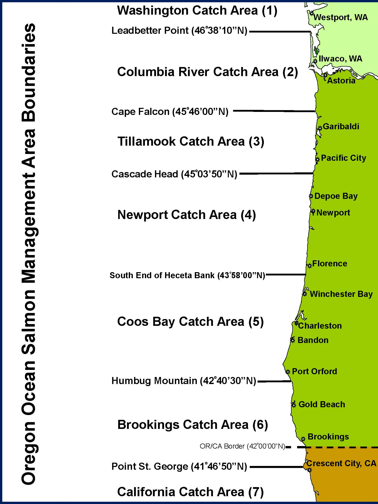
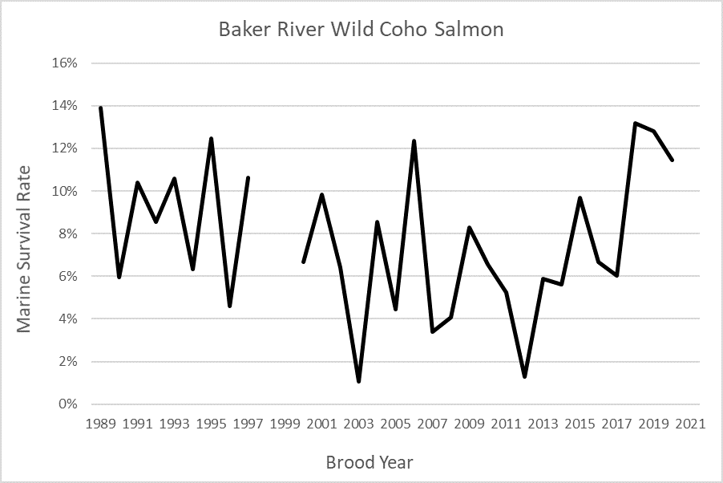
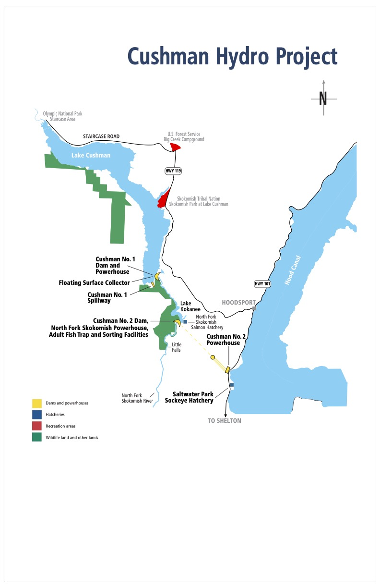

## Semi-hardcoded params:
year.min = 1998 ## minimum year to include from our fram databases. Code uses all years since then.Joint Coho Technical Committee Periodic Report
!! DRAFT DOCUMENT UNDER DEVELOPMENT !!
The CoTC intends to produce this report online in HTML format. The current draft HTML version has much more functionality, better format, and looks more visually appealing than the Word document. However, we are providing a Word document in pdf format to the Southern Panel to facilitate review and collaboration.
TO DO
- re-update
psc_pstwith final final final 2022 postseason run - get multiyear mdb; update
params$mdb(unused in fig/tables but for knit text) - run chunk
rebuild_psc_csvto gen “psc_postfram_1998_2022.csv” - make sure to check and update
fram$runIDsto include 2022 (should be runid 46) - update any
psc_prepreseason run changes following a similar approach and therebuild_psc_pre_csvchunk - further text revisions; drop tables from StaticTable
- figures
- post
- pre/post
- make simple stacked bar of stoplight of nochange/toohigh/toolow
- depiction of ‘un-used’ catch, either fish or ER?
- abundance figures overlaying MUs within regions (US in, US out, BC)
CBE change log
- added “clean_run” as a logical to the parameters. If
TRUE, recreates the temporary .csv files. - Previously used hard-coded RunID numbers when generating intermediate data csv. This was sensitive to changes in numbering scheme; updated to instead specify minimum year (1998, to match comments from original) and include all years of FRAM data after that.
Note that Quillayute and Queets values are those from the FRAM database and have not yet been extracted from the relevant TAMM cells for each year
This report is based on postseason data in PSC_CoTC_PostSeason_CohoFRAMDB_thru2022_03042024.mdb and preseason data in PSC_CoTC_Preseason_CohoFRAMDB_thru2024_06182024.mdb, as well as supporting StaticTables.xlsx.

1 Introduction
In response to a decline in natural Coho Salmon (Onchorynchus kisutch) abundance, the Pacific Salmon Commission established a Southern Coho abundance-based management regime (CoABM) in 1999 (Pacific Salmon Commission 1999). This Southern Coho Management Plan (SCMP, also referred to as ABM, or ‘abundance based management’) aimed to conserve Coho Salmon Management Units (MUs of naturally-spawning Coho Salmon in southern British Columbia and Washington/Oregon) based on abundance status and escapement goals. The SCMP set out to constrain exploitation rates (ERs; defined as total fishing mortality divided by total fishing mortality plus escapement) below maximum levels (caps) on selected management units in order to achieve long-term Maximum Sustainable Harvests (MSH). These constraints are implemented by specifying ER caps for the individual MUs dependent on annual abundance status. During their respective preseason planning processes, the Parties use management reference points to classify the status of each MU as low, moderate, or abundant. The parties then exchange these status determinations as a key input in the development of pre-season plans.
When a new Coho Management Plan was agreed upon in 2008 (implemented 2009 through 2018; (Pacific Salmon Commission 2009)) and the latest agreement finalized (applies to the period from catch years 2019 through 2028; (Pacific Salmon Commission 2022)), modifications were made to the list of specified MUs and to the manner in which exploitation rate caps are established. This periodic report presents information for the MUs identified in the most current Pacific Salmon Treaty’s (PST) Southern Coho Management Plan (Chapter 5 of Annex IV in the current PST). In the 2008 SCMP abundance-based management regimes were established to constrain exploitation rates (ERs) on 13 Management Units (MUs) of naturally-spawning Coho Salmon originating in rivers along the Washington/British Columbia (BC) border. Beggining in 2019, the most recent Management Plan (Pacific Salmon Commission 2022) combined two of the Canadian MUs, the Georgia Strait Vancouver Island and the Georgia Strait Mainland MU into the Strait of Georgia MU. The 12 MUs in the current PST are listed below.
| Management Units within the current Pacific Salmon Treaty Southern Coho Management Plan. | ||
|---|---|---|
| Southern BC | US Inside | US Outside |
| Interior Fraser | Skagit | Quillayute |
| Lower Fraser | Stillaguamish | Hoh |
| Georgia Strait Vancouver Island | Snohomish | Queets |
| Georgia Strait Mainland | Hood Canal | Grays Harbor |
| US Strait JDF | ||
The objective of the SCMP, as described in the Treaty, is to manage the salmon directed fisheries impact on Southern Coho stocks by limiting the total fishery exploitation and allow the different MUs to produce long-term Maximum Sustainable Harvest (MSH), while maintaining the genetic and ecological diversity of the individual populations. In addition, the plan is designed to improve the prospect of sustaining healthy fisheries for both parties over the long-term. The plan is intended to be cost-effective and flexible to available technical capacity and information, while providing a predictable framework for planning fisheries impacts and allowing for objective monitoring, evaluation and modification.
Under the Agreement, the United States and Canada (the “Parties”) are required to establish escapement goals or ERs that achieve MSH, determine MSH ERs for each MU, and establish ERs for each MU and status category (low, moderate, and abundant). Until such time as the Parties provide MU-specific ER targets, the SCMP identified default ER ceilings for the following MU status categories:
| Status | Total Exploitation Rate |
|---|---|
| Low | Up to 20% |
| Moderate | 21% - 40% |
| Abundant | 41% - 65% |
Annual ER caps are established for each of the MUs based on the level of abundance and health of the natural stocks. These caps are then apportioned between the Parties. Constraints for Canadian fisheries on US MUs are determined by formulas that specify sharing of allowable ERs as well as a composite rule, which together adjust caps according to the number of US MUs that fall within a given category. The composite rule adjusts constraints for Canadian fishery exploitation rates based on the number of US MUs which fall in a given category. For example, if only one Washington coastal or Puget Sound Coho MU is in low status, Canadian fisheries are constrained to a total ER on that unit of 12%; if two or more Washington coastal MUs are in low status, the constraint becomes 10%. The most restrictive ER limit for Canadian fishery impacts on US Coho MUs is 10%.
Constraints for US fisheries on Canadian MUs depend on the status of the Interior Fraser MU until the biological statuses of the other Canadian MUs have been determined. The status determination methodology developed and applied by Canada to the Interior Fraser Coho MU (REFERENCE Korman and Sawada) consists of two criteria: smolt-to-adult survival, and escapement, which must be met for three consecutive years in order increase the status from low to moderate or moderate to high. Canada is currently working to develop the information (smolt to adult survival rates, escapements) needed to apply this status determination methodology to the Lower Fraser and Strait of Georgia MUs. Details as to how ER constraints are established based on the status of MUs under the SCMP are contained in Annex IV Chapter 5 Section 9.b-c (Canadian exploitation rate caps on inside and outside US MUs) and Section 9.d (US exploitation rate caps on Canadian MUs).
1.1 Management Unit Overview
The Canadian MUs are comprised of geographical aggregates of naturally spawning Coho conservation units (CUs) within the Interior Fraser River, Lower Fraser River, and Strait of Georgia. A CU consists of one or more spawning populations which are genetically distinct from other conspecific spawning populations. The 2019 renewal of the PST combined the Georgia Basin – East and Georgia Basin – West MUs into a single Strait of Georgia MU, reducing the number of Canadian MUs in the bilateral management regime to three. The CoTC chose to combine model outputs for these MUs in carrying out its pre-season and post-season responsibilities beginning in 2019 and forward rather than reconfigure the FRAM framework.
The US Inside MUs consist of naturally spawning populations originating in the Skagit, Stillaguamish, Snohomish, Hood Canal, and the Strait of Juan de Fuca. Coho populations in the US Inside MUs belong to the larger Puget Sound/Strait of Georgia Coho Salmon evolutionarily significant unit (ESU; (Weitkamp et al. 1995)). Only the eastern portion of the Strait of Juan de Fuca MU is in this ESU. An ESU is a Pacific salmon population or group of populations that is substantially reproductively isolated from other conspecific populations and represents an important component of the evolutionary legacy of the species. The ESU policy (56 FR 58612) for Pacific salmon defines the criteria for identifying a Pacific salmon population as a distinct population segment, which can be listed under the US Endangered Species Act of 1973.
The US Outside MUs consist of naturally-spawning populations from the Quillayute, Hoh, Queets, and Grays Harbor basins. All US Outside MUs, except the Grays Harbor MU, are part of the Olympic Peninsula ESU. Populations from the western portion of the Strait of Juan de Fuca MU are also in this ESU. The Grays Harbor MU is part of the Southwest Washington ESU.
| Management Units within the current Pacific Salmon Treaty Southern Coho Management Plan | ||
|---|---|---|
| Southern BC | US Inside | US Outside |
| Interior Fraser | Skagit | Quillayute |
| Lower Fraser | Stillaguamish | Hoh |
| Strait of Georgia | Snohomish | Queets |
| Hood Canal | Grays Harbor | |
| US Strait JDF | ||
1.2 Fishery Overview
Under the CoABM regime, each Party is required to regulate its fisheries so as not to exceed ER constraints on MUs. Fishery Management Areas for British Columbia (Figure 1.1), Washington (Figure 1.2), and Oregon (Figure 1.3) are shown below.


1.2.1 Canadian Fisheries (CoTC note - this needs updating)
Southern BC Coho Salmon are caught in First Nations, recreational, and commercial troll and net fisheries. Since Coho Salmon [Jeromy comment: This has “Coho Salmon”, but next sentence only uses “Coho”. Would be good to have a consistent lexicon throughout if possible.] rear in areas near the coast they are readily caught in directed fisheries and as bycatch in fisheries targeting other species. As a result, Coho are harvested in mixed-stock fisheries, creating many challenges for the assessment and management of the species.
Coho catches on the south coast of BC have declined since the mid-1980s, initially due to declining abundance and more recently because of severe conservation measures in response to the declining abundance. Total fishery ERs in Canada were reduced from a range of 75 to 80% in the mid-1980s to 60% in 1995, 37% in 1997, 5% in 1998, and are currently estimated by Backwards Coho Fisheries Regulation Assessment Model (FRAM) during catch years 2011 through 2021 at less than 10%.
Historically 89% of the commercial Coho catch on the south coast of BC was taken by the troll sector with the remainder harvested by commercial net fisheries. The West Coast of Vancouver Island (WCVI) troll fishery was the single largest commercial harvester, taking an average of 1.5 million Coho in the 10-year period before 1997, when major fishing restrictions were imposed. This fishery intercepted stocks from the US, Strait of Georgia, and WCVI. Since 2001, average catch retained in the WCVI troll fishery has been 725 Coho, due primarily to the timing and non-retention restrictions in place for this fishery. Historically, catch in the Strait of Georgia troll fishery, comprised predominantly of Strait of Georgia stocks, was much smaller than the WCVI troll fishery (1986-1995 averaged 150,000 Coho, annually). The Strait of Georgia troll fishery has not been permitted to retain Coho Salmon since 1995.
Net fisheries in Johnstone Strait, Strait of Juan de Fuca and the Strait of Georgia harvest Coho incidentally during directed fisheries on Sockeye (O. nerka), Pink (O. gorbuscha), and Chum (O. keta) Salmon. Net fisheries have been curtailed in recent years due to low returns of the target species and concerns for Chinook (O. tshawytscha) and Coho Salmon bycatch.
While the First Nations’ harvest of Coho is small compared with other salmon species, several First Nations harvest Coho for food, social, and ceremonial (FSC) purposes. Coho are caught in hook and line, net, and spear fisheries in or near their local streams. They are also caught incidentally in other First Nations’ salmon fisheries directed on other species, such as Sockeye and Chum Salmon.
Recreational fishing for Coho in BC tidal waters continues to be important to residents and visitors. Until the recent decline in Coho abundance and subsequent severe fishing restrictions, 70% of tidal recreational fishing took place within the Strait of Georgia. Since 1995, most Coho recreational fishery effort and catch has shifted from the Strait of Georgia to the WCVI, in part due to low abundance of Coho inside Vancouver Island. Overall, the proportion of Coho harvested by the recreational fishery has increased as commercial harvest has been significantly reduced as a result of the timing and non-retention harvest restrictions, as well as domestic allocation considerations in Canada that were implemented in response to the low abundance of Coho.
Due to conservation concerns, most notably for the Interior Fraser MU, Canadian Coho Salmon fisheries have seen unprecedented restrictions since 1997. In 1998 and 1999, no directed fisheries on naturally-spawning stocks of Coho were permitted; mandatory non-retention and non-possession of incidentally caught Coho was implemented in all areas, with the exception of some terminal hatchery locations. In the Pacific Region, (i.e., all marine waters of BC), barbless hooks became required for all salmon-directed commercial and recreational hook and line gear in 1998, a regulation that remains in effect. Pacific Region waters were classified as red or yellow zones. In red zones, areas where Thompson River Coho from the Interior Fraser River MU were known to be prevalent, fishing was restricted to very limited experimental selective fisheries, as well as some limited First Nations’ fisheries to meet food, social, and ceremonial requirements. Red zones included inshore waters of Victoria to Barkley Sound and offshore waters of Barkley Sound to Quatsino Sound, from June to September. Special management zones (SMZs), areas of mandatory Coho non-retention with special restrictions, were identified with the intent to avoid Coho encounters. Fisheries were only permitted in locations and times when Thompson River Coho could be avoided or released unharmed. These areas were subject to in-season adjustments, including time and area closures for all sectors. Fisheries conducted in these SMZs were monitored to ensure Coho encounter rates did not become too high, and tissue samples were taken for stock identification. In yellow zones, where endangered stocks were not prevalent, a selective fishing strategy was implemented for all commercial and recreational fisheries [Jeromy comment: Does this mean in red zones, endangered stocks (under SARA?) are prevalent? This context is not provided.]. These fisheries were required to release any live Coho that were caught during operations. Mandatory logbooks and an onboard observer program were initiated in commercial fisheries. Limited Coho retention was allowed only for First Nations and recreational fisheries.
Since 2000, fisheries impacting naturally-spawning Coho from southern BC, Washington State, and Oregon have been managed under the PST ABM regime. The ABM plan constrains total fishery exploitation on key stock MUs in BC For each MU, annual limits of fishing mortality are established based on the categorical level of abundance and the health of the naturally-spawning stocks. In Canada, low status of Interior Fraser Coho has constrained southern BC fisheries for the last decade. The Southern US has been limited to 10% ER on Coho originating from the Interior Fraser MU. Southern BC fisheries, in waters south of Cape Caution where Interior Fraser Coho are prevalent, have been managed to a maximum 3% total fishing mortality rate on the Interior Fraser Coho MU. Non-retention of naturally-spawning Coho is generally in effect except for First Nations FSC opportunities in specific terminal systems where abundance permits and where retention of by-catch during fisheries for other species is permitted. Release of unmarked Coho Salmon during periods when Interior Fraser Coho may be caught is required in all Canadian commercial and recreational fisheries.
1.2.2 US Fisheries
Current US fisheries are constrained by domestic and PST conservation objectives. For the Puget Sound MUs, the current PST Southern Coho Agreement of CoABM uses the thresholds and stepped harvest rate goals from the Comprehensive Coho Agreement (Comprehensive Coho Workgroup 1998), developed by Washington State and the Puget Sound tribes, and adopted by the Pacific Fishery Management Council as Fishery Management Plan conservation objectives in November 2009. Actual ER constraints for Canadian fisheries on US Coho MUs are determined by formulas that specify sharing of allowable total ERs and a “composite rule”. The composite rule adjusts constraints for Canadian fishery ERs based on the number of US MUs that fall in a given category. For example, if only one Washington coastal Coho MU is in low status, Canadian fisheries are constrained to a total ER on that unit of 12%; if two or more Washington coastal MUs are in low status, the constraint becomes 10%. The most restrictive ER limit for Canadian fishery impacts on US Coho MUs is 10%.
Fisheries between Cape Falcon, Oregon and the US/Canada Border are constrained by four factors: (1) management objectives and treaty Indian obligations for individual stock US MUs; (2) treaty Indian/non-Indian and ocean/in-river sharing agreements; (3) stocks listed under the ESA; and (4) requirements of the PST. The starting point for implementing these constraints is the forecasted January age-3 (JA3) abundance and the modeled ocean distribution of each Coho stock.
Most Coho-directed recreational fisheries [Jeromy comment: Freshwater and marine? I think so, for WA, and Columbia River but would be good to add this qualifier in if true. More recently the OR coast freshwater fisheries are all non-selective, hence why I am asking for a bit of a qualifier here if possible.] have been mark-selective since 1999. Non-Indian commercial troll fisheries have been mostly restricted to mark-selective Coho retention since 2000. Treaty Indian fisheries are not restricted to mark-selective retention of Coho Salmon.
1.3 Bilateral Assessment Tool (FRAM) Overview
Coho fisheries are evaluated with the Coho Fisheries Regulation Assessment Model (Coho FRAM), a bilaterally developed tool that is employed for both pre-season fishery planning and post-season estimation of escapements and exploitation rates (see: pre- and post-season applications).
Coho FRAM is an annual mixed-stock accounting model that evaluates a set of stock units within a set of fisheries over time periods within a single fishing year (the calendar year for Coho) (documentation on FRAM can be found here: https://framverse.github.io/fram_doc/). It can be used to estimate catch and escapement based on forecast abundance and planned fisheries (‘forward’), or it can be used to reconstruct ocean abundance from observed escapements and fisheries (‘backward’).
The Coho FRAM base period parameterization, determinining stock-fishery-timestep impacts, was constructed from stock-specific fishery recoveries of coded-wire tags (CWTs) within the time steps January to June, July, August, September, and October to December during coast wide fisheries from 1986 to 1992. The procedure used to generate base period data is depicted below (Figure 1.4). For each base period year, post-season reconstruction of cohort abundances for each Coho MU is based on two different models: the Mixed-Stock Model (MSM) that estimates the Production Expansion Factors for each Production Region and RRTERM program that estimates stock-specific impacts for terminal marine and freshwater fisheries. The MSM uses CWT recoveries for each model stock expanded by the Production Expansion Factors to best describe the total catch in each marine mixed-stock fishery. The MSM/RRTERM cohort analysis has been used for post-season reconstructions for catch years 1986-2007. However, beginning with catch year 1993, too few coded-wire tags were recovered in mixed-stock fisheries to perform robust cohort analyses using the mixed-stock model.

1.3.1 Key Uncertainties with FRAM analysis
FRAM is a deterministic model that reports point estimates of cohort abundances and ERs without explicit measures of uncertainty associated with them. Managers should consider the following data limitations and model assumptions when interpreting FRAM results: - Cohort abundances and ERs are sensitive to the quality of escapement estimates, with estimation practices varying substantially among stocks. For example, Puget Sound net pens programs often lack escapement estimates. For these programs, pre-season abundances were used or were scaled to a nearby hatchery program using a pre-post ratio. - Marine survival indices are used to estimate Canadian MU abundances, except for Interior Fraser, in both pre- and post-season FRAM runs because abundance forecasts and escapement estimates are highly uncertain or unavailable for the remaining two Canadian MUs. - It is unknown if average ocean distribution during the FRAM base period (derived using catch year 1986 to 1992 CWT data) reflect the true annual ocean distribution of Coho stocks in contemporary years; this leads to increased uncertainty in fishery-specific stock impacts. - Complex regulations, such as fine-scale spatial/temporal and mixed retention limits for natural and hatchery Coho within a fishery, are difficult to represent and assess within FRAM and as a result, FRAM may not accurately represent stock-specific impacts within fisheries with these regulations. - Spatial and temporal gaps in catch monitoring of some Canadian fisheries result in underestimation of catch. - Uncertainty in mortality estimates arises from several sources, including incomplete creel census and inaccuracy of fisher reported data, as well as assumed non-retention mortality rates, which are used in the FRAM model. - Natural mortality built [Jeromy comment: Can we describe the year or years it was built in, and that it has not been updated since.] into FRAM is constant and does not reflect inter-annual variability in survival during adult ocean residence (January Age-3 through FRAM’s final time step).
1.4 Environmental Trends Contextualizing Management
The productivity of Pacific salmon populations is influenced by numerous factors, including human activities (e.g., fishing mortality, habitat restoration and degradation, hatchery production) and environmental conditions in both fresh and marine habitats. Because of this, changes in the productivity for most populations partially reflects variation in environmental conditions. Due to large-scale environmental variation captured by metrics such as the El Niño–Southern Oscillation (ENSO) and Pacific Decadal Oscillation (PDO), population productivity undergoes periods of high and low productivity. Relatively productive conditions resulted in high freshwater and marine survival rates and subsequent high adult returns for many salmon stocks throughout the Pacific Northwest at various times, especially in the late 2000s and early 2010s. However, changes in ocean and freshwater conditions beginning in early 2014 due to exceptionally warm ocean waters and associated terrestrial impacts, plus an extremely strong El Niño event, led to subsequent declines in abundance in many populations. Here, we briefly summarize marine and terrestrial conditions over the past 15–20 years to provide environmental context when examining trends in southern Coho Salmon under the PST.
1.4.1 Terrestrial Conditions
Annual average temperatures and precipitation by water year (Oct–Sep) provide a broad-brush view of terrestrial conditions across the Pacific Northwest. A strong and persistent warming trend and large year-to-year variations in precipitation are among the most notable features in recent decades (Figure 1.5). Within snow-dominated watersheds, warmer winters and springs experienced in recent years reduce snow accumulation and hasten snowmelt. Reduced snowpack causes an earlier and smaller freshet in spring and can result in lower minimum flows and higher stream temperatures in summer.

For the Pacific Northwest, water year 2015 stands out as the warmest year on record (Figure 1.5). The combination of below-average precipitation and record-high surface air temperature in 2015 brought record-low springtime snowpack to much of the west. Diminished snowpack and high surface temperatures combined with low springtime precipitation yielded especially low runoff to western watersheds in spring and early summer 2015. Unusually low flows and warm stream temperatures in spring/summer 2015 caused widespread problems for salmon throughout the western United States, including large mortality events for returning Sockeye Salmon to the Fraser and Columbia Rivers.
In June 2021, record-breaking terrestrial temperatures were recorded across western North America due to a ‘heat dome’ (White et al. 2023). It resulted in some of the highest temperatures ever recorded across large parts of British Columbia, Oregon, and Washington (11–19°C, 20–35°F above normal temperatures), including the highest temperature ever recorded in Canada (49.5°C, 121.3°F). This 1,000-year event was due to an exceptionally strong ridge centered over the area, whose strength was greatly increased by climate change. The heat wave sparked numerous extensive wildfires, extensive damage to forest vegetation and crops, and was responsible for the deaths of nearly 1,400 people across the region.
Coho Salmon inhabiting streams, rivers, and marine environments were likely affected by the heat dome, although many of these impacts are not well documented. Streams temperatures across the region increased dramatically in response to the heat dome, which also decreases oxygen saturation, potentially causing to physiological stress to stream-dwelling fish. In intertidal environments in the Salish Sea, an estimated 1 billion animals (primarily shellfish) died as a result of the heat wave coinciding with extreme low tides, which then impacted water quality (Raymond et al. 2022). The true impacts of the 2021 heat dome on Coho Salmon populations managed under PST will likely never be known, but may include generally decreased productivity and survival for the 2020 year class (which returns as adults in 2023), because it was residing in freshwater during the extraordinary event.
1.4.2 Marine Conditions
Surface temperatures in the northeastern Pacific Ocean vary on decadal time scales, with periods of above and below average temperatures, as indicated by the Pacific Decadal Oscillation (PDO; [Mantua et al. (1997)). Recently, surface temperatures were notably cooler than average from 1999–2002, 2008–13 and again starting in 2020 (Figure 1.6). They were warmer than normal from 2003–05, and at record highs for much of the period from fall 2013–20 due to a series of marine heat waves. For the California Current region, surface temperatures reached record high levels from 2014–16, with 2015 being the single warmest year in the historical record (Jacox et al. 2018). In most years, positive PDO values correspond to El Niño events (e.g., the 2015/2016 El Niño), while negative PDO values correspond to La Niña events (e.g., 2021, 2022, and 2023 La Niñas).
Since the original “blob” in 2014–16 (Bond et al. 2015), a series of marine heat waves have spread across large parts of the North Pacific Ocean in 2019, 2020, 2022, and 2023. These heat waves not only cause elevated water temperatures, but are also associated with extremely low nutrient levels. These heat waves vary greatly in their location across the North Pacific Ocean and although largely offshore, they occasionally spread to coastal waters such as 2015.
1.4.2.1 Biological impacts of marine conditions
The biological impacts of these temperature swings and marine heat waves are documented in a number of annual reports and descriptive papers (e.g., Morgan et al. 2019) for areas of the northeastern Pacific Ocean that Coho Salmon occupy during their marine residence period. In all cases, the reports show a dramatic biological response at all trophic levels—from primary producers to marine mammals and seabirds—to the marine heatwaves that have spread across the northeastern Pacific Ocean since 2014 and continued into 2023. These ecosystem changes have had large effects (both positive and negative) on Pacific salmon returns around the Pacific Rim, not just southern Coho Salmon.
Overall, the marine heat wave in 2014–2016 had the most drastic impact on marine ecosystems in 2015, with lingering effects into 2016 and 2017. Conditions had somewhat returned to “normal” in 2018 and again in 2021, but marine heat waves in coastal waters in 2019 and 2022 set off a series of marine ecosystem changes across the North Pacific. Here we provide a brief summary of some of the largest biological impacts recent ocean conditions that were observed.
Primary Producers. One of the most dramatic impacts to coastal waters was the largest bloom of the diatom Pseudo-nitzschia ever recorded in 2015 (Bates et al. 2018). It stretched from Southern California to the Aleutian Islands in Alaska. Pseudo-nitzschia produces domoic acid, a neurotoxin that causes amnesic shellfish poisoning, which is potentially fatal in mammals (including humans) and seabirds, but apparently does not affect fish. The 2015 bloom caused high domoic acid levels, resulting in fishery closures for razor clams and Dungeness crab and the death of hundreds of seabirds and marine mammals. Continuing (but much smaller) Pseudo-nitzschia blooms have continued across to flare up along the coasts from California to British Columbia ever since.
Lower Trophic Levels. Marine heatwaves also dramatically altered the lower trophic levels, resulting in decreases in high quality prey such as lipid-rich copepods and krill, and increases in gelatinous organisms (jellyfish, pelagic tunicates), which have low nutritional value. This shift to poor prey quality was expected to cause poor survival for juvenile fish and seabirds which rely on these prey types. The year 2017 also saw an explosion of Pyrosoma atlanticum, from California to SE Alaska. These normally tropical species are rare north of Southern California but spread north starting in 2013, peaking in 2017, and largely absent north of California by 2019. Pyrosomes are a low-quality, high-fiber prey, but were observed in the stomachs of dozens of species, including juvenile and adult Pacific salmon. Lower trophic levels rebounded in 2021, but less so in 2022 due to inconsistent upwelling.
Nekton. Larger fish and invertebrates, which serve as forage fish, showed both increases and decreases in abundance and ranges. For example, California market squid has been expanding as far north as SE Alaska, and caught in commercial quantities in Washington and Oregon waters since 2016. Other species that proliferated in the warm water of the California Current include Pacific Pompano, Northern Anchovy, and both Jack and Pacific Mackerel. Species with marked declines include Pacific Hake, juvenile sardine and anchovy, and Pacific Herring. Juvenile rockfish were extremely abundant in the northern California Current and as far north as British Columbia in 2016–18. Exotic American shad, has also exhibited remarkable increases in abundance in the Columbia River, with counts over Bonneville Dam reaching 7.4 million fish in 2019 and exceeding 5 million fish since 2018.
Farther north, Northern Anchovy have been extremely abundant in the Salish Sea since 2016. Juvenile salmon of all species except chum have also been below average off the west coast of Vancouver Island, while Chum Salmon have been abundant. The catch of juvenile salmon in 2017 in both Icy Straits, Alaska (mainly Pink, Chum, and Sockeye Salmon), and off the Washington/Oregon coasts (spring Chinook and Coho Salmon), were both extremely low, consistent with low adult returns (e.g., Columbia River spring Chinook Salmon in 2019). Forage fish in Alaskan waters show mixed trends with decreases in Capelin and Sand Lance and increases in Pacific Herring.
Apex fishes. Reports from northern waters suggest increases in several apex fishes, including Spiny Dogfish, Arrowtooth Flounder and sablefish. By contrast, Pacific Cod crashed in 2017, resulting in closures for Alaskan cod fisheries in 2018. Elevated sea surface temperatures in 2015 (and to less extent in 2019) also resulted dramatic range extensions for warm water fishes including billfish, tunas, and sharks.
Seabirds. Particularly notable impacts to seabirds were large die-offs of Cassin’s Auklet in winter 2014–15, and Common Murres between summer 2015 and spring 2016 from California to Alaska and again along the Washington–Oregon coasts in fall 2019.
Marine mammals. Recent extreme ocean conditions have resulted in several large mortality events for marine mammals. In the California Current, record numbers of California sea lion pups were found starving in early 2015, while there was elevated sea lion mortality during 2013–16. Because of poor conditions along the entire coast, the number of California and Stellar sea lions in the Columbia River estuary peaked in 2015, where they consumed large quantities of adult (and presumably juvenile) salmon. There have also been two large whale unusual mortality events recently: in the western Gulf of Alaska and British Columbia in 2015–16 (52 whales of many species), and a gray whale mortality event in 2019 (over 250 dead whales reported from Mexico to Alaska).
Pacific salmon. The abundance of Pacific salmon populations around the Pacific Rim have also shown dramatic changes since 2015. While some populations (especially in northern areas) have returned at record high abundances, others have dropped to new lows. These trends demonstrates that unusually high or low returns are not restricted to any one region, species, or production type (hatchery or natural), but were ocean-wide. For example, recent low steelhead (O. mykiss) returns to the Columbia River basin parallel extremely low steelhead returns to the Fraser River basin, and while Russian Pink and Bristol Bay Sockeye Salmon reached record highs, Fraser Sockeye and Japanese Chum Salmon fell to record lows.
Coho Salmon populations from the Oregon coast to the Salish Sea had unexpectedly low returns in 2015, including some of the lowest returns on record. Although returns were predicted to be above average, the small body size and low abundance of these adults suggested poor feeding conditions during the last summer in marine waters. Steelhead returns were extremely low in 2017 and 2018 in the same areas, to the point that Thompson and Chilcotin River (Fraser River, British Columbia) steelhead were petitioned for emergency protection under the Canadian Species At Risk Act (Neilson and Taylor 2018). One species in the region that increased in abundance was Chum Salmon starting in 2016, perhaps in part due to their reliance on gelatinous prey, which were abundant.
Both Fraser and Columbia River Sockeye Salmon, which re-enter freshwater in mid-summer, incurred huge in-river mortalities in 2015 due to elevated river temperatures. The following year (2016), Fraser River Sockeye Salmon had the smallest return on record (total run of <1 million fish), but was even lower in 2019 (500,000 fish), as progeny of the 2015 year class returned as adults. The 2020 Fraser River Sockeye Salmon return was still lower (<300,000 fish). By contrast, Columbia River Sockeye Salmon returns were relatively high in 2016 (326,000), and reached an all-time high of 341,000 counted over Bonneville Dam in 2020.
In Alaska, there was a strong east–west gradient in run size, with western Alaska generally having exceptionally high salmon returns, while central and southeastern Alaska saw declines. Perhaps most impressive has been the annual catch of Bristol Bay Sockeye Salmon, which broke a new abundance record in 2022 with 79 million adults (the 20 year [2002–2021] average run was 43.6 million). Similarly, 2017 was the highest statewide catch of Chum Salmon on record, due in part to record Prince William Sound catches. In contrast, the abundance of Yukon River Chinook and Chum Salmon have greatly declined for reasons that aren’t entirely clear, leading to conservation concerns for both the salmon and the many subsistence fishers who rely on these runs for nutrition.
2 Determination of MU Status Benchmarks and ER Caps
2.1 Canadian Management Units (this needs to be updated)
[Jeromy comment: the font has changed in this paragraph (in Word version)]
Procedures for determining the pre-season status of Canadian MUs are being developed concurrently with determination of Conservation Unit (CU) status benchmarks required with implementation of the Canada Department of Fisheries and Oceans’ (CDFO) Wild Salmon Policy. Methods have been approved through the CDFO’s internal peer review process, Center for Scientific Advice - Pacific (CSAP) [Holt et al. (2009)). Work in 2018 identified a framework to develop potential Management Reference Points for Canadian MUs (DFO 2018, Korman et al. 2019; https://www.pac.dfo-mpo.gc.ca/consultation/smon/pst-coho-tsp/index-eng.html) included spawner abundance targets but also CWT smolt-to-adult (or “marine”) survival index targets. It was deemed that targets must contain spawner abundance targets, which limited creation of management reference points to the Interior Fraser River MU because it was the only unit with an aggregate abundance timeseries.
Since 2002, in the absence of benchmarks, the CDFO Stock Assessment staff has provided a categorical outlook for the next year’s salmon status. The outlook is intended to provide an objective and consistent context within which to initiate fisheries planning.The category reflects the current interpretation of existing quantitative and qualitative information, including pre-season forecasts if available, and the opinion of CDFO Area stock assessment staff. Where management targets for stocks have not been formally described, interim targets were either based on historical return levels or, if necessary, opinion of local staff.
Canadian Coho Salmon abundance has declined, particularly in southern BC. Interior Fraser River Coho was assessed as endangered by the Committee on the Status of Endangered Wildlife in Canada (COSEWIC) in2002 and then reassessed as threatened in 2016. Interior Fraser River Coho have not been listed on Schedule 1 of the Species at Risk Act, which would afford additional protections to the stock. However, the Canadian Minister of Fisheries and Oceans has established a domestic ER cap of 3-5% for Canadian fishery impacts on Interior Fraser Coho. The Interior Fraser MU is comprised of five Conservation Units (CU; North Thompson, South Thompson, Lower Thompson, Fraser Canyon, and Upper Fraser). The Interior Fraser River Coho recovery planning process has determined the critical benchmark needed to maintain population viability. Even with the reduction in fisheries exploitation, all Southern BC MUs have followed a similar dramatic declining trend in both marine survival and total abundance from the high levels observed in the 1980s and early 1990s. Spawning escapements have responded to the decreased exploitation and are within the range observed during the 1970s and 1980s. However, the sustained low marine survival has resulted in a decreased total abundance.
Because of the absence of programs to estimate total abundance and escapement for the Strait of Georgia and Lower Fraser River Canadian MUs, the bilaterally-developed tool, Backwards Coho FRAM, is relied upon to generate estimates of ocean age-3 cohort abundance and ERs using post-season data scalars. Cohort abundances (catch and escapement) of Canadian MUs, estimated by Backwards Coho FRAM based on modelled scalars, are depicted in Figure @ref(fig:BCAbundance). Reduced abundances apparent since 1996 were a major consideration that led to the development of ABM regimes for management of southern Coho Salmon.
ASK DAN –> why is this figure not working?
2.1.1 IFR MU
Prior to the establishment of PST Management Reference Points, IFR have been assessed by COSEWIC and CDFO.
A COSEWIC assessment in 2002 (Irvine 2002) identified IFR status as endangered while the COSEWIC re-assessment in 2016 (COSEWIC 2016) identified their status as threatened. Between 1990-2000, IFR experienced declines in recruitment in excess of 60% due to changes in freshwater and marine habitats and lagged reductions in harvest, resulting in a status of endangered in 2002. Since 2000, the population has persisted at relatively low abundance and low smolt-to-adult survival rates and was therefore re-assessed as threatened in 2016.
In a review done in 2014, estimated abundance of IFR was below the Interior Fraser Recovery Team (IFCRT) lower benchmark of 23,000 spawners in five out of 10 years, and was below the upper rebuilding benchmark of 35,000 spawners in all 10 years (Decker et al. 2014). For two decades (1992-2011), abundance was also below the lower and upper benchmarks in 50% and 100% of the years respectively. Based on the criteria proposed by the IFCRT (2006), this would indicate that recent abundances of Interior Fraser Coho may be insufficient to conserve genetic diversity and to provide a reasonable expectation of growth and recovery for some of the local populations within the MU. For returns prior to 1992, abundance exceeded the upper benchmark every year going back to 1975.
A Wild Salmon Policy (WSP) assessment in 2013 of the five CUs comprising IFR was undertaken by Parken et al. (in draft). Through this exercise it was determined that two of the CUs, the North Thompson and Lower Thompson, were amber/green and the remaining three CUs were amber. WSP designation is determined to provide guidance to managers on the status of populations and their likelihood of a COSEWIC assessment. It is an expert judgment on the past and current state of escapements and does not speak to productivity of a stock. In the case of IFR WSP determinations, the escapements under review were achieved under a low exploitation regime and productivity of the five populations within the IFR MU have recently been determined to be low (Decker et al. 2014).
It is important to note that designation under the WSP is different from that under the PST. Within the PST chapter 5, two of the five stated objectives of the Coho Management program, which guides the establishment of ER ergo PST status, are to a) constrain total ER to maintain maximum sustainable harvest over the long term while maintaining genetic and ecological diversity of the component populations and b) improve long term prospects for healthy fisheries in both countries.
Though the WSP Status review determined that two of the five CUs comprising IFR MU may have enough spawners on the ground to maintain genetic and ecological diversity, IFR are still in a low productivity regime. Allowable harvest that meets the criteria of the PST is still low, therefore PST status may be low while WSP status is green.
Since 2018, and retrospectively, the survival index and abundances have been compared directly to the PST Management Reference Points. The MU survival index has never exceeded 3% since 1999, so the MU has persisted in a low status.
2.2 US Inside Management Units
The status for US Inside MUs is assigned based on ocean abundance (forecasted or re-constructed). Pre-season estimates of ocean abundance are typically forecasted from measured or modeled smolt production for each MU and multiplied by a marine survival rate predicted for each MU. Marine survival is predicted with a variety of methods including average return rates, correlations between jack and adult return rates, and correlations between environmental variables and historical return rates [Jeromy comment: Are these static to each MU? If so then a table for what type of method applies to each MU would be very useful, particularly if we are trying to determine what environmental conditions are useful for not for tracking long term, but if not then disregard this comment.]. Post-season estimates of ocean abundance are estimated using escapement and catch data and the Backwards Coho FRAM. The status of each MU is defined by a series of ocean abundance breakpoints (see Table: @ref(tab:InsideMUABM)). Domestic management of Puget Sound naturally-spawning Coho stocks also uses abundance-based, tiered ER objectives defined in the Comprehensive Coho Plan (Comprehensive Coho Workgroup 1998), that are similar to but not exactly consistent with the PSC guidelines. The identified break points between Low, Moderate, and Abundant status are based on population-specific productivity analyses conducted by the state and tribal co-managers in each river basin.
2.3 US Outside Management Units
The status for US Outside MUs is assigned based on the ER ceiling identified annually, ocean abundance, and existing MU escapement goals (Pacific Salmon Commission 2022). Management objectives are expressed as a range of spawning escapements expected to produce MSY (Pacific Fishery Management Council 2023a). Allowable ERs are calculated from the forecast abundance and the lower end of the existing escapement goal range and used to classify the categorical status of the MUs. This rate is the maximum allowed under the PST when the MU is in the moderate or abundant status, but ERs up to 20 percent are allowed if the MU is in the low abundance status.
Pre- and post-season ocean abundances are estimated with the same approach described for the US Inside MUs. Escapement goals for the US Outside MUs are defined by state and tribal co-managers in each river basin and include escapement ranges in all but one (Grays Harbor) MU. Escapement ranges were originally intended to reflect the range of uncertainty in the MSH escapement goals identified for each of these populations. Unlike the US Inside MUs, escapement goals for the US Outside MUs do not vary with run size. The escapement goals used for PST status determinations are the floor of the designated escapement ranges (see Table: @ref(tab:OutsideMUABM)). The stock status is “Low” if the ocean abundance is low enough that the ER ceiling falls at or below 20% in order to achieve the bottom end of the escapement range. The stock status is “Moderate” if ocean abundance results in an ER ceiling between 21% and 40%. The stock status is “Abundant” if ocean abundance results in an ER ceiling above 41%.
2.4 US Management Units Federal Status
Coho Salmon were the first Pacific salmon species for which coast-wide evolutionarily significant units (ESUs) were delineated (Ford 2011). Based on genetic and life history information, the US MUs subject to the PST belong to three different Coho Salmon ESUs, the Puget Sound/Strait of Georgia, the Olympic Peninsula, and the Southwest Washington ESUs. The Puget Sound/Strait of Georgia Coho ESU is currently a species of concern under the US Endangered Species Act [ESA; Ford (2011); Species of Concern 4/15/04, 69FR19975]. The Olympic Peninsula ESU was evaluated for listing under the ESA and was determined to be not warranted (ADD link to: 60 FR 38011; July 25, 1995). The Southwest Washington ESU is currently categorized as “undetermined”. Puget Sound/Strait of Georgia Coho are not currently candidates for listing in Washington as State Endangered, Threatened, or Sensitive (Washington Department of Fish and Wildlife 2020).
At the federal level, species of concern do not have formal protection under the ESA. The primary purpose of identifying species of concern is to prevent the need to list them as threatened or endangered under the ESA. This purpose can be achieved by the following actions: (1) identifying species potentially at risk; (2) increasing public awareness about those species; (3) identifying data deficiencies and uncertainties in species’ status and threats; (4) stimulating cooperative research efforts to obtain the information necessary to evaluate species’ status and threats; and, (5) fostering voluntary efforts to conserve the species before listing becomes warranted.
Additionally, at the federal level, Coho Salmon caught in coastal waters of the U.S. (e.g., greater than 3 but within 200 nautical miles offshore) are managed under the Magnuson-Stevens Fishery Conservation and Management Act (MSA), which is the legislation providing for the management of marine fisheries in U.S. waters. In 2018, the National Marine Fisheries Service (NMFS) notified the Pacific Fishery Management Council (Council) that the Strait of Juan de Fuca, Queets, and Snohomish natural Coho salmon stocks managed under the Council’s Pacific Coast Salmon Fishery Management Plan (FMP) met the overfished criteria of the FMP and the MSA. NMFS determined that these stocks were overfished under the MSA, due to spawning escapement falling below the required level for the 3-year period 2014-2016. The MSA requires overfished stocks to be rebuilt in as short a time as possible, not to exceed 10 years. The overfished determinations were announced in the Federal Register on August 6, 2018 (83 FR 38292). In response to the overfished determination, the Council developed rebuilding plans for these stocks and provided them to NMFS in 2019. In 2021, NMFS issued a final rule under the authority of the MSA to approve and implement rebuilding plans recommended by the Council for the three stocks (86 FR 9301; https://www.federalregister.gov/documents/2021/02/12/2021-02834/fisheries-off-west-coast-states-west-coast-salmon-fisheries-rebuilding-Coho-salmon-stocks). This final rule adopts the existing harvest control rules, which use an annual abundance-based stepped harvest rate control rule with stock-specific abundance levels governing the total ERs applied to forecast stock abundance levels. For Snohomish natural Coho, this final rule amends the existing harvest control rule by adding a 10% buffer to the existing escapement goal and adjusting the abundance steps during the rebuilding period. For all three Coho salmon stocks, the Council’s Salmon Technical Team’s analysis determined that freshwater and marine habitat conditions were the primary cause of these stocks meeting the FMP’s criteria for being overfished rather than fishing. Recently, it was determined that the Queets and Strait of Juan de Fuca MUs have met the criteria for rebuilt status based on the most recent three-year geometric mean of escapement estimates (2020-2022) (Pacific Fishery Management Council 2024).
3 Annual Implementation of the Southern Coho Management Plan
The Coho Fisheries Regulation Assessment Model (Coho FRAM, Model Evaluation Workgroup (MEW). 2008) has been the tool used to plan US preseason fisheries and also to evaluate, postseason, exploitation rates (ERs) by the fisheries of both Parties on the naturally spawning Coho management units (MUs) specified by the CoABM. Canada has not been using Coho FRAM preseason, instead using a combination of a ‘domestic model’ for planning marine fisheries and a ‘decay model’ for planning Fraser River fisheries.
Each country manages the Coho harvest within its ER cap through its own domestic fisheries management processes and annual fisheries plans. For Canada, the annual domestic planning process is documented in the salmon Integrated Fisheries Management Plan (IFMP). For the US, the North of Cape Falcon ocean salmon fishing plans are reported in Preseason Report III (PFMC documents). For US Inside MUs, the 2019 PST uses the exploitation rate thresholds and stepped harvest rate goals from the Comprehensive Coho Agreement and adopted as (Fishery Management Plan) FMP conservation objectives in 2009. For US Outside MUs, exploitation rate constraints represent the Maximum Fishing Mortality Threshold (MFMT). For US domestic purposes, the Pacific Fishery Management Council MU status categories are “critical”, “low”, and “normal”, which correspond to the PSC categories of “low”, “moderate” and “abundant”, respectively (PFMC_2022b?).
The US FMP includes status determination criteria (SDC) for overfishing, approaching an overfished condition, overfished, not overfished/rebuilding, and rebuilt (Pacific Fishery Management Council 2023b). These criteria are:
Overfishing occurs when a single year exploitation rate exceeds the maximum fishing mortality threshold (MFMT), which is based on the maximum sustainable yield exploitation rate (FMSY);
Approaching an overfished condition occurs when the geometric mean of the two most recent postseason estimates of spawning escapement, and the current preseason forecast of spawning escapement, is less than the minimum stock size threshold (MSST);
Overfished status occurs when the most recent 3-year geometric mean spawning escapement is less than the MSST;
Not overfished/rebuilding status occurs when a stock has been classified as overfished and has not yet been rebuilt, and the most recent 3-year geometric mean spawning escapement is greater than the MSST but less than SMSY;
A stock is rebuilt when the most recent 3-year geometric mean spawning escapement exceeds SMSY.
Queets natural Coho, Strait of Juan de Fuca natural Coho, and Snohomish natural Coho salmon stocks were classified as overfished in 2018, and the Council adopted rebuilding plans for these stocks in 2019 (Pacific Fishery Management Council 2023a). In 2020, Snohomish natural Coho was reported to have met the criteria for not overfished/rebuilding. In 2023, Snohomish natural Coho was reported to have met the criteria for rebuilt and Strait of Juan de Fuca natural Coho was reported to have met the criteria for not overfished/rebuilding. Queets natural Coho continue to meet the criteria for overfished. Coho fisheries, particularly north of Cape Falcon, were shaped to minimize impacts on these stocks and meet the objectives of the rebuilding plans. Objectives of the rebuilding plans for Queets natural Coho and Strait of Juan de Fuca natural Coho are to manage the stock under status quo Smsy.
3.1 Annual Determinations of Allowable Exploitation Rates for Management Units
3.2 United States fishery Planning Process
The US annual salmon fishery planning process starts in January with a Stock and Fishery Evaluation (SAFE) report on fisheries and escapements from previous years and concludes in early April when preseason fishing plans for US fisheries are developed. Outlined below are the Coho FRAM inputs used within the US domestic process to plan annual Coho fisheries, and postseason data needed to evaluate the preseason plan.
Preseason FRAM inputs:
- Stocks’ abundance forecasts
- Fishery inputs by Coho FRAM time period (e.g., season structure, gear and retention restrictions, quota levels, fishery harvest rate scalars)
Inseason:
- FRAM fishery adjustments
Postseason FRAM inputs:
- Stocks’ observed escapement
- Fisheries’ observed catch and non-retention mortality by FRAM time period
Because the domestic planning processes of the Parties are not synchronous, a single pre-season command file containing expectations for both Canada and the US is not available prior to the conclusion of the PFMC process (US pre-season fishery planning) in April. The pre-season command file used by the PFMC incorporates cohort abundance for both Canadian and US MUs, but planned fishery regulations for US fisheries only. Unless other information is available, Canadian regulations are assumed to be similar to those implemented in the previous year. Subsequent to this process, additional command files are generated to represent the actual Canadian fishing plans. Command files used in pre-season planning from 2004 to 2023 are detailed in the table below. These files contain specific information used at the time to model fisheries along with the pre-season forecasts of stock abundances.
Pre- and post-season command files and base period used in FRAM to evalaute exploitation rates MUs over catch years 2004 through 2023. “Post-season Original” command files are those used to generate estimates for the Annual ER Report provided to the Southern Panel during the PSC Annual Meeting.
| ** Catch Year ** | ** Pre-season US ** | ** Pre-season Canada ** | ** Post-season Original ** | ** Post-season Revised ** | ** Base Period Used in Revised BKFRAM Run ** |
|---|---|---|---|---|---|
| 2004 | 0425.Cmd | 0427.Cmd | 04pa.Cmd | BK04.Cmd | CohoBase |
| 2005 | 0519.Cmd | P5at.Cmd | 05p9bk.Cmd | BK05.Cmd | CohoBase87917 |
| 2006 | 0619.Cmd | 0631.Cmd | 06p4.Cmd | BK06.Cmd | CohoBase-86-92-NoUF86-Jan2008 |
| 2007 | 0714.Cmd | 0714.Cmd | 07JH.Cmd | BK07.Cmd | CohoBase-86-92-NoUF86-Jan2009 |
| 2008 | 0824.Cmd | 0828.Cmd | BK08.Cmd | BK08.Cmd | CohoBase-86-92-NoUF86-Feb2008 |
| 2009 | 0920.Cmd | 0920.Cmd | BK09.Cmd | BK09.Cmd | CohoBase-86-92-NoUF86-Feb2009 |
| 2010 | 1016.Cmd | 1016.Cmd | BK10 PSC Feb14 | TBD | CohoBase-86-92-NoUF86-Feb2009 |
| 2011 | 1116.Cmd | TBD | Coho2011Post_PSC 2013 | TBD | TBD |
| 2012 | 1229.Cmd | TBD | Coho2012Post_PSC SSNPx2 Q 2014 | TBD | TBD |
| 2013 | bc-1323 all FRAM inputs | TBD | bk 2013 Final ver3 Feb 11 2015 | TBD | TBD |
| 2014 | bc-Coho1418 US and BC preseason 2014 | TBD | bc-BK2014 w TAMM inputs final#2 | TBD | TBD |
| 2015 | bc-Coho 1523 Final | TBD | bc-bkCoho2015 Final | TBD | TBD |
| 2016 | bc-Coho1637 rerun by CoTC | TBD | bc-BK2016 BPMar2013 final | TBD | TBD |
| 2017 | bc-Coho1731_Final | TBD | bc-BK Coho 2017 final take2 | TBD | TBD |
| 2018 | bc-Coho1830 | TBD | bc-BKCoho2018_A_2_a | TBD | TBD |
| 2019 | bc‐Coho1925 | TBD | bc‐BKCoho2019_A_2_d | TBD | TBD |
| 2020 | bc‐Coho2032 | TBD | bc‐BKCoho2020_A_2_c | TBD | TBD |
| 2021 | bc‐Coho2140_Final | TBD | bc‐BkCoho2021_A_2 | TBD | TBD |
| 2022 | TBD | TBD | Not yet available | Not yet available | Not yet available |
| 2023 | TBD | TBD | Not yet available | Not yet available | Not yet available |
3.2.1 US Preseason Abundance Forecasts
The US forecast development commences in January of every year. US Forecasts for both Coho and Chinook stocks are finalized in late February and published in the annual Pacific Fisheries Management Council’s (PFMC) Pre I Report. In mid-March, the Parties share general expectations for stock abundance and fisheries though a manager-to-manager information exchange (see Development of Canadian Preseason Coho FRAM Inputs). These forecasts are then used throughout the PFMC/NOF (North of Falcon) salmon fishery planning meetings which conclude at the April PFMC meeting.
The forecast methodologies for many US stocks’ are generally based upon the products of two estimates specific to each production source: 1) number of smolts leaving freshwaters; and, 2) expected regional marine survival rates. Numbers of naturally produced smolts are estimated in a variety of ways but are based upon a large and widely distributed system of smolt traps. The number of smolts released from hatcheries are known. Marine survival is defined as, and calculated from, catch plus escapement from CWT data. Sibling relationships, between jack returns and subsequent return to the mature cohort, have also been used as an index to predict marine survival. Environmental conditions have been increasingly relied upon as predictors of anticipated survival from smolt to adults entering the fisheries.
In recent years, a variety of preseason abundance estimators have been employed for Puget Sound and Washington coastal Coho stocks, primarily based on smolt production and survival (Pacific Fishery Management Council 2023b). These estimators are used to forecast preseason abundance of adult Ocean Age 3 recruits. Forecasts for natural Puget Sound Coho stocks were generally derived by measured or predicted smolt production from each major watershed or region, multiplied by stock-specific marine survival rate predictions based on a jack return model from the WDFW Big Beef Creek Research Station in Hood Canal, natural Coho CWT tagging programs at Baker Lake (Skagit River basin) and South Fork Skykomish River, adult recruits/smolt data generated from the WDFW Deschutes River Research Station, or other information.
3.2.2 Development of US Preseason FRAM Inputs
US fishery planning relies upon both the Coho and Chinook FRAM models. The process starts at the early March PFMC meeting, proceeds through March at a variety of regional meetings (including the NOF meetings), and concludes in early/mid April at the next PFMC meeting.
US Coho FRAM Stock Abundance Inputs: Abundance forecasts are incorporated into two models, Coho FRAM and Chinook FRAM, both of which rely on similar algorithms and common computer code. Mass marked and unmarked naturally and hatchery produced stocks (components of MUs) are represented in US Coho FRAM (e.g., Queets naturally produced unmarked, Queets naturally produced marked, Queets hatchery unmarked, Queets hatchery marked). For the MUs specified by the CoABM, appropriate unmarked naturally produced stocks are combined. Numeric forecasts for southern US Coho stocks are provided from regional managers which utilize a variety of methodologies. The annual forecasts of Coho FRAM stocks are entered as Abundance Scalars, applied within the model to Base Period Stock Abundance.
Prior to the March PFMC meeting, an initial Coho FRAM model run with last year’s planned fisheries and the current year’s US forecasts serves to inform, in a general sense, how the fishery plan from the previous year needs to change to accommodate the current year’s stocks’ abundances. The results from this model run are included in the PFMC’s Pre I Report.
Starting with this initial model run, the US domestic salmon planning process is affected by the timing and quality of forecasts for Canadian Coho stocks. Coho FRAM performs best when data for all stocks are incorporated. The US domestic process is, in theory, at the half way point before Canadian forecasts are provided and combined with US forecasts for FRAM modeling at the NOF 2 meeting in late March. Thus, at the March PFMC meeting and the NOF 1 meeting there is hesitation to fully use the FRAM results for planning domestic fisheries as those results will likely change when Canadian forecasts are incorporated.
US FRAM Fishery Inputs: Expected fishery catch and/or mortality is the other major category of preseason inputs to Coho FRAM. At the March PFMC meeting three options (e.g., catch levels, retention restrictions, harvest rate scalars, seasons) are developed (low, moderate, high) for the US ocean fisheries (California, Oregon, and Washington coasts). The FRAM results for both Coho and Chinook from these March options are published in the annual PFMC Pre II Report.
During the course of March and early April US meetings, the North of Falcon (NOF) domestic planning refines fishery inputs to insure compliance with various agreements. These include the PFMC Salmon Framework Plan, domestic and international treaties; and the US Endangered Species Act which collectively establish constraints on fishery impacts upon US Coho and Chinook stocks.
For the PFMC ocean fisheries the model inputs are Catch Quotas and regulations such as mark-selective fisheries, with the expectation that subsequent inseason monitoring will close fisheries without exceeding quotas. The model inputs for most sport and commercial US Puget Sound marine and terminal area fisheries are expected catch or expected harvest rates, generally based upon recent year averages and anticipated fisheries for Fraser Sockeye, Pink and Chum Salmon, and regulations such as mark selective fishing. In some cases the Catch Quota management approach is also used within Puget Sound with planned fishery closure as inseason observations indicate FRAM total fishery mortality estimates are being approached. The mortality associated with Coho non-retention is another class of fishery inputs.
Through the month of March the NOF meetings shape inside fisheries (Washington Coastal terminal, Puget Sound marine and freshwater) for both Coho and Chinook for compliance with domestic and international requirements. The NOF planning informs the April PFMC meeting toward the development of the final set of ocean, inside, and terminal fisheries. The FRAM modeling results of the final adopted regulations for ocean fisheries are published in the PFMC Pre III Report, and submitted to the US Department of Commerce for confirmation of compliance with the US Endangered Species Act and other domestic obligations. Inside fisheries are formalized by regional agreements by state and tribal managers. There is virtually no ability to modify the regulations and agreements after they are adopted.
Throughout this process, the January post season, Pre I-III reports are provided to Canada as information. The Final April PFMC Coho FRAM run is also provided to Canada. It is the April PFMC model run that until recently has provided the information for post season assessment of exploitation rates (see Canadian section of “Timing of Domestic Planning” for potential exception).
3.2.3 US Inseason Management
Inseason changes to planned U.S fisheries are limited, but have been implemented under some specific conditions. When ocean area/fishery specific quotas are not being caught in an ocean area then part of the quota may be transferred to another ocean area/fishery, based upon FRAM estimates of neutral impacts to the limiting stock(s); this may include adjustments to bag limits, seasons, and/or MSF regulations. The preseason planned prosecution of some fisheries is dependent upon the results of test fisheries, i.e. the Fraser Panel Sockeye directed commercial fisheries. Emergency closures due to attaining or exceeding planned catch quotas or in response to indications of reduced abundance.
3.2.4 US Management Units 2023 Exploitation Rate Constraints
For 2023, Puget Sound and Washington coast Coho Salmon constraints are as follows (Pacific Fishery Management Council 2023a):
Fishery Management Plan (FMP)
| FMP Stock | Total Exploitation Rate Constraint | Categorical Status |
|---|---|---|
| Skagit | 35% | Low |
| Stillaguamish | 50% | Normal |
| Snohomish | 40% | Low |
| Hood Canal | 45% | Low |
| Strait of Juan de Fuca | 40% | Low |
| Quillayute Fall | 59% | |
| Hoh | 65% | |
| Queets | 65% | |
| Grays Harbor | 65% |
PST Southern Coho Management Plan
| US Management Unit | Total Exploitation Rate Constraint | Categorical Status |
|---|---|---|
| Skagit | 35% | Moderate |
| Stillaguamish | 50% | Abundant |
| Snohomish | 40% | Moderate |
| Hood Canal | 45% | Moderate |
| Strait of Juan de Fuca | 40% | Moderate |
| Quillayute Fall | 53% | Abundant |
| Hoh | 69% | Abundant |
| Queets | 53% | Abundant |
| Grays Harbor | 69% | Abundant |
FMP total ER constraint is preliminary. For Puget Sound stocks, the exploitation rate constraints and categorical status (Normal, Low, Critical) reflect application of Comprehensive Coho Agreement rules, as adopted in the FMP. For Washington Coast stocks, exploitation rate constraints represent MFMT. Note that under US v. Washington and Hoh v. Baldrige case law, the management objectives can differ from FMP objectives provided there is an annual agreement among the state and tribal comanagers; therefore, the exploitation rates used to report categorical status do not necessarily represent maximum allowable rates for these stocks.
PST Southern Coho Management Plan constraint is Preliminary. For Puget Sound and Washington Coast management units, the exploitation rate constraints reflect application of the 2019 PST Southern Coho Management Plan.
Under the PST Southern Coho Management Plan, categories (Abundant, Moderate, Low) correspond to the general exploitation rate ranges depicted in paragraph 8(b)(iii) of the 2019 PST Southern Coho Management Plan. For Washington Coast stocks, categorical status is determined by the exploitation rate associated with meeting the escapement goal (or the lower end of the escapement goal range). As Washington Coast stocks are managed to achieve agreed escapement goals, this exploitation rate also becomes an approximation of the maximum allowable rate unless the stock is in the “Low” status. In that case, an ER of up to 20% is allowed.
Grays Harbor constraints are based on projected natural area spawners (wild plus hatchery strays) and MSP escapement goal of 35,400. Exploitation rate constraint subject to change should comanagers agree to a modified escapement goal under US v. Washington and Hoh v. Baldrige case law.
Key considerations for Canadian fishery management for Coho in 2023 are expected to include:
- meeting domestic conservation obligations for Interior Fraser (including Thompson River) Coho;
- Coho harvests by First Nations fisheries;
- incidental impacts during commercial and First Nations fisheries directed atChinook, chum, and especially Fraser Sockeye salmon which will see a dominant late run return in 2023 (Pacific Fishery Management Council 2023a).
The Canadian fishery regimes affecting Coho are expected to be driven by Canadian domestic allowable impacts on the Thompson River component of the Interior Fraser management unit, Fraser Chinook concerns and Fraser Sockeye stocks of concern co-migrating with the late run. In years prior to 2014, Canadian fisheries were managed so as not to exceed a three percent maximum exploitation rate. In May 2014, Canada decided to permit up to a 16 percent exploitation rate on upper Fraser Coho in Canadian fisheries to allow for impacts in fisheries directed at a record Fraser Sockeye Salmon forecast. Since 2015, upper Fraser Coho in Canadian fisheries have been managed per low status limitations. The projected status of Canadian Coho management units in 2023 indicates continuing concerns for the condition of Interior Fraser Coho. The Interior Fraser Coho management unit is anticipated to remain in low abundance status, resulting in a requirement to constrain the total mortality fishery exploitation rate for 2023 Southern US fisheries to a maximum of 10.0%.
3.3 Canadian Fishery Planning Process
Annual Canadian fisheries are planned using a combination of two domestic models (marine fisheries and freshwater decay models) and tools focused upon Interior Fraser River (IFR) Coho. The planning process starts early in the year. A draft Integrated Salmon Fishery Management Plan (IFMP) is available for stakeholder comment in April, but the IFMP is not finalized until formally approved by the Fisheries Minister in June.
In the domestic process, initial planning scenarios are developed based on discussions with Fishery Managers, preliminary salmon outlook for stock status (prepared in November of previous year), effort expectation (targeted or incidental impact on IFR Coho) given ER constraints, and domestic allocation policy. Once stock abundance forecasts are available in March and timing and diversion forecasts for Fraser Sockeye are available in June, the final Salmon IFMP is submitted to the Minister for approval. The Canadian domestic model does not use Coho abundance forecasts directly, relying instead upon past relationships between fisheries’ effort and IFR ER, to estimate preseason projected ER for IFR. Depending on what species or fishery specific objectives are in place for the upcoming season, the domestic model is populated with anticipated effort based on trends in recent years and scaled to base period (1986–1997) effort. Multiple scenarios are run based on adjusting preliminary fishing plans (species, effort, month, gear, regulations) and results are reviewed by Fisheries Managers and evaluated for multiple objectives, in particular, meeting the preseason ER objectives for IFR Coho.
3.3.1 Development of Canadian Preseason Coho FRAM Inputs
The US preseason Coho FRAM modeling requires Canadian inputs to complete the model for the US domestic planning and this also enables the pre to post season Coho FRAM evaluation of both Parties’ fisheries. The Canadian data used to inform Coho FRAM for annual US preseason planning and joint postseason evaluation are outlined below:
Preseason:
- Stocks’ abundance forecasts, or;
- Regional expected marine survival rates, based on CWT indicator stocks;
- FRAM fishery scalars by Coho FRAM time period from postseason analysis of a fishery plan similar to anticipated fishing patterns
Inseason:
- FRAM fishery adjustments or significant deviations in expected abundance / catch
Postseason:
- Stocks’ observed escapement, or;
- Regional observed marine survival rates;
- Fisheries’ observed catch by FRAM time period
Canadian FRAM Stock Abundance Inputs: US FRAM preseason modeling requires forecasts of Canadian stocks. Forecast development commences every year in early March, and is provided to US FRAM modelers in mid to late March for use at the second NOF meeting, prior to the April PFMC meeting.
To obtain these values Canadian forecast methodology uses the following information:
- Annual hatchery production
- Base Period FRAM natural production
- Base Period hatchery production
- Predicted marine survival
- Base Period marine survival
- Base Period FRAM stock abundance values
Estimates of freshwater production (smolt out-migrants) for hatchery produced Coho, by FRAM production region, are scaled to Base Period production. Next the annual expected regional marine survival (MS) is scaled to Base Period marine survival. Both ratios are applied to a stock’s Base Period Abundance to produce the annual adult abundance forecasts. To illustrate (by stock):
Adult H Abundance = (Annual H Smolts) / (Base H Smolts) X (Expected MS) / (Base MS) X (*Base Adult Abundance)
Hatchery smolt data are obtained from the Canadian Salmon Enhancement Program. Where naturally produced smolt out-migrant estimates exists (2 of 14 Canadian production regions), the values are used. For the production regions where naturally produced smolt data are not available (the remaining 12 of 14 Canadian production regions), the default production starting values has been the same as the annual hatchery output for the same FRAM production region, assuming similar smolt abundance trends between naturally produced and hatchery smolts. As hatchery production has been reduced over time it has become necessary to find other means to obtain the surrogates for naturally produced smolt production.
Marine survival expectations have been based upon hatchery and wild indicator CWT returns. As the number of Coho indicators has been reduced over time it has become necessary to use adjacent MU indicators to estimate marine survival for some MUs and use hatchery indicators to estimate survival of naturally spawning Coho.
For IFR, where naturally produced smolt output is not available, the forecasted adult returns are used as inputs to Coho FRAM. This forecast is based on a naive model, usually an average of the previous three years estimated ocean adult abundance. However, the forecast may be “as observed last year” when it appears a longer term average is not appropriate; this was the case for the 2016 fishing year forecast. Several US 2016 forecasts also used the “as observed last year” approach due to the extremely poor returns in 2015 and the observations that those same poor environmental conditions existed for the smolts entering the ocean in 2015 (i.e., the 2016 adults).
Canadian FRAM Fishery Inputs:
Preseason FRAM’s anticipated fishery related mortality for Canadian Coho retention fisheries is modeled using Fishery Scalars (these Scalars essentially function as a harvest rate within the FRAM) taken from postseason Coho FRAM model runs with similar fishery plans and effort. For example, impacts of the Fraser River Sockeye directed fisheries may be estimated from 4 years previous. The Fraser River pink directed fishery impacts are estimated from the fisheries 2 year previous. The impacts from the Chinook troll fishery are based on a year with a similar Chinook harvest guidelines. The mortality associated with Coho non-retention regulation is another class of fishery inputs, also taken from previous postseason FRAM model runs under the assumption of similar fishery plans and effort, and similar Coho abundance levels.
3.3.2 Canadian Inseason Management
Canadian fishery planning process generally concludes in June, with the fisheries directed upon Fraser River salmon (Pinks, Sockeye, and Chum) driven by test fisheries. This later planning process can produce anticipated fishery impacts that diverge from the postseason Canadian fishery scalars used for the US domestic modeling the previous April. In such cases the April PFMC FRAM model run can be “updated” to evaluate both Parties compliance with the Coho Agreement.
3.3.3 2023 Preseason Forecasts and MU Status (Placeholder)
does the Southern Panel wish us to describe forecasts for the year we have not assessed post-season?
3.4 Joint Canadian and US Postseason Evaluations
“Backwards Coho FRAM” is used to generate estimates of exploitation rates that are used to evaluate management performance relative to constraints set forth in the CoABM. Data required to populate FRAM are not available until one year after the fisheries were prosecuted, thus the 2021 postseason ER estimates were produced in February of 2023. The Backwards Coho FRAM is also employed to produce estimates of historic exploitation rates reported in this Periodic Report.
Backwards Coho FRAM requires estimated mortalities by fishery strata (uses the Base Period stock-fishery-time steps; terminal IFR fisheries have been incorporated recently) and available estimates of escapements to reconstruct annual cohort abundances and generate post-season estimates of ERs. The escapement estimates for Coho FRAM stocks and catch information (catch, type of fishery –Mark Selective, Non-retention, Quota) for FRAM fisheries are compiled from various government agencies (USA: Federal, State and Tribal; Canada: Federal, and First Nations) and reviewed by the CoTC.
The Backwards Coho FRAM derives total cohort abundance of Coho FRAM stocks through an iterative process of estimating the set of stock abundance scalars that best explain observed escapements and reported catches. FRAM calculation of stock abundance scalars is the preferred method and occurs when escapement data are available (almost all US stocks). When escapement estimates are not available (almost all Canadian stocks), the stock abundance scalars are calculated externally and entered into FRAM; an estimate of “observed” marine survival has been used as a surrogate to recalculate Canadian stock abundances per the preseason method previously described. Consequently, FRAM’s iterative process of estimating a full set of stock abundance scalars is not possible and this has implications for backwards FRAM estimates of abundance for all stocks. Ideally total cohort abundance for each MU is derived by summing model estimated stock specific: pre-terminal catch, terminal catch, and escapement.
The Backwards Coho FRAM provides two estimates of cohort abundance, termed “Ocean age-3” and “January age-3”. Ocean age-3 abundance includes escapement and fishery impacts. January age-3 includes escapement, fishery impacts, and natural mortality. Ocean age-3 is the basis for Pacific Salmon Treaty stock status and is therefore the measure provided in the tables and figures in this report, and in the annual postseason evaluations.
These estimates of cohort abundance, catches and escapements are used to generate estimates of ERs and determine MU status for post season reporting to the Southern Panel.
3.5 Overview of Coded Wire Tag Use
The use of the term indicator stock within this report does not imply a set list of agreed to indicator stocks. Instead, the CoTC assesses all available CWT data for inclusion in the Mixed-Stock Model (MSM), cohort reconstructions, and other processes. With the base period spanning many years, it is beneficial if a stock is well tagged and well sampled over a long period of time. The coded-wire tag indicator stocks provide the primary data for predicting, monitoring, and modeling harvest impacts on individual Coho Salmon populations. The Joint Coho Technical Committee (CoTC) uses CWT recoveries from the indicator stocks to reconstruct cohorts coastwide. While a few indicator tag groups are naturally-spawning fish, the vast majority consist of hatchery fish intended to represent each MU. Hatchery indicator stocks are selected on the basis of brood stock, rearing, and release strategies and are assumed to be surrogates for the naturally-spawning fish. The indicator program assumes that tagged and untagged fish experience similar trends in marine survival and similar exploitation patterns. Coastwide, approximately eight million juvenile Coho Salmon are coded-wire tagged annually (Nandor et al. 2010).
Some major changes in the CWT indicator stock program have occurred since the Pacific Salmon Treaty was signed in 1985. One of the most notable changes is the mass marking of hatchery fish in the Pacific Northwest. For many years, an adipose fin clip was used as an external mark to identify fish (natural spawning or hatchery) with a CWT. However, since brood year 1995 in the US and 1996 in Canada, the adipose fin clip has been used as a mass mark to identify hatchery-origin fish and no longer uniquely indicates a coded-wire-tagged fish. With the advent of mark-selective fishing, marked (adipose fin-clipped) and unmarked fish do not have the same patterns of exploitation, violating the fundamental assumption of the indicator tag program. These changes in marking and fishing have resulted in the development and use of double index tag (DIT) releases in the indicator tag programs. The DIT group consists of two groups of hatchery fish, each 100% tagged with its own unique CWT. The two groups are presumed to be identical, except that one tagged group is unmarked and the other group is marked with an adipose fin clip. In a MSF, catches of marked fish will be retained whereas catches of unmarked fish will be released. The difference in return rates to the hatchery reflects the difference in ocean ERs in selective fisheries. A DIT group is recommended when the stock of interest is expected to be exploited by a mark-selective fishery (MSF). Unpaired (non-DIT) tag groups are either marked or unmarked and are considered single index tag (SIT) groups in this document.
To obtain unbiased estimates of fishery-specific impacts on individual stocks, a known proportion of both the catch and escapement must be sampled for CWTs throughout the migratory range of the stock and the proportion sampled must be adequate to produce a statistically reliable expansion of sampled Coho. Mass marking creates the following two additional complexities for sampling of CWTs: (1) DIT stocks are unmarked but contain CWTs; and (2) marked fish do not necessarily contain CWTs. Therefore, all fish, not just marked fish (with an adipose fin-clip), must be sampled for CWTs. Detection of CWTs in unmarked fish requires electronic sampling using wands or tubes. Detection of CWTs in marked fish requires either field-based electronic sampling or collection of snouts for processing in the laboratory. For complete accounting, fish must be sampled throughout their range, in catch and escapement. Electronic sampling of both unmarked and marked Coho places an additional burden of time and expense on agencies
At present, the utility of the DIT programs and the CWT programs in general for Coho is reduced due to low tagging rates, insufficient MU representation, low recovery rates, and incomplete coastwide coverage of electronic sampling programs (Pacific Salmon Commission Coded Wire Tag Workgroup 2008). In addition, the CWT programs: (1) currently provide overall differences in ocean ERs – can’t discriminate individual fisheries; (2) have sample sizes that are generally small, so confidence limits are wide and estimates of differential impacts are imprecise; (3) are expensive and agencies are reluctant to fund tagging programs; and (4) unmarked DIT fish are unavailable for harvest in MSFs.
Most MUs in the US have CWT indicator stocks and DIT programs. However, some of the programs have been eliminated in recent years due to budgetary constraints. Canada has discontinued all of their Coho Salmon DIT programs. The current Coho CWT indicator stocks for each MU and the brood years with DIT groups are listed below. The tag codes used in the Mixed-Stock-Model to develop the FRAM base period for catch years 1986-1997 are also listed below. All DIT groups released within US MUs to date are also listed below.
Coded-wire-tag indicator stocks and brood years with single index tag (SIT) and double index tag (DIT) groups for each Coho Management Unit (MU), beginning with brood year 1983. Indicator stocks are hatchery-produced Coho unless specified as “Wild” (Release data downloaded from RMIS 1-10-2023). SIT groups may be either marked or unmarked releases of CWT Coho. DIT groups are marked (adipose-fin clipped) and unmarked pairs of CWT Coho.
| Management Unit | Indicator Stock | Brood Yr SIT | Brood Yr DIT |
|---|---|---|---|
| Southern BC MUs | |||
| Lower Fraser | Inch Creek Hatchery | 83-95,14-19 | 96-13 |
| Salmon River (Wild)1 | 84-99,01,03,05-07 | NA | |
| Chilliwack R. H. (Chilliwack R.) | 83-95 | 96-02 | |
| Chehalis R. H. (Chehalis R.) | 83-97 | – | |
| Interior Fraser | Spius Cr. H. (Coldwater R.)2 | 84-94,96-98,03-19 | 99-02 |
| Spius Cr. H. (Salmon R./TOMF)3 | 95-96,99,01-02,04-05,07,14,17-19 | – | |
| Spius Cr. H. (Spius Cr.)4 | 94-96,99-00 | 97-98 | |
| Spius Cr. H. (Eagle R.) | 10-13,15-19 | – | |
| Chilliwack R. H. (Coldwater R.)5 | 16-19 | – | |
| Eagle R. H. (Salmon R.)6 | 83-93 | – | |
| Eagle R. H. (Eagle R.)7 | 83-93 | – | |
| Eagle R. H. (Perry R.)8 | 84-86 | – | |
| Dunn Cr. H. (Dunn Cr.)9 | 86-87,89-90,92,95,98-07 | – | |
| Dunn Cr. H. (Dunn Lake)10 | 84-91,94,97 | – | |
| Dunn Cr. H. (Lemieux Cr.)11 | 83-86,88,92-93,97-99,03,06-09 | – | |
| Dunn Cr. H. (Louis Cr.)12 | 88-94,97-07 | – | |
| Dunn Cr. H. (Ianson Ch.)13 | 88-91,94-95,00-02,04-05 | – | |
| Eagle River (Wild)14 | 00-03 | NA | |
| Lemieux Creek (Wild) | 92-93 | NA | |
| Strait of Georgia Mainland | Capilano R. H. | 83-97,00 | – |
| Lang Creek H. (Lang Cr.)15 | 87-91,95-96,08-09 | – | |
| Strait of Georgia Vancouver Island | Quinsam R. H. | 83-85,18-19 | 96-17 |
| Big Qualicum R. H. | 83-85,87-95,03-15,17-19 | 96-02 | |
| Goldstream R. H. | 91-94,03-11 | 96-02 | |
| Puntledge R. H.16 | 83-97,99-02,09-10,19 | – | |
| Black Creek (Wild)17 | 83-17 | NA | |
| US Inside MUs | |||
| Skagit | Marblemount H. (Skagit R.) | 83-93 | 94-21 |
| Baker River (Wild)18 | 83-97,00-22 | NA | |
| Stillaguamish19 | Wallace R. H. (Skykomish R.) | 83-95 | 96-21 |
| Harvey Creek H. | 91,07,14,16-20 | – | |
| Stillaguamish R. (Wild) | 84-87 | NA | |
| Snohomish | Wallace R. H. (Skykomish R.) | 83-95 | 96-21 |
| Bernie Gobin H. (Tulalip Cr.)20 | 83-21 | – | |
| Hood Canal | Quilcene NFH | 87-95 | 96-21 |
| Quilcene Bay Sea Pens | 88,90,93,95,02-11,13-14 | 96-01 | |
| Port Gamble Bay Pens | 83-95,04-21 | 96-03 | |
| George Adams H. (Skokomish R.) | 83-94,96 | 95,97-21 | |
| Big Beef Creek (Wild)21 | 83-21 | NA | |
| Strait of Juan de Fuca | Lower Elwha H.22 | 85-94,12,15,18 | 95-11,13-14,16-17,09-20 |
| Dungeness H. | 83,86,89,91-94,05-08,18-20 | – | |
| Hoko Falls H. | 18-20 | – | |
| Hoko and Salmon Creek (Wild) | 84-87,08 | NA | |
| US Outside MUs | |||
| Quillayute | Sol Duc H. | 83-88,90-95 | 96-21 |
| Various Tributaries (Wild)23 | 83-86,88-92 | ||
| Hoh | Chalaat Creek H. | 84,86-89 | – |
| Canyon Springs Pond | 86-87 | – | |
| Sol Duc H. | 85,87 | – | |
| Hoh River (Wild)24 | 83-87,03,05-12 | NA | |
| Queets | Quinault Lake H. | 83-84,90-92 | – |
| Salmon R. Fish Culture | 83,85-94 | 95-21 | |
| Queets/Clearwater wild25 | 83-11,13-20 | NA | |
| Grays Harbor | Bingham Creek H. | 83-94 | 95-21 |
| Aberdeen Net Pens | 88-90,92-94 | – | |
| Humptulips H. (Stevens Cr.) | 83-94,06,10-12,19-20 | 95-96 | |
| Bingham Creek (Wild)26 | 83-20 | NA | |
| Stevens & Scatter Creek (Wild) | 83-90,92-93 | NA | |
| Chehalis Upriver (Wild)27 | 83-97,00-20 | NA | |
| Skookumchuck H. | 83,89,98,06-07,09, 11-12 | 98 |
** Coded-wire-tag codes used in the Mixed-Stock Model to create the current FRAM base period. “NA” under hatchery denotes wild stock tagging programs**
REPLACE with LINK to file
3.5.1 Wild Stock Tagging programs
When developing the FRAM base period, the CoTC used wild indicator stocks to represent a MU when the data was available. The figures below summarize data currently reported in RMIS on coded-wire-tagged wild Coho Salmon smolts released within the MUs. Most of the reported wild stock tagging has occurred in the Grays Harbor, and Queets MUs; followed by Strait of Georgia, Hood Canal, Skagit, and Lower Fraser MUs. However, no wild stock tagging has been reported in the Lower Fraser since brood year 2007. Very little wild stock tagging has taken place in the remaining MUs. Not all of the data depicted was used in the MSM and subsequent cohort reconstructions.
Total number of wild Coho Salmon smolts caught, tagged, and released by clip status for each Management Unit over brood years 1983 through 2020 (data downloaded from RMIS 9-6-2023).

3.5.2 Hatchery Tagging Programs
When wild stock tagging was insufficient to represent a MU, the CoTC used hatchery indicator stocks to represent the MU. The figures below summarize all coded-wire-tagged hatchery Coho Salmon smolts released within the MUs that are currently reported in RMIS. The total number of hatchery coded-wire-tagged fish released annually within the MUs has varied over the years, with a low of approximately 1.4 million for brood year 2003 and a high of over 3 million for brood year 2020. With the advent of mass-marking in the 1990s, hatcheries began to release unmarked tag groups as early as brood year 1993. Most of these unmarked and tagged fish are part of a DIT program.
Total number of hatchery Coho Salmon smolts released by clip status for all Management Units combined over brood years 1983 through 2020 (data downloaded from RMIS 9-6-2023). “CWT_Unclipped_DIT” refer to tagged fish that are released with an intact adipose fin and are associated with a clipped release group. “CWT_Unclipped” are tagged fish that are unclipped but not associated with another tagged release group. These fish are often associated with new hatchery programs

Hatchery stock tagging has consistently occurred in every MU, with the exception of the Stillaguamish and the Hoh MUs where very few hatchery fish are released. Double-index-tagging programs were implemented in all MUs but the Stillaguamish and the Hoh MU; however, DIT programs currently exist only in the US MUs.
Total number of tagged hatchery Coho Salmon smolts released by clip status for each MU over brood years 1983 through 2020 (data downloaded from RMIS 9-6-2023). “CWT_Unclipped_DIT” refer to tagged fish that are released with an intact adipose fin and are associated with a clipped release group. “CWT_Unclipped” are tagged fish that are unclipped but not associated with another tagged release group. These fish are often associated with new hatchery programs.

REPLACE with LINK to file ** Double-index-tag codes released within each US MU (data downloaded from RMIS 9-6-2023). | Management Unit | Brood Year | Hatchery | DIT Group ID | Tag Code | Mark | No. Released **|
Question for the Southern Panel –> do you wish to see an assessment of CWTs recovered in fisheries (pre-terminal and terminal) for each MU (hatchery vs wild) over time? We ask this because it may give the reader a sense of the data limitations when trying to employ the mixed-stock model
3.5.3 Total Hatchery Production
Reported hatchery production across the MUs varies widely, from very little in the Stillaguamish and Hoh MUs, to more than an average of 4 million smolts released into the Strait of Georgia annually in recent years. Prior to the advent of mass marking, some hatchery fish were released coded-wire-tagged with their adipose-fin clipped to identify it as a tagged fish, while the remaining fish were released unclipped and untagged. Beginning in 1995, DIT programs began and their associated releases were mass-marked. Now, almost all of the hatchery production released into the MUs in the US are mass-marked.
Total number of hatchery Coho Salmon smolts released by tag and clip status for each MU over brood years 1983 through 2020 (data downloaded from RMIS 9-6-2023). “CWT_Unclipped_DIT” refer to tagged fish that are released with an intact adipose fin and are associated with a clipped release group. “CWT_Unclipped” are tagged fish that are unclipped but not associated with another tagged release group. These fish are often associated with new hatchery programs.

4 Performance of Abundance Based Management Regime
In an attempt to evaluate the implementation of Abundance Based Management of Coho Salmon stocks of concern under the PST, summaries on abundance categories, exploitation, and forecast performance are provided below. Catch years summarized include 2004 through 2021 and abundance category and forecast performance summaries are limited to US and Interior Fraser River MUs. A single year of post-season estimates of MU abundances, fishery exploitation, and escapement is first completed two years following each catch year. For example, an assessment of catch year 2022 will be completed in February of 2024. This report has been referred to as the Annual ER Report. This assessment is presented to the Southern Panel at the PSC’s Annual Meeting and the reports are posted on the CoTC’s and Southern Panel’s Sharepoint sites. These annual reports can also be found here. The best available data and the most current FRAM base period and Terminal Area Management Modules (TAMMs) are used to evaluate the catch year; however, data and the FRAM base period is updated or corrected on occasion. These corrections and additions are carried forward and are included in the post-season evaluations of MUs below, sometimes resulting in changes from the annual reports in estimates of exploitation rates, escapement numbers, and Ocean Age-3 abundances.
4.1 Management Unit Post-season Abundances and Categories
Currently all of the MUs except the Lower Fraser River and Georgia Strait MUs have abundance break point criteria and associated exploitation rates for each abundance category. During catch years 2004 through 2021, MUs were considered Abundant 43% of the time, Moderate 24% of the time, and the remaining 32% were in Low status. Interior Fraser Management Unit was assigned Low status throughout the entire period assessed. US Inside MUs were assigned an Abundant status less often (39% of the time) than US Outside MUs (60%), while they were both assigned Low status nearly at equal rates (26 vs 24%). Over this 18 year time period, it appears that Low status was more often assigned post-season beginning with catch year 2015, when 80% were in Low status. During catch years 2015 to present, 50% of the MU assignments were Low status. The US Strait of Juan de Fuca, Queets, and Grays Harbor MUs were assigned Low status in three or more consecutive catch years beginning with catch year 2015. A summary of MU abundances and associated categories are provided in the following table and figure.
** Post-season estimates of Ocean Age-3 total abundances and their associated status categories [A = abundanct, M = moderate, L= low] by MU for catch years 2004 through 2021. Management Units in the Abundant category have green highlighted cells, Moderate ones are not highlighted, and those in Low status are highlighted orange.** (note - need to make table fit unto a single page in Word)
| PSC_StockName | 2004 | 2005 | 2006 | 2007 | 2008 | 2009 | 2010 | 2011 | 2012 | 2013 | 2014 | 2015 | 2016 | 2017 | 2018 | 2019 | 2020 | 2021 | 2022 |
|---|---|---|---|---|---|---|---|---|---|---|---|---|---|---|---|---|---|---|---|
| Canada | |||||||||||||||||||
| Lower Fraser | 67,385 | 16,843 | 17,386 | 74,841 | 3,471 | 21,561 | 26,647 | 16,809 | 16,819 | 16,872 | 4,107 | 16,863 | 48,764 | 16,802 | 48,897 | 42,572 | 85,395 | 47,539 | 78,093 |
| Interior Fraser | 46,451 | 15,999 | 8,800 | 66,052 | 18,015 | 25,063 | 43,318 | 30,292 | 65,014 | 71,415 | 26,551 | 15,021 | 64,867 | 26,777 | 38,098 | 54,777 | 82,191 | 87,210 | 80,129 |
| Strait of Georgia | 306,419 | 48,138 | 51,218 | 220,554 | 15,361 | 65,107 | 80,449 | 26,576 | 28,866 | 57,344 | 42,333 | 12,750 | 12,356 | 12,636 | 45,757 | 32,727 | 109,574 | 140,232 | 128,444 |
| US Inside | |||||||||||||||||||
| Skagit | 169,157 [A] | 52,362 [M] | 11,518 [L] | 84,423 [A] | 35,458 [M] | 87,600 [A] | 64,581 [A] | 78,116 [A] | 139,009 [A] | 150,661 [A] | 51,696 [M] | 15,512 [L] | 44,736 [M] | 22,278 [L] | 36,911 [M] | 27,499 [M] | 41,468 [M] | 111,989 [A] | 124,042 [A] |
| Stillaguamish | 66,035 [A] | 30,687 [A] | 10,804 [M] | 51,708 [A] | 16,874 [M] | 30,871 [A] | 16,753 [M] | 61,324 [A] | 60,518 [A] | 78,066 [A] | 49,138 [A] | 5,455 [L] | 15,619 [M] | 6,918 [L] | 30,885 [A] | 16,165 [M] | 24,654 [A] | 42,702 [A] | 59,711 [A] |
| Snohomish | 289,505 [A] | 133,924 [A] | 94,754 [M] | 157,393 [A] | 49,412 [L] | 134,407 [A] | 54,375 [M] | 137,411 [A] | 175,650 [A] | 175,980 [A] | 66,635 [M] | 27,593 [L] | 54,137 [M] | 23,190 [L] | 77,581 [M] | 48,671 [L] | 47,717 [L] | 109,873 [M] | 93,201 [M] |
| Hood Canal | 199,071 [A] | 54,731 [A] | 51,153 [A] | 88,814 [A] | 40,827 [M] | 58,159 [A] | 14,526 [L] | 56,824 [A] | 125,109 [A] | 37,882 [M] | 69,596 [A] | 63,699 [A] | 31,828 [M] | 34,963 [M] | 18,696 [L] | 14,666 [L] | 23,616 [M] | 45,719 [A] | 20,007 [M] |
| US Strait JDF | 21,816 [M] | 10,933 [L] | 4,184 [L] | 8,613 [L] | 3,487 [L] | 16,743 [M] | 20,053 [M] | 11,715 [M] | 12,534 [M] | 9,800 [L] | 13,811 [M] | 4,711 [L] | 8,692 [L] | 5,856 [L] | 5,939 [L] | 5,258 [L] | 9,200 [L] | 22,440 [M] | 18,396 [M] |
| US Outside | |||||||||||||||||||
| Quillayute | 14,090 [A] | 20,820 [A] | 9,455 [M] | 10,672 [A] | 10,018 [M] | 12,475 [A] | 17,083 [A] | 13,348 [A] | 12,815 [A] | 15,788 [A] | 17,258 [A] | 4,800 [L] | 11,696 [A] | 12,931 [A] | 8,666 [M] | 10,905 [A] | 9,107 [M] | 11,578 [A] | 16,266 [A] |
| Hoh | 5,366 [A] | 8,217 [A] | 2,064 [L] | 4,904 [A] | 3,970 [A] | 12,023 [A] | 11,375 [A] | 12,978 [A] | 8,089 [A] | 9,152 [A] | 9,136 [A] | 2,928 [M] | 5,417 [A] | 6,044 [A] | 3,739 [A] | 5,157 [A] | 5,386 [A] | 7,790 [A] | 11,686 [A] |
| Queets | 13,445 [A] | 12,149 [A] | 8,695 [M] | 6,828 [L] | 7,335 [M] | 18,733 [A] | 20,070 [A] | 15,170 [A] | 9,194 [M] | 9,932 [A] | 12,903 [A] | 2,748 [L] | 6,070 [L] | 6,797 [L] | 3,446 [L] | 3,944 [L] | 5,126 [L] | 5,261 [L] | 17,811 [A] |
| Grays Harbor | 68,872 [A] | 73,009 [A] | 26,881 [L] | 34,718 [L] | 51,708 [M] | 113,275 [A] | 117,353 [A] | 86,208 [A] | 103,923 [A] | 80,323 [A] | 152,912 [A] | 31,714 [L] | 35,331 [L] | 37,344 [L] | 60,777 [A] | 50,994 [M] | 31,581 [L] | 77,315 [A] | 79,356 [A] |

Estimated post-season ocean age-3 cohort abundances for the MUs are depicted below. Abundances for BC and US Inside MUs tend to be synchronous, with above- or below-average abundances occurring in the same years (e.g., high in 2001, low in 2006). Outside MUs are less synchronous and years with high abundances for Grays Harbor don’t necessarily correspond to high abundances for other MUs.
Estimated Post-season Ocean Age-3 Abundances of BC Coho Salmon Management Units

Estimated Post-season Ocean Age-3 Abundances of US Inside Coho Salmon Management Units

Estimated Post-season Ocean Age-3 Abundances of US Outside Coho Salmon Management Units

Summary of the number of MUs in each abundance category, based on post-season assessments.

4.1.1 Fishery Exploitaion Rate Overview
Recent catch years with the highest estimated average exploitation rates over all MUs include catch years 2014 (42%) and 2015 (43%), while the MUs experienced the lowest ERs, on average, in catch years 2016 (16%) and 2021 (14%). Estimates of post-season total exploitation rates (ERs) by MU for catch years 2011 through 2021 are listed in the table below, while average ERs by MU and FRAM fishery are depicted in the figures below.
Canadian MUs Over catch years 2011 through 2021, the Canadian MUs experienced varying exploitation rates from a low of 6.5% by the Strait of Georgia MU in 2021 to a high of 56.8% by the Lower Fraser MU in 2014. The ER averaged 21.5% over all years for the Lower Fraser River MU, followed by the Interior Fraser MU at 16.9%, and Strait of Georgia at 16.8%.
US Inside MUs US Inside MU exploitation rates were the lowest for the US Strait of Juan de Fuca at 3.0% in 2016 and were the highest at 68.3% for the Hood Canal MU in 2014. The ER averaged 48.5% over all years for the Hood Canal MU, followed by the Skagit MU at 39.6%, Snohomish MU at 23.8%, Stillaguamish at 21.3%, and US Strait of Juan de Fuca at 10.2%.
US Outside MUs Over catch years 2011 through 2021, the US Outdside MU also experienced a large range of exploitation rates, from a low of 3.8% by the Quillayute MU in 2021 to a high of 69.0% by the Hoh MU in 2013. The ER averaged 41.7% over all years for the Hoh MU, followed by the Quillayute MU at 36.6%, the Queets MU at 34.8%, the Grays Harbor MU at 34.6%, and Strait of Georgia MU at 16.8%.
Total xxploitation rates by MU, catch years 2011 through 2021. (note - need to move Canadian MUs to top of table)
| PSC_StockName | 2011 | 2012 | 2013 | 2014 | 2015 | 2016 | 2017 | 2018 | 2019 | 2020 | 2021 | 2022 |
|---|---|---|---|---|---|---|---|---|---|---|---|---|
| US Inside | ||||||||||||
| Skagit | 43.8% | 33.3% | 43.1% | 52.0% | 62.7% | 19.9% | 9.4% | 48.4% | 48.2% | 42.6% | 32.6% | 25.6% |
| Stillaguamish | 18.5% | 25.4% | 22.6% | 27.1% | 46.6% | 16.5% | 11.8% | 22.5% | 20.3% | 12.6% | 10.6% | 9.9% |
| Snohomish | 18.9% | 25.6% | 28.5% | 30.6% | 53.6% | 18.5% | 21.5% | 25.1% | 17.2% | 10.6% | 11.2% | 8.1% |
| Hood Canal | 57.1% | 58.6% | 57.7% | 68.3% | 58.7% | 40.1% | 35.6% | 57.3% | 46.1% | 28.7% | 24.8% | 54.1% |
| US Strait JDF | 8.4% | 12.1% | 13.7% | 16.8% | 18.1% | 3.0% | 5.6% | 7.9% | 12.0% | 7.1% | 7.1% | 7.7% |
| US Outside | ||||||||||||
| Quillayute | 39.6% | 54.4% | 55.3% | 57.1% | 47.1% | 18.4% | 42.3% | 29.7% | 37.2% | 17.2% | 3.7% | 18.8% |
| Hoh | 39.2% | 50.8% | 69.0% | 51.8% | 39.2% | 7.9% | 42.9% | 34.4% | 56.6% | 49.2% | 17.9% | 30.4% |
| Queets | 40.1% | 49.8% | 38.2% | 42.2% | 36.3% | 24.9% | 22.9% | 35.9% | 41.3% | 41.8% | 9.7% | 30.1% |
| Grays Harbor | 38.9% | 47.1% | 44.4% | 44.9% | 48.5% | 11.5% | 32.3% | 21.9% | 39.6% | 28.6% | 22.4% | 28.8% |
| Canada | ||||||||||||
| Lower Fraser | 23.6% | 17.9% | 27.6% | 56.8% | 42.0% | 12.4% | 12.4% | 12.0% | 14.0% | 9.6% | 7.7% | 10.3% |
| Interior Fraser | 14.3% | 14.5% | 20.6% | 35.3% | 24.0% | 9.2% | 9.7% | 15.3% | 20.0% | 13.4% | 9.5% | 12.4% |
| Strait of Georgia | 16.5% | 15.9% | 25.8% | 32.1% | 30.1% | 9.9% | 9.7% | 14.3% | 16.2% | 7.4% | 6.5% | 8.8% |

4.1.2 Forecast Performance
Forecasts are integral to Coho Salmon management in the Pacific Northwest. These forecasts, as described earlier, are used in pre-season assessments to determine allowable fishing mortality on stocks of concern. In the absence of in-season management controls, forecasts that are too high may yield higher than agreed to exploitation of management units of concern. Forecasts that are too low may yield losses in fishing opportunities.
Pre-season forecasts of all of the MUs over the catch years 2004 through 2021 have often (63%) been within the abundance based categories assigned post-season. Forecasts were too high 24% of the time and too low 13% of the time. The forecasts for catch years 2005 and 2011 were very good, resulting in no change in abundance categories from pre- to post-season estimates of abundance. Forecasts were poor for catch years 2006, 2015, and 2021, where less than 50% of the forecasted MUs were within the abundance category assigned post-season. There does not appear to be an obvious trend in forecast performance of abundance categories across all MUs with available forecasts over catch years 2004 through 2021.

Pre-season forecasts for the five US Inside MUs over catch years 2004 through 2021 were within the abundance based categories assigned post-season 54% of the time, too high 28% of the time, and too low 18% of the time. Forecasting was poor for catch years 2006 and 2010, where only 1 MU was forecasted within the abundance category assigned post-season. In addition, only two of the five forecasted MUs were within the abundance category assigned post-season in each of eight additional catch years. Forecasts were more often correct (72% of the years) for the Hood Canal MU, followed by the US Strait of Juan de Fuca MU (56%), Skagit and Stillaguamish MUs (50%), and least correct for the Snohomish MU (44% of the years).

Forecasts for the US Outside MUs performed better, on average, than the US Inside forecasts of abundance categories. Pre-season forecasts for the four US Outside MUs over catch years 2004 through 2021 were within the abundance based categories assigned post-season 64% of the time, too high 25% of the time, and too low 11% of the time. The forecasts for catch years 2005, 2009-2011, and 2014 were very good, resulting in no change in abundance categories from pre- to post-season estimates of abundance. Forecasting performance was poor for catch years 2006, 2015, and 2021. Forecasts were more often correct (72% of the years) for the Hoh and Quillayute MUs, followed by the Queets MU (61%), and least correct for the Grays Harbor MU (50% of the years).

A question for Southern Panel Members –> Would you like to see summaries using forecasted and post-season abundances in addition to abundance categories?
4.2 Management Unit Descriptions and Assessment of Performance
4.2.1 Interior Fraser River
This MU description was prepared by Canadian members of the PSC Coho Technical Committee.
4.2.1.1 Biological and Geographic Description
The Interior Fraser River (IFR) MU consists of Coho salmon that re-colonized the IFR and tributaries above Hells Gate in the Fraser Canyon (Figure 4.1) at the end of the last period of glaciation, colonizing from glacial refugia in the Columbia River basin (Northcote and Larkin 1989). Hells Gate in the Fraser Canyon was identified as a natural boundary that separates Fraser River Coho populations into Interior and Lower Fraser units. The IFR Coho MU encompasses the North, South and mainstem Thompson river drainages as well as the mainstem Fraser River beginning at Fraser Pass in Mount Robson Provincial Park and terminating at Hells Gate.
Within the MU, five distinct Wild Salmon Policy (WSP) Conservation Units (CU) for IFR Coho have been designated using molecular genetics and ecotypology (Table x) (Holtby and Ciruna 2007). These populations correspond to the five major Coho salmon bearing regions within the Interior Fraser River; three within the Thompson (North Thompson, South Thompson, and Lower Thompson regions) and two within the Fraser (the area between the Fraser Canyon and the Thompson-Fraser confluence and the Fraser River and tributaries above the Thompson-Fraser confluence).
Migration among different Thompson River basins and between Thompson and non-Thompson drainages is sufficiently restricted to permit local adaptations to occur (Irvine et al. 2000). Coho salmon of the Fraser Canyon population are quite distinct from other IFR Coho populations, and appear to be partially related to those of the Lower Fraser River, implying that some genetic exchange may occur between those areas. Irvine et al. (2000) noted that, based on genetic information, subdivision of the designated unit beyond these five populations was not warranted. However, while the genetic data does not suggest the presence of additional populations, many of the five populations comprise vast areas of the Fraser River basin, within which demographically independent groups may exist. Such groups have been defined as sub-populations (IFCRT 2006). Sub-populations within a population may not be isolated enough from each other to be differentiated based on neutral allele composition; however, they may have different life history traits, productivities, and population dynamics. Generally, the distance in spawning areas between sub-populations reduces their ability to act as source populations if a major mortality event occurs in freshwater that only impacts one sub-population (e.g., Big Bar landslide occurred in-between two pre-defined sub-populations).

ADD Table x (from static tables - sheet “IFR_pops”. Populations and Sub-populations within the Interior Fraser Coho salmon Management Unit (MU).
The entire Fraser River watershed drains a 220,000 km² (85,000 mi2) area with an average flow at the mouth of about 3,475 m3/s (122,700 cu ft/s). The average flow is highly seasonal and spring/summer discharge rates can be ten times larger than winter flow.
The Fraser River originates 1370 km from its mouth as a spring at Fraser Pass in the Rocky Mountains near Jasper B.C., then flows north to the Yellowhead Highway and west past Mount Robson to the Rocky Mountain Trench and the Robson Valley near Valemount. It makes a sharp turn to the south at Giscome Portage, meeting the Nechako River at the city of Prince George, then continuing south, joining with the Quesnel River at the town of Quesnel and progressively cutting deeper and deeper into the Fraser Plateau to form the Fraser Canyon from roughly the confluence of the Chilcotin River, near the city of Williams Lake, southwards. It is joined by the Bridge and Seton Rivers at the town of Lillooet, then by the Thompson River at Lytton.
The Thompson River is the largest tributary of the Fraser River and it contains three of the five CUs in the Interior Fraser River MU. The Thompson River basin drains 56,000 km2 (22,000 mi2) with an average flow in the main stem (measured near Spences Bridge before Lytton) of 773 m3/s (27,300 cu ft/s). The two major tributaries of the Thompson River, the North and South Thompson rivers, join at the city of Kamloops. The North Thompson originates at the Thompson Glacier near Valemount. The South Thompson River originates from Little Shuswap Lake but there are serval major Coho spawning systems (e.g., Adams River, Shuswap River, etc) that drain into Shuswap Lake that is connected to Little Shuswap Lake by the Little River.
From Lytton southwards, the Fraser River runs through a progressively deeper canyon between the Lillooet Ranges of the Coast Mountains on its west and the Cascade Mountains on its east. Nahatlatch River, the primary spawning location of the Fraser Canyon CU, flows into the Fraser River from the west about 24 km (15 mi) upstream of Hell’s Gate. At Hell’s Gate, located immediately downstream of the town of Boston Bar, where the canyon walls narrow dramatically, the entire volume of the river is forced through a canyon 35 m (115 ft) wide. At Yale, the canyon opens up and the river is wider, though without much adjoining lowland until Hope, where the river begins to form a broad plain travelling 130 more kilometres and meeting up with four more major tributaries (Chilliwack, Harrison, Sumas and Pitt rivers), from Yale to the Port Mann Bridge at Coquitlam it picks up an average of 30% more flow before discharging into the Strait of Georgia.
Recreational, environmental conservation, and commercial forest activities are prevalent in all areas of the IFR Coho MU basin to varying degrees across the five CUs. The Fraser Canyon CU is primarily only impacted by forestry. The other four CUs are impacted largely by forestry and agriculture. The entire MU is impacted by development and linearization in the lower Fraser River, which could impact juvenile rearing and smolting as well as early upstream adult migration. Further descriptions of habitat status and land use can be found in COSEWIC (2016) and Arbeider (2020).
There are no major dams or other large anthropogenic fish passage impediments located in the MU. Under certain conditions, water velocities in the Fraser River at Hells Gate in the Fraser Canyon, and in the area referred to as Little Hells Gate in the North Thompson River near Avola could impede upstream passage. In 1914 a major landslide occurred in Hells Gate that greatly impeded salmon passage. The slide was mostly cleared in 1915 but construction of fishways began in 1944 after research was conducted by the Pacific Salmon Commission.
4.2.1.2 Management Framework
Management Objectives
The IFR Coho MU is managed by CDFO and contains five natural (wild) populations (or CUs), each with 1-3 subpopulations as described by the Interior Fraser Coho Recovery Team (IFCRT 2006). Hatchery production is auxiliary to the management unit but integral to the management unit objectives. Since the decline in abundance of IFR Coho in the 1990s, many fisheries within Canada have been managed to minimize catch of natural-origin IFR Coho to align with the Sustainable Fisheries Framework; with abundance and survival based objectives eventually being implemented. Sub-population-level abundance based objectives were first identified by the IFCRT and have since been expanded on through several assessments (Decker et al. 2014; Korman et al. 2019). Following engagement with First Nations and stakeholders, combined abundance and survival objectives were formalized. The survival portion of the objectives rely on hatchery-reared CWT indicator stocks, which have been used as an index that correlates with overall productivity of the IFR Coho MU. Therefore, the IFR Coho MU is managed such that all sub-populations are maintained within the MU and with the relative productivity of the population also dictating exploitation rate caps.
In 1998, with the recognition of productivity declines affecting IFR Coho survival, CDFO announced that the objective of their fishery management actions would be conservation of wild IFR Coho. Canadian fisheries were planned to produce no greater than 3-5% mortality on Thompson River Coho in order to increase numbers of naturally spawning Coho in the management unit and thereby reverse declining trends in abundance. Though no change in IFR Coho status was determined, fisheries in 2014 were planned with a cap of 16% Canadian ER to maximize fishing opportunities on abundant sockeye returns through increased allowance of IFC bycatch. In 2015, the Canadian fisheries were planned to be no more than 10%. Since 2016, Canadian ER was planned to be between 3-5% and US fisheries were allowed up to 10% ER.
In 2018, work was completed to identify potential ER caps and allocations (DFO 2018, Korman et al. 2019; https://www.pac.dfo-mpo.gc.ca/consultation/smon/pst-coho-tsp/index-eng.html). At low status, each country has a cap of 10%, for a total bilateral cap of 20%. At moderate status, the US ER cap is 12% with a bilateral ER cap of 30%, leaving Canada a default ER cap of 18%. At abundant status, the US ER cap is 15% with a bilateral ER cap of 45%, leaving Canada a default ER cap of 30%. Previous ER caps that were suggested included 20% at Low status, 40% at Moderate, and 65% at Abundant.
Management Reference Points were developed that incorporate biological reference points from a number of previous sources (Table 3 2). The Interior Fraser Coho Recovery Team (IFCRT) (2006) determined that a lower benchmark should maintain a minimum 3-year geometric average abundance of 1,000 naturally spawning wild (or natural-origin) Coho salmon in at least half of the subpopulations (11 subpopulations) within each of the five local populations (CUs; 1-3 subpopulations per CU). This was based on consideration of the effective population size necessary to conserve genetic diversity (Waples 2002).
An empirical analysis conducted by the IFCRT (2006) and a more recent IFC Risk Assessment report (Decker et. al. 2014) indicated that a total escapement of 20,000 25,000 (3-year geometric mean) would be required to meet the IFCRT above mentioned objective. This benchmark exceeds 7,000 spawners (exactly half of the subpopulations) because the subpopulations differ in productivity and potential carrying capacity, and they would not all be expected to have the same status at any one time. The analysis was updated in 2018 (Korman et al. 2019) and produced a similar total escapement target, 28,000, to achieve the aforementioned objective but did not use a 3-year geometric mean in their analysis.
By comparison, the IFCRT’s lower benchmark is about half of the benchmark of 35,000 50,000 individuals proposed by Irvine et al. (2001), This benchmark was derived from the reference points of 4.3 and 6.1 females per km, assuming a 1:1 sex ratio, and converting the female density values to escapements using the IFCRT’s estimate of 4,071 linear kms of suitable spawning habitat for the Coho salmon in the interior Fraser River watershed (IFCRT 2006).
An upper benchmark of 1,000 naturally spawning wild (or natural-origin) Coho in every subpopulation was proposed by the IFCRT (2006) as a rebuilding objective, which was indicated as having a high probability of success around 40,000 spawners (3-year geometric mean). A logistic regression performed by Decker et al. (2014) predicted that the probability of meeting the long term objective increased from near 0% at an aggregate escapement of 18,000, to 50% at 31,000, to 98% at 40,000. The logistic regression analysis was preformed again in 2018 (Korman et al. 2019) but reported that the 95% probability of meeting the long-term objective was 91,000 spawners, but they did not analyze the data using 3-year geometric means.
The most recent IFR Coho Wild Salmon Policy (WSP) Status assessment (Parken et al., unpublished) used spawner recruit analysis to determine 80% SMSY (17,146) and Sgen (8,654) as proposed delineations between green/amber and amber/red zones. The assessment used an approach where WSP status was determined through an integration of a number of sources of information including abundance over time and productivity. The stock recruit information was generally thought to be of low value in the determination of status as the error bounds indicated a high degree of uncertainty.
The work in 2018 to identify potential Management Reference Points (DFO 2018, Korman et al. 2019; https://www.pac.dfo-mpo.gc.ca/consultation/smon/pst-coho-tsp/index-eng.html) included spawner escapement but also a CWT smolt-to-adult (or “marine”) survival index (last column of Table below). It was apparent that the decrease in recruitment that occurred in the early 1990s coincided with a decrease in survival, based on the CWT survival index. The original proposed reference points were solely based on survival, but after engagement workshops, both survival and abundance metrics were included in the reference points. The Low status threshold is triggered if the survival index is less than or equal to 3%. A moderate status is assigned when at least three consecutive years of survival are greater than 3% and there are three consecutive years where either half of the subpopulations in each CU have greater than 1,000 spawners or the moderate aggregate MU escapement objective is met (e.g. 27,000 spawners). An abundant status is assigned when at least three consecutive years of survival are greater than 6% and there are three consecutive years where either half of the subpopulations in each CU have greater than 1,000 spawners or the abundant aggregate MU escapement objective is met (e.g., 40,000 spawners).
ADD TABLE from excell file tab “IFR_Ref_Pts”. Previous proposed biological reference points and current Management Reference Point (circa 2018).
Stock Assessment
Indicator Stocks
(Add more summary stats here)
Primarily, coded-wire-tagged smolt releases from Spius hatchery and Chilliwack hatchery, into the Eagle River and Salmon River in the South Thompson CU and the Coldwater River in the Lower Thompson CU, and subsequent high precision escapement exercises (primarily fence counts), provide survival rates and act as the indicator stocks for the IFR MU. Catch of tagged Coho is recorded by the Mark-Recovery Program. Adipose-fin-clipped and coded-wire-tagged smolt releases into the Eagle River average 47,000; releases into the Coldwater River average 54,000; and releases into the Salmon river average 29,000.
From 1997 to 2002 DIT releases occurred in the Coldwater River (Obrien, in draft) and attempts at wild marking in the Eagle River from 2000 to 2009 were unsuccessful due to low capture rates. (Appendix A).
Historically, coded-wire-tagged smolts were also released into Dunn, Louis, Lemieux, and Spius creeks and the Deadman River and were used to derive smolt-to-adult survival or were used in the base period of FRAM.
Forecast Methods (should we rename to Methods to Determine Management Unit Status? and have Forecast Methods as a subheading if that is the method used?)
Due to data constraints, there are currently no reliable and accurate escapement estimates that can be applied to determine an official LWFR Coho stock status. Stock recruit and forward projection simulation analysis can not currently be estimated for the entire MU due to a lack of complete escapement data. Without wild escapement estimates, the hatchery index from the Inch creek indicator stock can not be used as a proxy to determine total MU abundance (Fisheries and Oceans Canada 2018). An assessment project is underway to address deficiencies in the current assessment method for LWFR Coho. The study aims to leverage existing data from fisheries, processes, and infrastructure and implementation of new programs to enable sufficient data collection for escapement estimates to be calculated (Arbeider et al. 2020b). The project will estimate total escapement by expanding the stock composition ratio collected at a new assessment fishery targeting Coho, located on the main stem of the Fraser River. The assessment fishery will randomly sample Coho throughout the entire run by deploying a tangle tooth net. Additionally, escapement programs in the Chilliwack, Nicomen, and Lillooet systems will be implemented annually. The Chilliwack project will estimate the abundance of adipose fin-clipped Chilliwack River Coho through a passive mark-recapture program. Juvenile hatchery fish will be tagged with a Passive Integrated Transponder (PIT) tag that will be detected when the adults return to the natal stream through two arrays constructed on the Chilliwack River (Arbeider et al. 2020b). The Nicomen Slough project involves increasing the number of Inch Creek Hatchery releases with CWTS into the slough. The increased sample size will allow for a higher precision of the escapement estimates in Nicomen Slough while also improving survival and ER estimates for the MU (Arbeider et al. 2020b). The Lillooet CU will be assessed through the deployment of a sonar system configured to collect continuous data throughout an 8-week study period (Arbeider et al. 2020b). The project’s goal is to determine the run size and MU status of LWFR Coho by incorporating the catch ratio from the assessment fishery to data collected from the expanded escapement programs and existing assessments (Arbeider et al. 2020b). As of 2021, the study is in year two of implementation. Specific information on the project is detailed in Arbeider et al. 2020b, which can be found on the PSC website.
In 1999, forecasts for southern BC Coho salmon included IFR Coho for the first time (Holtby et al. 1999). Relative numbers of Coho returning to the North and South Thompson drainages were predicted. Forecasts for other IFR Coho populations were not made since data quality was sometimes less than adequate. Forecasting for Coho returning to the entire Interior Fraser drainage (recruitment, not escapement) began in 2001 and continues annually (e.g. DFO 2012).
Originally, Holtby et al. (1999) concluded that given the data the 3-year average Naïve model (3YRA) was the preferred approach to forecast relative numbers of North and South Thompson Coho. The model uses the average abundance of the last three return years to forecast the abundance of the next year. As the quality and time-series of information improved in the Lower Thompson River systems those data were included in the annual abundance forecast. The performance of the time-series model is influenced by shifts in the parameters which influence abundance, but the parameters are not dealt with explicitly in the approach. For example, in periods of apparently stable marine survival and low exploitation the 3YRA model is likely adequate to confirm the status of the MU; however, annual shifts in productivity (marine or freshwater) or errors in the exploitation rate estimates can result in poor forecast performance (Table x1, Figure x).
In more recent forecasts, the forecast model has been chosen by reviewing retrospective performance metrics. Retrospective performance metrics such as mean raw error, mean absolute error, mean percent error, mean absolute percent error, mean absolute scaled error, root mean square error, and the correlation coefficient between forecasts and observed series were calculated to rank the model performance and determine which model performs the best across the time series. For the top performing models, model diagnostics were examined in order to determine if the models reasonably predicted trends in abundance and to ensure that models did not violate assumptions. Both time series models such as the Naïve models (1, 3, and 5 years), ARIMA, and Exponential Smoothing were applied with various data transformations, and a linearized Ricker model that incorporates stock-recruit dynamics are ranked to determine which is used for the forecast each year. The 3YRA has still ranked the highest in most years.
Escapement Monitoring
Interior Fraser River Coho spawner assessments have changed over the years based on management priorities and available resources, both in terms of the number of systems surveyed and the extent of coverage. Though IFR spawner estimates exist for a few systems prior to 1975 and the accuracy and precision of those estimates are not understood. Between 1975 and 1997, more effort was expended to estimate IFR escapement in the North and South Thompson CUs. Survey coverage was extended in 1984 to include several key tributaries of the Lower Thompson CU, as well as the Seton and Bridge tributaries of the Middle Fraser CU. Surveys were mainly conducted by Fisheries Officers and hatchery staff; however, the repeatability, and accuracy of these estimates remain poorly understood.
Beginning in 1998, coverage within all CUs increased with respect to both the number of systems assessed and the extent of coverage within previously assessed systems. Coverage was increased to include the Nahatlatch River (Fraser Canyon CU) and Quesnel watershed in the Middle Fraser CU; and in 1999 assessment began in the Chilko watershed (Middle Fraser CU). In addition, more robust methods were employed, including sonar and fence counts, Area-Under-the-Curve (AUC) methodology, mark-recapture, and the calculation of survey life for AUC and expansion factors for peak count estimates based on paired assessments using high precision methods and visual surveys.
Escapement estimates for 1975 to 1997 were revised during the IFCRT recovery teams review (IFCRT 2006). Revisions were based on calibration studies where paired assessments were conducted between 1998 and 2000. The calibration approach was described in detail in the Conservation Strategy for Coho Salmon, Interior River Populations (IFCRT 2006). It is important to note that escapement estimates for the Middle Fraser and Fraser Canyon CUs for 1975-1997, and for the Lower Thompson for 1975-1983 are based entirely on average ratios of abundance in these CUs to combined abundance in the North and South Thompson CUs during the period from 1998 to 2000 (IFCRT 2006). This introduces a substantial degree of uncertainty in the reliably of the earlier portion of the time series for these CUs. Escapement by assessment type is illustrated in (Figure 4.2).
Fry and Smolt Monitoring
There have been no consistent or basin-wide assessments of fry or smolt densities within the MU.
Smolt-to-adult survival rates of Coho from the indicator stocks are shown in (Figure 4.3). Marked Coho (adipose-fin-clipped) have been released with CWTs since 1983 to support fisheries monitoring and creation of a survival index. Although all of these releases may be used for calculating exploitation, some releases included experimental release sizes or timings that may affect survival. It has been shown that there is strong size-selective mortality in the early marine period (Beamish and Mahnken 2001; Beamish et al. 2004, etc); therefore, releases need to be fairly uniform to support a long-term survival index. The survival of the Inch Creek CWT index is thus calculated from specific tag codes releases that do not fall out of a normal range of size at release. The index calculation is simply the sum of adult (age 3+) escapement and catch of all CWT tag codes from a given brood year divided by the total release of that given brood year.
For the hatchery indicator stocks the smolt-to-adult survival rate showed a directed downward trend during the early 1990s (brood years) (Figure 4.3). Data from brood years 1985-1999 shows the smolt-to-adult survival rate averaged 3.7% during this time with a high of 7.2% in 1989. More recently IFR Coho has had an average survival rate of 1.0% between brood years 2000-2017.
Fishery Monitoring
A fundamental requirement of abundance-based Coho Salmon management under the PST is that all fishery impacts on individual MUs be annually monitored with respect to both number of fish caught and CWTs. This requires basic reporting of total impacts by fishery and the capacity to estimate each fishery’s MU-specific impacts. Total fishing mortalities for each MU must be estimated to enable managers the ability to evaluate the annual exploitation rate relative to the PST-prescribed impact limits.
Assessments of total fishing mortalities for each MU must include both directed and incidentally-landed catch as well as estimates of non-landed mortalities. These estimates may be obtained through monitoring programs or, in some cases, generated through the use of algorithms built into the Fisheries Regulation Assessment Model (FRAM). Monitoring programs may involve test fisheries or data collected directly from fishers (e.g., through creel survey interviews, and other fisher-reported techniques, such as log books or fish-tickets). Estimation of non-landed fishing mortality requires annual estimates of encounter rates by fishery and gear.
Management-Unit-specific impacts are generally evaluated using the coast-wide CWT system. This system manages information on the release and recovery of coded-wire tags. The volume of tags recovered for a given MU will depend on tagging rates, marine survival rates, exploitation and escapement rates, and sampling rates in fisheries and escapements. A recent review of CWT methods (PSCCWTW 2008) recommends target sampling rates of 20% for the landed catch and 20% for escapements, with a minimum of 10 tags collected in each fishery or escapement stratum. Since the introduction of fisheries restrictions in 1997 to protect IFR Coho, reaching the minimum sampling targets for tagged IFR Coho has seldom been met.
Post-season exploitation rate estimates are also generated using the Post-Season FRAM Model. Post-season estimates of catch and escapement are entered into the updated FRAM model with the same fishery regulation and effort package used for preseason modeling to generate post-season exploitation rate estimates.
Enhancement
Enhancement in the IFR MU was initiated in the early 1980s. There have been up to 13 enhancement projects producing Coho as well as habitat restoration ongoing at various sites. Most of the projects are in the Thompson River drainage, with only minor enhancement occurring in other areas of this MU. There are also numerous community hatcheries that support Indigenous and community activities through the Community Economic Development and Public Involvement Program.
Production peaked during the mid to late 1980s, when different enhancement strategies were being tested for Coho in the Eagle, Salmon, and Coldwater systems. The objectives were to evaluate the different strategies and to assess the impact of enhanced production on natural stocks (Perry 1995, Pitre and Cross 1993). Supplementation was in the form of spring fed fry, fall fry, and yearling smolt releases. Fish were marked by removing the adipose fin and inserting a coded-wire tag. The success of the enhanced component was measured using survival rates calculated from tag data, while the success of the naturally spawning component was measured by returns of natural spawners.
More recent Coho enhancement activity has occurred primarily out of Spius Creek hatchery with support from Chilliwack, Deadman, Mid-Shuswap (Shuswap Falls) and Dunn Creek hatcheries as production capacity requires. The systems that support the CWT survival index continue to be Eagle, Salmon, and Coldwater rivers. Each of these systems use a combination of trap boxes and high precision sonar to estimate both escapement and clip rate, which is then used to estimate CWT escapement.
The following hatcheries produce salmon to support CDFO and PST objectives and are located within the Fraser River watershed: 1) Chehalis River Hatchery, located on a tributary of the Harrison River, which is a major tributary of the lower Fraser River; 2) Chilliwack River Hatchery, located on a major tributary of the lower Fraser River; 3) Inch Creek Hatchery, located on a tributary of a large slough connected to the lower Fraser River; 4) Spius Creek Hatchery, located on a tributary of the Nicola that drains into the Thompson River; and 5) Shuswap Falls (Middle Shuswap River) Hatchery. Both the Chilliwack River Hatchery and Spius Creek Hatchery rear Coho for the coded-wire-tag (CWT) indicator stocks for the Interior Fraser River MU.
The average total hatchery release within the IFR basin was 737,000 fish annually between 1983-2018. Fry releases greatly decreased starting in 1990, from a high of 2,226,000 Coho fry released for brood year 1986 to a low of 90,500 fry from brood year 1996 (Figure 4.4). After 1996, the total hatchery fry releases have averaged 173,000, primarily in unmarked fry released from community hatcheries. The average hatchery smolt releases within the IFR basin is 227,000 smolts annually between 1983-2018; with relatively smaller fluctuations between total releases.
Since the late 1990s, enhancement for IFR Coho has taken one of three forms: 1) conservation enhancement, used to protect demes that are at risk of extirpation; 2) assessment enhancement, where releases of CWT marked fish provide information for assessment of survival and minimal encounter rates and ocean distribution; and 3) rebuilding enhancement, where hatchery supplementation is used to increase escapements (IFCRT 2006). Enhancement activities are described in more detail by Irvine et al. (1999b, 2000) and the IFCRT (2006). Coded wire tagged and total releases are summarized in Appendix E.
With the advent of technology to automatically remove adipose fins and/or insert CWTs using mobile “tagging trailers”, mass marking of hatchery fish was implemented for many Coho Salmon MUs in the mid-1990s (SFEC 1999). Mass marking allows mark selective fisheries (MSF) for Coho Salmon in which marked hatchery fish can be retained and unmarked wild fish released, resulting in higher harvest rates on hatchery fish than wild fish. Mass marking was not fully implemented for Coho Salmon from the Fraser River. Only indicator stocks have consistently been marked with both an adipose clip and a CWT and are used in stock assessment. Mark-selective fisheries in Canada are limited; however, a DIT program was operatedran between brood years 1997-2002 but results were variable and the report unpublished (Appendix A).
4.2.1.3 Management Performance
Forecast Evaluation
(add more description here) (Figure 4.5)
ADD Table “IFR_Forecasts” from excel file. Return year observed and forecasted Interior Fraser River Coho MU pre-fishery abundances from 1998 to 2019. Pre-fishery abundance is estimated by backwards FRAM.
Fishery Mortality and Escapement
The base period for the FRAM defines the temporal and spatial distributions of salmon fishing mortalities from each MU. The current FRAM base period for Coho Salmon includes catch years 1986-1992. During this period, fishing effort, tagging, and fishery sampling of Coho Salmon was high, allowing relatively fine-scale discrimination between salmon distributions. The marine distribution data of marked Coho salmon populations in Canada was obtained through the Mark Recovery Program (MRP), operated by CDFO. Recoveries of coded wire tagged (CWT) and adipose-fin-clipped (AFC) marked Coho salmon from various fisheries provide information on fishery exploitation rates and apparent marine distributions. Coded-wire-tag codes used during the base period for the IFR MU are provided in Appendix B and average base period exploitation rates by individual fisheries are provided in Appendix C.
During the base period, Coho production from the MU contributed to US and Canadian marine sport and commercial fisheries in southern BC, the northern Washington coast, Strait of Juan de Fuca, and inner Puget Sound (Figure 4.6; Appendix C). In general, most were recovered from commercial troll and sport fisheries operating during the summer months off the west coast of Vancouver Island and in the Strait of Georgia. The proportion of the catch of Coho salmon from fisheries within the Strait of Georgia (inside) compared to fisheries operating off the west coast of Vancouver Island (outside) has varied considerably among years (Figure 4.7). These variations have been correlated with changes in ocean salinity (Kadowaki 1997). During the 1970s and 1980s, large numbers of Coho salmon remained inside the Strait of Georgia each year and supported large sport and troll fisheries (Simpson et al. 1997). However, in some recent years, most Coho salmon leave the Strait of Georgia in the fall of their first year, and have become vulnerable to fisheries operating in outside areas (Irvine et al. 1999a). There are relatively few catch distribution data available for IFR Coho. However, those that are available support the hypothesis that IFR Coho have similar distributions to many other southern BC Coho salmon populations. Beamish and Thomson (1999) suggest that these distribution variations were caused by changing ocean conditions driven by climate. Major fishery closures commencing in 1998 have made it more difficult to infer inside-outside distribution changes. The base period for FRAM contains data from only one outside year, 1991.
Total exploitation rates averaged 69% during 1986-1997 and then reductions in harvest starting in 1998 to protect IFR Coho resulted in a period of low exploitation rates (14.7% average since it has been measured starting in 2004) (Table x)

** Interior Fraser MU post-season estimates of ocean age-3 abundances, escapement, and harvest for catch years 2004 through 2021. The graphs include dashed trend lines and the vertical dotted lines highlight catch year 2010)

** Post-season estimates of fishery mortality for the Interior Fraser MU by mark-selective (MSF) and non-selective (NS) fisheries over catch years 1998 through 2021. These estimates are combined US and Canadian harvest impacts.**
Over the period of record (1985-2018), the 3-year geometric mean escapement for Interior Fraser Coho peaked in the mid-1980s at over 70,000 fish, and declined to a running average of less than 18,000 individuals in the late 1990s and for the 2006 to 2008 period (?@fig-IFR_Escap). Similar trends are observed in total abundance (pre-fishery recruitment), which declined from over 200,000 in the late 1970s and late 1980s to less than 30,000 in between 1990-2020. Survival of hatchery releases has also declined from a maximum of 7.2% to less than 1% in return year 2003 and an average of 1.0% between brood years 2003-2020 (Figure 4.3).
Observed escapement for each of the five IFR Coho populations show similar trends as those in the aggregate total (?@fig-IFR_Escap). The populations differ in abundance; however, the North Thompson population has generally been the largest, and the Upper Fraser and Lower Thompson populations are typically much smaller. It should be noted that the escapement estimates to the upper Middle Fraser have low or un-estimated precision.
Historical Overview of Status of Management Unit
Since catch year 2004, the pre- and post-season status of the IFR MU has been Low. Since the development of reference points that include survival, the MU has persisted at a “low” status.
Add Table and figures –> Pre- and post-season status determinations of the Interior Fraser River MU. These determinations are based on estimates of age-3 escapement and smolt-to-adult survival.
Factors Affecting Management Unit Status
** Survival and Productivity ** Several reports have highlighted a change in IFR Coho survival and productivity. Irvine et al. (1999a) first documented trends in the rate of population growth for the North and South Thompson populations of IFR Coho salmon for the brood years between 1975 and 1997. Decker et al. (2014) subsequently noted two distinct periods in the stock-recruitment relationship for IFR (Figure 4.8) that are likely driven by a change in smolt-to-adult survival. Productivity was considerably higher for return years 1987- 1993 (brood years 1984-1990) than for return years 1994-2018 (brood years 1991-2015). This change corresponds approximately to a 1989-1990 change in marine conditions (Beamish 1993, Irvine and Fukuwaka 2011). A shift is evident in annual smolt-to-adult survival estimates for IFR CWT-indicator stocks, with survival for the past 15+ years being much lower than before the shift in productivity (Figure 4.3). Smolt-to-adult survival averaged about 4.4% from brood years 1984-1990 (including 2 infilled years), then dropped to <1% in brood year 1992. Smolt-to-adult survival appeared to increase after brood year 1992 but then decreased to <0.1% in brood year 2003. Since the last peak in smolt-to-adult survival around brood years 1997-1999, smolt-to-adult survival has averaged 1.0%.
** Climate Change ** Various studies have documented the role of climate change in altering the marine ecosystem and related this to shifts in marine survival for Coho and other Pacific salmon (e.g., Beamish et al. 1993, Beamish and Thomson (1999); Beamish and King (2000); Coronado and Hilborn 1998; Irvine and Fukuwaka 2011). Climate change is also expected to have significant impacts on freshwater habitat for Coho salmon as well. For example, Porter and Nelitz (2009) modelled the effects of various climate change scenarios on stream temperatures and hydrology in a number of watersheds in the Cariboo-Chilcotin region of the Interior Fraser River watershed, and found that, under worst-case scenarios, increased air temperatures and precipitation were likely to result in contractions in the current range of suitable habitat for Coho salmon during the next 80 years in most watersheds, but possible expansions in others. Other drainages in the interior Fraser River such as the Lower and South Thompson rivers, have considerably warmer climates than the Cariboo-Chilcotin, and would be expected to experience more severe impacts from warming temperatures. Morrison et al. (2002) observed that historic peak flows are occurring earlier and summer water temperatures are increasing in the Fraser River’s mainstem. They projected that by 2070-2099, there would be an overall increase in flow volume (+5%) but a decrease in peak flow (-18%) that would occur an average of 24 days earlier than the average in 2002. For the same projection period, summer water temperatures were predicted to increase an average of 1.9 °C, which is enough to increase adult mortality in freshwater and pre-spawn mortality on the spawning grounds. Morrison et al. (2002) specifically noted that salmon migrating up the Thompson River (i.e. Lower Thompson, South Thompson, and North Thompson Rivers) would encounter temperatures above their thermal tolerance in the future under the assumption that they do not have the adaptive capacity to handle consistently higher temperatures, which is likely. While Healey (2011) reviewed the potential negative effects of global warming at each stage in the life cycle of Fraser River Sockeye salmon; the majority of these effects are applicable to Interior Fraser Coho as well.
For IFR Coho, the threat of future climate change represents a severe threat because: 1) marine survival of salmon is correlated with climate-induced regime shifts and inter-annual variability in sea surface temperatures and ocean currents, 2) warmer temperatures have the potential to substantially reduce usable habitat, carrying capacity and productivity in both the freshwater and marine environments, and 3) anthropogenic-induced climate change will not be reversible in a reasonable time frame. There is continued debate as to how Pacific salmon will respond to future climate change, but for Coho salmon at least, the weight of scientific evidence and scientific opinion suggests that the overall effect will be strongly negative (e.g., Bradford 1998; Beamish and Thomson (1999); Lackey 2001; Hartman et al. 2000; Healey 2011; Irvine and Fukuwaka 2011).
** Freshwater and Estuary Habitat and Land Use ** Freshwater habitat status in this management unit is reviewed in DFO (1998a, 1998b) and Harding et al. (1994). A comprehensive summary of the habitat within the IFR MU is presented in the IFRCT Comprehensive Report. Specific freshwater habitat concerns, by watershed, have been collated in a series of Fraser River Action Plan (FRAP) reports (e.g., Harding et al. 1994, DFO 1998a, b; and Decker and Irvine (2013).
Coho salmon habitat in the Interior Fraser watershed has been impacted in many ways. Many valley bottoms were logged, and have subsequently been used for agriculture (mainly livestock, dairy, and animal feed crops) for at least the last 50 years (Burt and Wallis 1997). In some cases, riparian vegetation has been removed, livestock have destabilized stream banks, and off-channel habitats and wetlands have been destroyed or isolated by dike construction. In most non-agricultural areas the old-growth timber on the valley floors has been removed, and logging is now occurring in the headwaters of many drainages. Salvage logging in forests that have been impacted by pine beetle and forest fires has also increased the rate of logging in some areas. Forest fires are also becoming more frequent as a result of climate change, historic forestry practices, pine beetle infestation, and incidences of human initiated fires (Mote et al. 2003, Wang et al. 2015). In addition, much of the southern and western part of the Thompson River watershed is semiarid and high rates of water withdrawal in summer for irrigation cause low flows and high water temperatures (Rood and Hamilton 1995, Walthers and Nener 2000; Rosenau and Angelo 2003).
In many watersheds, the alteration of natural riparian ecosystems for agriculture, industrial forestry, by pine beetle and for other uses has largely occurred, though the impact of these changes has not necessarily stabilized as the influence of these alterations on the resiliency of habitats to threats such as PDO fluctuations or climate change is unknown. Bradford and Irvine (2000) related the rate at which the abundance of Coho salmon returning to individual interior Fraser River spawning streams declined to the extent of human activity in the corresponding watershed during 1988-1998. They showed that rates of decline were correlated with agricultural land use, road density, and a qualitative index of stream habitat status.
The extent of use of the lower Fraser River and its estuary by Interior Fraser Coho is poorly understood. However, DNA analysis of a sample of 1800 juvenile Coho Salmon collected during the winter from side-channel and off-channel habitat in the lower Fraser River near Aggasiz in 2006-2007 indicated that 35% were of Interior Fraser origin (CDFO, Fraser River Chinook and Coho Stock Assessment Division, unpublished data). An acoustic tagging experiment suggests that Interior Fraser Coho experience relatively high mortality during their migration through the Lower Fraser River and estuary (Chittenden et al. 2010). Habitats within the lower Fraser River have been greatly impacted. Most of the streams in the lower Fraser River valley are classified as threatened or endangered due to draining of wetlands for agriculture and residential development, dyke construction for flood control, riparian zone degradation, and pollution (FRAP 1998, Langer et al. 2000, Brown 2002, Rosenau and Angelo 2003). As of 1988, an estimated 70% of wetland habitats had been isolated from the lower Fraser River floodplain by dyke systems (Birtwell et al. 1988).
4.2.2 Lower Fraser
This MU description was prepared by Canadian members of the PSC Coho Technical Committee.
4.2.2.1 Biological and Geographic Description
The Fraser River is the largest watershed in the province and supports a wide diversity and great abundance of salmon stocks. The Lower Fraser (LWFR) Coho MU includes conservation units (CUs) below Hells Gate, at the Fraser River upstream limit of the MU. During the period of glaciation, as the ice retreated, the Fraser canyon at Hells Gate became blocked with ice, restricting the dispersal of many fish species. Consequently, Coho found in the lower Fraser River watershed, are known to have been colonized along the coast via the sea (Decker and Irvine 2014). Furthermore, in 1945 a landslide at Hells Gate (induced by railway construction in 1913) created a barrier to upstream salmon migration. Despite the construction of a fishway, Hells Gate remains a velocity barrier for many salmon species. For these reasons, Coho migrating upstream of Hells Gate are biologically and evolutionarily distinct from LWFR Coho and are referred to as Interior Fraser River (IFR) Coho. IFR Coho originate from areas considerably farther upstream of Hells Gate, many from the Thompson River system. In turn, they show morphological differences and swimming performance that are likely associated with their longer migrations (Taylor and McPhail 1985). The IFR Coho MU includes North Thompson, South Thompson, Lower Thompson, Fraser Canyon, and Middle Fraser CUs. LWFR Coho are more typical of other nearby coastal populations in terms of morphology, genetic marker similarity, and life history (Arbeider et al 2020a). Within the LWFR, there are four CUs as designated under the Wild Salmon Policy (WSP); Lillooet, Lower Fraser A (further upstream, incorporates Chilliwack watershed), Lower Fraser B (nearer the mouth of the Fraser River), and Boundary Bay. The Boundary Bay CU is not directly connected to the Fraser River watershed and is more genetically related to the Puget Sound populations (in the U.S.).
The LWFR Management Unit is comprised of the Fraser River watershed including the Lillooet River and the delta downstream of Hell’s Gate encompassing Boundary Bay. This area roughly matches both marine and freshwater Canadian Fisheries Management Area 29; it does not include sub-areas 29-1 and 29-5, which borders the shoreline of the Sunshine Coast and the Gulf Islands. This area is also described as Region 2 in the British Columbia Regional Freshwater Fishing Guide. Not all rivers and streams found in these areas are contained within the MU; only systems derived from the Fraser River or Boundary Bay are included. The MU includes a significant marine portion of the southern Strait of Georgia extending north to Reception Point on the Sunshine Coast, east to the Southern Gulf Islands, and south to the international border.
The Fraser is the longest river in British Columbia, originating at Fraser Pass and flowing for 1,375 into the Strait of Georgia at the city of Vancouver. The Fraser River drains a 220,000 km² area with an annual discharge at its mouth of 112 km3 (3550 m3/s). The LWFR Management Unit’s upper boundary begins at Hell’s Gate, where the entire volume of the river is forced through a narrow canyon only 35 meters wide. Downstream at Yale, the canyon opens, emerging almost at sea level with the river widening until Hope, where the river then turns west and southwest into the lowland Fraser Valley. The Fraser turns southwest again just east of New Westminster, where it splits into the North Arm and the South Arm. It then forms a delta, with several industrialized and heavily populated islands, where it empties into the Strait of Georgia between the mainland and Vancouver Island. At the mouth of the Fraser, mixing of the fresh river water and denser saline ocean water produces stratified flow, developing a well-defined “salt-wedge” during flood tides. The salt wedge is generally restricted to the reach downstream of Deas Island for most times of the year (Ward, 1976). The position of the salt wedge shifts further downstream with increasing freshwater discharges.
Four main tributaries enter the Fraser River between Hope and Mission. In order of basin size, these are Harrison River (7,870 km2), Chilliwack River (1,230 km2), Chehalis River (383 km2), and Silverhope Creek (350 km2). The Lillooet River originates from the Lillooet Glacier meltwater that flows south past the town of Pemberton into the top of Harrison Lake. Owing to this, the Harrison peak flows tend to be snowmelt generated and typically occur a few days after the Fraser peak flow. The Chilliwack River and Silverhope Creek maximum annual discharges may occur in either summer or fall, whereas Chehalis River peak flood events occur in the fall and winter. Four additional large tributary systems are located downstream of Mission: Stave River, Pitt River, Alouette River, and Coquitlam River. The Stave River and Pitt River are the larger basins with drainage areas of 1,140 km2 and 795 km2. The Coquitlam and Alouette Rivers each drain areas of 237 km2 and 234 km2. The Stave, Alouette, and Coquitlam Rivers are regulated by BC Hydro while the Pitt River is unregulated.
While the vast majority of the river’s drainage basin lies within British Columbia, a small portion in the drainage basin lies across the international border in Washington, namely the upper reaches of the Chilliwack and Sumas Rivers and parts of the Boundary Bay CU. The Boundary Bay watershed is not a tributary of the Fraser River and is located south of the Fraser River Delta, approximately 19 km outside the City of Vancouver. The rectangular-shaped basin is 15 km long and 4 km wide and straddles the US Canadian border facing onto the southern portion of the Strait of Georgia. Boundary Bay is divided into two extensions: Mud Bay to the northeast, and Semiahmoo Bay to the southeast that crosses the border into the United States. The five main river inflows include; Nicomekl (~34 km long), Serpentine (~35 km long), Little Campbell River (~30 km long), California Creek, and Dakota Creek (Swain and Holms 1988).
Downstream from Hope, the river and adjoining floodplains widen considerably in the area considered the head of the Fraser Delta. The river passes through fertile agricultural lands and populous city centers on its way through the valley to the mouth at Georgia Strait. The Fraser Valley has a variety of land uses, ranging from the urban and industrial centers through golf courses and parks to dairy farms and berry fields.
Increasing rapid urban and suburban growth has taken place in the Vancouver area and communities in the Fraser Valley. The main population center in this region is Metro Vancouver. Other centers include Chilliwack, Abbotsford, Surrey, and Mission. Surrey has become the lower Mainland’s second-largest city with significant population growth between 2010-2020. It is anticipated that Surrey’s population will grow by more than 50% by 2051 (City of Surrey 2021). With anticipated continued population growth, the cumulative impact of human activities will put increasing pressure on watershed catchments, sediment stability, and water resources (Arbeider et al. 2020a).
Agriculture in the Fraser Valley is well established. Although it makes up only a small percentage of the province’s total land area the Fraser Valley brings in over half of British Columbia’s annual agricultural revenue. Typically, farmland activities are focussed along riparian areas causing impacts to stream habitat. Sumas Lake is one specific example of Coho habitat converted for agricultural purposes. In the 1920’s Sumas Lake was drained and dyked to allow for increased land availability and flood control. The shallow lake was approximately 40 km2 in size. Roughly 3,600 ha of open water and 8,000 ha of marsh habitat and sloughs were lost during the draining of the lake (Brown 2002). Following the drainage of Sumas Lake, the intensity of agricultural operations increased considerably, specifically for livestock operations (BC Min. of Water, Land, and Air Protection. 2004). More generally, most of the streams in the lower Fraser have been altered due to flood control and agricultural practices (Finn et al. 2021).
Additionally, two pipelines run through the lower Fraser Valley: the Trans Mountain pipeline that transports crude and refined oil products, and the Westcoast Transmission System Pipeline that transports natural gas.
4.2.2.2 Management Framework
Management Objectives
Under the ABM regime, exploitation rates (ERs) (defined as total fishing mortality divided by total fishing mortality plus escapement) for each Party’s fisheries are to be constrained for each MU, depending on status determinations provided by each Party. Under the ABM plan, the Parties are required to establish escapement goals or ERs that achieve Maximum Sustainable Harvest, for each MU and status category (low, moderate, and abundant). Until such time as the Parties provide the MU ER targets, the PST plan identified ER ceilings for the following MU status categories (for details see http://www.psc.org/publications_psctreaty.htm). The low category is defined as marine survival less than 3%, moderate 3-6% and abundant as survival greater than 6% (Table x).
Table x. Current Management Reference Point (circa 2018). | Status | Survival and Abundance Targets | Total Exploitation Rate | | Low | <3 % survival or abundance target | Up to 20% | | Moderate | 3-6 % survival and moderate abundance target | 21% – 40% | | Abundant | >6 % survival and abundant abundance target | 41% – 65% |
Currently, there are no exploitation rate (ER) caps in place for the LWFR MU. Fisheries management measures implemented to protect IFR Coho are assumed to protect the LWFR Coho due to overlap in run timing. In addition, similar marine survival rate patterns between the two MUs provide the support that status-based ER caps for IFR Coho will achieve conservation requirements for LWFR Coho in most years (DFO 2018b). The IFR Coho MU is classified as ‘low’ status under the PST and is currently managed internationally to an overall ER of 20% (10% for Canada and 10% for the U.S.). Canadian domestic management has further reduced the ER objective for IFR Coho to between 3 and 5% annually. The reduction is accomplished through significant restrictions on the retention of naturally produced (adipose fin present) Coho in fisheries where IFR Coho are present, as well as broad-scale closures to fisheries targeting Coho. A moving window closure is implemented annually in the mainstem of the Fraser from September through October to avoid bycatch of IFR Coho (DFO 2020). These restrictions have been in place since 1998, though the 3-5% ER management objective has been in place since 2015. In years prior to 2015, the management objective was occasionally relaxed to facilitate Sockeye targeted fisheries that catch Coho as bycatch (such as in 2014). LWFR Coho are known to have a slightly later run timing than IFR Coho, therefore late-season fisheries occurring after the window closure may still impact the LWFR MU. In the absence of ER caps for this MU, attention should be taken to avoid over-harvesting Coho in late fall fisheries (DFO 2018).
At this time, there are no Management Unit Reference Points for the LWFR MU. Recent changes to the Canadian Fisheries Act (Bill C-38) have mandated the establishment of limit reference points for all major Canadian fish stocks. It is anticipated to take several years for all fish stocks to be evaluated. The LWFR MU has not been prioritized for the development reference points as of this writing.
Under the Wild Salmon Policy (WSP), the Department is mandated to manage wild Pacific salmon to allow for the restoration and maintenance of healthy and diverse salmon populations. Under the WSP, all decisions and activities are guided by three objectives; safeguard genetic diversity, maintain habitat and ecosystem integrity, and manage fisheries for sustainable benefits. Wild LWFR Coho will be and are currently managed in a way and at a rate that does not lead to a long-term decline in abundance. Canada’s adoption of the WSP allows for sustainable harvest to maintain the ability for future generations to sustain their needs (Fisheries and Oceans Canada 2005).
Stock Assessment
Indicator Stocks
Each year CWTs are applied to a portion of the out-migrating juvenile Coho, with tag recovery occurring when returning adult fish are caught. Annual analysis uses CWT recoveries from indicator stocks to represent the impacts to the management unit. Results are then used to define fishery management objectives such as exploitation rates. Very few indicator programs are implemented to assess salmon escapement due to high project costs (Grant et al. 2007). Up until 2005, the Salmon River located in Fort Langley BC and the Upper Pitt River located upstream of Pitt Lake in the lower mainland were two wild indicator stocks for the MU. However, escapement trends in other LWFR systems revealed poor correlation between the two indicator stocks and other assessed streams. The Salmon River and the Upper Pitt River are no longer wild indicator stocks (Grant 2007). It is unclear why differing trends were observed between the Salmon and Pitt indicator stocks and other LWFR streams. Inch Creek is currently the sole hatchery indicator stock for the LWFR MU and is located approximately 10 kilometers east of Mission BC. Between 2000-2017 brood years, Inch Creek averaged 105,500 released CWT Coho per year (Table x). 100% of the fish released with CWTs from this hatchery are adipose fin-clipped. Historically (1983-2000), the hatchery produced an average of 45,000 CWT fish. In 2014, the CWT target was increased to 140,000-150,000 juveniles.
ADD Table (from CWT summaries or “LWFR_cwts” worksheet. Total hatchery releases and coded wire tag (CWT) releases at Inch Creek hatchery from brood years 1986-2016 with percent of releases with a CWT.
Forecast Methods
Due to data deficiencies, pre-season system-wide forecasts are not calculated for the LWFR Coho MU. However, under Annex four of the PST (PSC 2019), Canada and the United States have agreed to estimate fishery impacts on the Southern Coho MUs using the Fisheries Regulation Assessment Model (FRAM). FRAM is a discrete, time-step, age-structured, deterministic, model that is used to predict escapement and ER (Cook-Tabor 2012). FRAM is founded in a base period of stock-specific ocean distributions from 1986 to 1992 constructed from CWT recoveries from 198 fisheries (Fisheries and Oceans Canada 2019). The model estimates escapement and ER for the upcoming year using past Coho encounters scaled to represent present stock abundances and catch (Fisheries and Oceans Canada 2019). For the LWFR MU, the Inch Creek indicator stock survival and run size is forecasted and incorporated into the FRAM model for pre-and post-season analysis on stock status. Survival is calculated by: need to fix this Survival=(100 (C+E+M))/S Where percent survival equals catch (C) plus escapement (E) plus natural mortality (M) (which is assumed as negligible) divided by the abundance of brood year smolts (S) multiplied by 100%. The calculated survival rates are used as indicators of smolt releases and the resulting return of three-year-old adults including fisheries removals.
It has been shown that climatic indicators are correlated to biological processes including marine survival of salmon (DFO unpublished 2020b). Models use data on climatic trends to better inform future marine survival run size. Climate indicators such as Pacific Decadal Oscillation (PDO), North Pacific Gyre Oscillation (NPGO), El Nino Southern Oscillation (ENSO), and Sea Surface Temperature (SST) are included (DFO unpublished 2020b). Climatic models utilize a regression of the logit transformed marine survivals (Y) against the logit transformed climate index (X1) and the “odd year” status (X2). Each model follows this general equation: need to fix this Y_(t+1)=X_(1t+1) b_1+X_(2t+2) b_2+a
Where the regression coefficients (b) are multiplied by the climate index value for the forecast year (X1t+1) and “odd year” status for the forecast year (X2t+1) summed together with the regression intercept (a). The best-preforming model for each MU is determined through retrospective analysis and a forecast is produced yearly.
Marine Survival Marine survival rates of Coho from the Inch Creek Hatchery indicator stocks are displayed in (Figure 4.10). Marked Coho (adipose-fin-clipped) have been released with CWTs from Inch Creek since 1983 to support fisheries monitoring and creation of a survival index. Although all releases can be used for calculating exploitation, some include experimental release sizes or timings that may affect survival. It has been proven that there is strong size-selective mortality in the early marine period (Beamish and Mahnken 2001; Beamish et al. 2004, etc); therefore, releases need to be fairly uniform to support a long-term survival index. The survival of the Inch Creek CWT index is thus calculated from specific tag codes releases that do not fall out of a normal range of size at release. The index calculation is simply the sum of adult (age 3+) escapement and catch of all CWT tag codes from a given brood year divided by the total release of that given brood year.
For the hatchery indicator stocks, the marine survival rate showed a directed downward trend during the 1990s. Historic data from 1985-1999 shows, the marine survival rates of Salmon, Inch, and Chilliwack averaged 9.5%, 7.0%, and 7.4%, respectively. More recently, the Inch Creek Hatchery has had an average survival rate of 2.7% between brood years 2000-2017 (Figure 4.10). Fish returning in 2020 from the 2017 brood year saw an unexpectedly large increase in percent survival. Analysis of the increase in survival is currently underway.
Run Timing Coho are known to enter the lower Fraser River from late August to December. LWFR Coho have evolved a slightly later run timing compared to the earlier IFR Coho MU (Fisheries and Oceans Canada 2019). Peak timing has not been calculated for the entire MU. As part of the larger LWFR Coho Escapement Assessment project (described in section 4), in-river test fishery data from 1985-2018 has been analyzed to create a catch-by-date timeline to forecast peak run timing (Arbeider et al. 2020b). The analysis indicated the majority of peak run timing at the test fisheries in these years occurred between October 1 to October 15.
Lower Fraser Grant et al. (2007) is the most recent reference for defining run timing for Coho in the lower Fraser. The document includes peak timing estimates for 21 streams for the years 1999-2005. There are no updated run timing estimates for the LWFR CUs.
Lillooet The exact run timing of Lillooet Coho has yet to be defined. However, efforts have been made to remedy this through the deployment of an ARIS to estimate wild escapement. The ARIS was installed to estimate escapement during six weeks between October 18 to November 29, 2019. Daily counts peaked early and generally decreased for the remainder of the sampling period. Daily counts indicated the project did not capture the early migration and true peak, assuming the run-timing curve approximates a normal distribution (Johnson et al. 2020). Efforts to better define Lillooet run timing are underway through the LWFR Coho Escapement Assessment project (Arbeider et al. 2020b).
Boundary Bay Historical assessments of the Boundary Bay CU were conducted in 1988 by Swain and Holms on three systems: Little Campbell River, Serpentine River, and the Nicomekl River. The assessments indicated Little Campbell River and Serpentine Coho arrive to the systems in October, with peak counts occurring in mid-November and the last spawner observed in late November to late December. Nicomekl Coho arrive to the system in September, peaking in late November, with the last spawner observed at the end of December (Swain and Holms, 1988). Unfortunately, updated CU run timings have not been conducted as of 2021.
Smolt Production Without direct estimates of juvenile productivity, appropriate MU escapement goals are difficult to define for Coho. Habitat capacity models provide alternative methods to determining smolt production capacities and potential escapement goals for a specific CU. Nobel et al. 2015 constructed a model that predicts the average smolts per spawner based on habitat availability. Wild smolt production from lower Fraser monitored streams is used to develop a relationship between smolt production and stream length. This relationship is then applied to estimate stream-specific smolt yields and required spawners for identified Coho-producing steams. In the entire LWFR MU, 136 streams are documented as supporting wild Coho production (Nobel et al. 2015). Within the MU, the average estimated smolt production and the abundance of spawners required to produce the average smolts are 3,003,538 and 92,037, respectively. Overall, the lower Fraser has a calculated available habitat of 2,572 km. Data deficiencies continue to prevent robust escapement goals and management objectives (such as Smsy or Sgen benchmarks) to be calculated for the LFR MU. However, results suggest appropriate escapement goals should be in the range of 39,000 spawners for the Lower Fraser CUs, 16,000 for Boundary Bay, and 24,000 for Lillooet (Nobel et al. 2015).
Escapement Monitoring
Grant et al. (2007) is the most recent reference for escapement monitoring for Coho in the lower Fraser. Inconsistencies in budgets and Departmental staffing have limited data analysis on this MU. Estimates of LWFR Coho escapement have not been completed for the system and remains a significant data gap. Methods to monitor escapement vary depending on CU and by stream.
Lower Fraser In the past, two mark re-capture programs were implemented in the lower Fraser. The Upper Pitt River program ran from 1993 to 2001 with a yearly escapement average estimate of just over 10,000 fish for the nine years. The Salmon River program ran from 1997 to 2008. Currently, there are no mark re-capture projects aimed at assessing Coho in the lower Fraser. Alternatively, stream walks have been conducted throughout the Lower Mainland in the following streams: + Barnes + Blaney + Chilqua + Coghlan + Hicks + Hopedale + Kanaka + Kawakawa + McIntyre + North Alouette + Nathan + Norrish + Post + Salmon + Siddle + Silverdale + Squawkum + Street + Whonnock + Widgeon + Worth
The objective of the stream walks is to estimate daily abundance throughout the entire run. Historical information on stream run timing is used to determine survey start and end dates. The two technicians use counters to tally live and dead counts of observed Coho in each stream. Carcasses may be sampled for length, sex, percent spawn, adipose presence/absence, CWT detection, and DNA analysis (Grant et al. 2007). The number of streams surveyed changes yearly based on the availability of staff and funding. Unfortunately, data on recent escapement trends is currently unavailable and remains a major data gap.
Lillooet CU Stream surveys are annually completed in the Lillooet CU on major tributaries. Due to inconsistencies in funds, there is currently no way of estimating system-wide Lillooet escapements (Johnson et al. 2019). Recently, efforts have been made to remedy this through the deployment of a sonar system in the Lillooet River run by the Lil’wat Nation and LGL Ltd. The project was prepared for the PSC and was undertaken to estimate wild Coho escapement through the use of an ARIS system (Johnson et al. 2019). Over the six weeks of sampling from 18 October to 30 November 2020, 2,124 Coho were enumerated. From the results of the ARIS sampling, it was determined the project did not fully capture the peak of the run. As part of the larger LWFR Coho Escapement Assessment project (described in section 4), the Lillooet sonar program will be expanded to cover the entire length of the run to allow total escapement to be estimated (Arbeider et al. 2020b).
Boundary Bay CU The Boundary Bay CU does not currently have stock assessment programs dedicated to assessing escapement.
Fishery Monitoring
Under the PST, DFO is required to annually monitor fishery impacts to all Coho MUs to determine retained catch, CWT recovery rates, and incidental mortalities. Defining MU-specific fishery impacts allows Resource Managers to accurately evaluate ER relative to PST prescribed limits.
Due to management measures implemented to protect IFR Coho, retention of all Coho is limited in all fisheries. Generally, Coho impacts are monitored through programs carried out in non-target fisheries where bycatch is possible. However, some fisheries have been permitted to retain hatchery marked Coho. Nations with access to terminal hatchery systems may have the opportunity to retain adipose fin-clipped (AFC) Coho, such as fish bound for the Inch Creek, the Chilliwack, or the Chehalis hatcheries. Additionally, mark-selective recreational fisheries can be authorized in some areas (Fisheries and Oceans Canada 2020). All fisheries mentioned above are monitored according to the Strategic Framework for Fishery Monitoring and Catch Reporting in Pacific Fisheries (Fisheries and Oceans Canada 2012).
Catch monitoring programs vary depending on the characteristics of the fishery and available resources. Data is collected through either fisher-dependent or fisher-independent methods. Fisher-dependant estimates are collected through interviews either orally or in writing, while fisher-independent estimates are based on catch observed or verified by fishery monitors. Most fisheries are monitored using a combination of fisher-dependant and fisher-independent methods.
Food, Social, and Ceremonial (FSC) and Economic Opportunity (EO) Fisheries Nations fishing for FSC needs are subject to different types of monitoring depending on the type of net and the location of the fishing area. Generally, all catch rate data is based on interviews with fishers. In some cases, the retained catch is counted by fishery monitors, either onboard or observed on the water. Nations fishing in an EO opening are required to land their catch at landing sites where a stationed monitor counts catch and collects release and effort data. Frequent vessel patrols and overflights are conducted in some areas to calculate instantaneous effort counts in both FSC and EO gillnet fisheries. Patrols in selective fisheries such as beach seines and shallow seines are used to ensure bycatch is recorded correctly.
Commercial Fisheries Commercial catch is reported via phone-in log reports. Data is also verified through daily patrols where on the water monitors validate kept and release numbers. Commercial vessels are mandated to have an onboard revival tank to lower impacts to bycatch species such as wild Coho. Some commercial fleets are required to have onboard at-sea-observers to assess Coho encounter rates and fish conditions. Vessel patrols and overflights estimate boat counts to calculate instantaneous effort.
Recreational Fisheries Creel surveys are the primary tool used to estimate catch in recreational fisheries in both the marine and freshwater areas. Creel surveyors interview fishers to collect catch and effort data to define catch rates. In 2014 DFO developed a survey used to reach areas in the marine waters where creel monitors are not available, called the internet-based recreational fishery (iREC). The iREC platform uses a monthly online survey to collect detailed recreational fishing catch and effort information from randomly selected tidal waters license holders. In some areas, vessel patrols and overflights are deployed to estimate boat counts to calculate instantaneous effort.
Enhancement
–> These paragraphs don’t match up entirely (update paragraph #2 and delete first one): The following hatcheries produce salmon to support DFO and PST objectives and are located within the lower Fraser River watershed: 1) Chehalis River Hatchery, located on a tributary of the Harrison River, which is a major tributary of the lower Fraser River; 2) Chilliwack River Hatchery, located on a major tributary of the lower Fraser River; and 3) Inch Creek Hatchery, located on a tributary of a large slough connected to the lower Fraser River. The Inch Creek Hatchery rears Coho for the coded-wire-tag (CWT) indicator stock for the LWFR Coho MU. Numerous community hatcheries support Indigenous and community activities through the Community Economic Development and Public Involvement Program.
The following federal hatcheries are located within the lower Fraser watershed: 1) Chehalis Hatchery located on the Chehalis River, 2.8 km upstream of the confluence of Harrison River; 2) Chilliwack Hatchery located on the Chilliwack River approximately 40 km upstream of the confluence of the Fraser River; and 3) Inch Creek Hatchery located on Norrish Creek 1.6 km upstream of the confluence of Nicomen/Dewdney Slough. Several additional community hatcheries and school programs operate within the MU and release LWFR Coho. LWFR Coho releases from the entire MU during the 1980 to 2016 brood years are displayed in (Figure 4.11). The average number of smolts released during this period was approximately 2.1 million per year. The average number of fry released was approximately 183,000 per year. The majority of the smolts are released from the Inch, Chilliwack, and Chehalis federal hatcheries (averaging approximately 180,000, 1.2 million, and 774,000, respectively). The Alouette and Kanaka hatcheries also release a significant number of Coho (approximately 42,000 each).

Several smaller-scale community hatcheries and school projects release fry at various sites in the lower Fraser. These releases account for a small percentage of the total number of Coho in the MU. Most school community groups release Coho as fry rather than smolts. All projects are administered through the Salmonid Enhancement Program (SEP) within the Department (Table 5.). SEP also oversees numerous habitat restoration projects, such as the construction of artificial side-channel habitats for rearing and spawning.
Mass marking of Canadian hatchery Coho began in 1995. In the LWFR MU, Coho have been mass-marked at the Chehalis, Chilliwack, and Inch hatcheries. For the 1995 brood year, the mark was a left ventral clip. All brood year releases after 1995 have been adipose clipped. As of the 2000 brood year, 98.5% of hatchery fish from the three hatcheries mentioned above are adipose fin clipped. All CWT tagged Coho released are also fin clipped. Since 1998, there has been mandatory non-retention of wild Coho for all areas of British Columbia except selected terminal areas on hatchery stocks.
4.2.2.3 Management Performance
Forecast Evaluation
Fishery Mortality and Escapement
El Nino events of the early 1990s initiated years of unfavourable marine conditions for Coho. Fish originating from the LWFR may spend their second ocean year either inside the Strait of Georgia or outside. The proximate cause of their varying location has not been explained, although their distribution is correlated with ocean conditions such as salinity. Beginning in 1994, LWFR Coho largely spent their second year outside the Strait of Georgia. This ‘choice’ may have indicated unfavourable conditions within the Strait at that time. Over the long term, urbanization and the destruction of habitat associated with that process also significantly impacted stocks within the LWFR management unit. Notwithstanding the loss of habitat, the drastic reductions in escapement have most likely resulted in the underseeding of freshwater habitat in recent years, therefore, further limiting recruitment. High fishery exploitation rates relative to the steadily declining numbers surviving at sea and habitat degradation were the primary factors contributing to the reduction of spawning escapements. Therefore since 1997, Coho fisheries have been severely restricted in order to conserve IFR Coho. These restrictions have resulted in stabilization and improvement of escapement levels, although overall stock abundance remained low. No official stock status has been defined for the LWFR MU, as no reference points have been established.
Catches of Fraser Coho have been extremely low due to long-term restrictions of fisheries implemented to conserve stocks of serious conservation concern, i.e. IFR Coho. Previous to the restrictions, the primary fisheries harvesting LWFR Coho were the West Coast Vancouver Island (WCVI) troll and Georgia Strait sport fisheries (Table 4). The Georgia Strait sport fishery catch declined in 1991 and then again after 1993. This decline resulted from decreased effort in response to a lower abundance of wild fish due to poor marine survival rates. WCVI troll catch declined in 1991 and 1992 but remained high until 1996, just prior to the restriction of Coho retention in this fishery. In 1998 and 1999, the retention of unmarked Coho was prohibited in Canadian waters. Only a few local mark-only fisheries were authorized. The restrictions significantly lowered catch levels and CWT recoveries were primarily from Washington and Alaska fisheries.
ADD Table of base period ER data. LWFR MU average annual and time period specific exploitation rate used in the current FRAM base period (1986-92) [FRAM output] for Southern BC, Washington State, and Oregon State. (TCCOHO 2013).
Marine exploitation rates of Coho from Inch Creek and Salmon River Coho from 1985 to 1996 averaged approximately 74%. After fisheries restrictions were implemented in 1997, rates drastically declined for both hatchery and wild indicator stocks and remained below 13%. Estimated exploitation rates for the Salmon river stock began decreasing in 1995, resulting from reduced effort associated with a lower abundance of wild fish. There was a further decline in 1998 and 1999 when further harvesting restrictions were implemented.
More recently, an emerging technology analyzing genetic stock identification (GSI) in the form of single nucleotide polymorphisms loci (SNPs) combined with PBT (percentage-based tagging) has provided accurate estimates of stock composition of Coho in salmon mixed-stock fisheries. Catch samples are compared to a baseline composed of 57,982 individuals of Coho salmon ranging from Russia, the United States, and Canada (Beacham et al. 2020). From the 2020 research, it is demonstrated that the individuals from the LWFR CUs were caught in six of the eight mixed-stock fisheries analyzed throughout BC. Specifically, the Nicomen Slough sport fishery was composed almost entirely of LWFR Coho with the exception of one individual from WCVI, indicating incidence of stays. The LWFR CUs were not detected in the Stikine commercial and test fishery and the Barkley Sound sport samples (Beacham et al. 2020). In all other fisheries, species composition indicated low levels of LWFR Coho catch. Additional information from the CWTs collected confirmed the ability of the baseline to provide reliable estimates of CU composition in the mixed stock fisheries.
(CoTC Note –> these figures squished and are fuzzy in the Word document. And, do we need to highlight 2010?)

** Lower Fraser MU post-season estimates of ocean age-3 abundances, escapement, and harvest for catch years 2004 through 2021. The graphs include dashed trend lines and the vertical dotted lines highlight catch year 2010)

** Post-season estimates of fishery mortality for the Lower Fraser MU by mark-selective (MSF) and non-selective (NS) fisheries over catch years 1998 through 2021. These estimates are combined US and Canadian harvest impacts.**
Total ER, Escapement, and abundance for the LWFR MU has been modelled based on the CWT survival scalar in Backwards FRAM for the return years 1986-2019 (Table 5). MU abundance and escapement are modeled values that are not direct estimates as abundance data for the LWFR Coho is limited. Overall, the estimated abundance has averaged 25,800 from 2010-2019 return years. In the more recent years, there has been an increase in abundance, particularly from 2016-2019. During this period, MU run size averaged 34,245, which is almost 10,000 more fish than the long-term average. Prior to 2016, abundance was steadily declining. In 2014, Coho exploitation rates increased substantially due to high bycatch in Sockeye-directed fisheries. In 2015 a similar situation occurred, however, in Pink fisheries. The lower abundance estimate produced in 2017 could be related to the reduced escapement for the 2014 and 2015 brood years due to the reasons outlined above. Additional environmental factors other than fisheries affect LWFR Coho abundance during this time. Specifically, a large “Blob” of warm waters began to form during the winter of 2013-2014, peaking in 2015. The Blob created an unprecedented shift in the distribution of marine animals that impacted predation and competition ultimately, producing areas of low productivity affecting several fisheries (Fisheries and Oceans Canada 2019). Both the Blob and increased Coho impacts in Sockeye and Pink fisheries could have led to the decrease in LWFR Coho abundance for the 2014 – 2017 return years. Although good-quality escapement data is limited for the MU, escapement to streams surveyed by foot or through swims have generally been low in recent years.
ADD TABLE sheet “LWFR_ER” . Post-season summary of total exploitation rates (ER%), abundance, and escapement estimates for return years 1986-2019. Data represents cohort abundances of ocean age 3 Coho. Values are modelled FRAM outputs and not direct estimates. Escapement values are of terminal run size occurring after lower Fraser in river fisheries. Exploitation rates for catch years 1986 to 1997 were estimated using CWT analysis with the Mixed-Stock Model cohort reconstruction. Exploitation rates for catch years 2004 to 2019 were estimated using the post-season FRAM assessment technique. Cohort reconstructions have not been completed for the Canadian MUs between 1998 and 2003.
Escapement estimates for the Inch Creek indicator stock are calculated through expansion of CWT recoveries and are detailed in (Figure 4.12). Over the entire time series, there has been an overall increase in the escapement, with the last four years being the highest. However, there was a moderate drop during the 2010-2012 time period. It is unclear the reason for the reduction. Many different factors could have contributed to the decline.
Factors Affecting Management Unit Status
While LWFR Coho behave differently and exist in a different geographic area than IFR Coho, the threats outlined in the Interior Fraser Coho Recovery Potential Assessment (Arbeider et al. 2020a) generally pertain to the LWFR MU.
Climate Change Impacts from climate change on Fraser Coho are anticipated to be significant. Recent research suggests Pink and Chum salmon may be increasing in abundance due to climate warming in the North Pacific while Chinook and Coho are decreasing (Irvine and Fukuwaka 2011). Generally, freshwater environments are expected to be more negatively affected by climate warming compared to marine areas. Therefore, due to their long residency in freshwater and estuary habitats, Coho may be more vulnerable to climate change. Morrison et al. 2002 discerned that Fraser River peak flows are occurring earlier and summer water temperatures are higher compared to historic levels. Their model predicts by 2070-2099, overall flows will increase by 5%, but a decrease in peak flows of approximately 18% and 24 days earlier than the base period. In this same period, summer temperatures are predicted to increase by 1.9 degrees. Incidences of temperatures reaching 20 degrees and higher are expected to increase 10 fold, resulting in the potential of increased pre-spawn mortalities for Fraser salmon (Morrison et al. 2002). In addition to freshwater warming, the marine environment has limited LWFR Coho productivity. Recent low marine survival rates may be associated with poor environmental conditions within the Strait of Georgia. The proportion of LWFR Coho rearing within the Strait during their second year in the Pacific varies yearly. In recent years there has been an increased propensity of Coho leaving the Strait perhaps suggesting poor rearing conditions within the area. Furthermore, the warming of Northern Pacific waters formed in the winter of 2013, named “the Blob”, created unprecedented shifts in marine zooplankton productivity (Cavole et al. 2016). The warming waters initiated a transition in the predominant copepod species, increasing the abundance of less-nutritious warm-water species and decreasing the abundance of fatty cold-water copepods. Coho are dependent on cold water lipid-rich copepods as a food source during the early life stages. This shift in copepod species abundance may have impacted Coho recruitment (Cavole et al. 2016).
Climate change and global warming will likely intensify many other threats to Coho, generating cumulative impacts and hindering current management measures aimed at conservation (Arbieder et al. 2020a).
Land Use Loss of suitable spawning and rearing freshwater habitat is a serious issue in the lower Fraser. Greater Vancouver, located within the MU, is the most populous city in British Columbia. Development and the effects associated with urbanization in Greater Vancouver, such as habitat destruction, water withdrawal, pollution, etc., have negatively impacted many salmon-bearing streams. An estimated 70% of the lower Fraser floodplain has been separated by dyke systems (Finn et al. 2021). Moreover, the majority of streams in the lower Fraser are categorized as threatened or endangered due to drainage of wetlands, degradation of the riparian zone, urban development, pollution, and dyking (Finn et al. 2021). Land within the lower Fraser Valley is highly impacted through extensive agriculture and forestry practices. Low water quality also represents a threat to juvenile Coho. The Fraser River drains an estimated one-quarter of BC’s total land area introducing elevated levels of chemicals, metals, and sewage from agriculture, mills, and industrial development into the lower Fraser estuary (Chittenden et al. 2010). Several restoration projects undertaken by the DFO and local community groups are attempting to mitigate these impacts. Projects range from simple stream clean-ups to the construction of artificial spawning and rearing channels.
Harvest Fisheries targeting Fraser Coho are limited due to highly restrictive management measures first implemented in 1997 to protect IFR Coho. These fisheries restrictions are known to provide some protection to LWFR Coho as well. However, due to slight differences in run timing between the two MUs, LWFR Coho may be impacted in late season fisheries in some years (DFO 2018) when the IFR Coho window closure has concluded. The majority of LWFR Coho fishery mortalities occurring are incidental catches or through catch in mark-selective fisheries.
Historical Overview of Status of Management Unit
4.2.3 Strait of Georgia (PLACEHOLDER) —– ASK CoTC –> what do we do with the 2 MU descriptions? Do you wish to keep seperate?????
This MU description was prepared by Canadian members of the PSC Coho Technical Committee.
4.2.3.1 Biological and Geographic Description
4.2.3.2 Management Framework
Management Objectives
Stock Assessment
Indicator Stocks
Forecast Methods
Escapement Monitoring
Fishery Monitoring
Enhancement
4.2.3.3 Management Performance
Forecast Evaluation
Fishery Mortality and Escapement

** Strait of Georgia MU post-season estimates of ocean age-3 abundances, escapement, and harvest for catch years 2004 through 2021. The graphs include dashed trend lines and the vertical dotted lines highlight catch year 2010)

** Post-season estimates of fishery mortality for the Strait of Georgia MU by mark-selective (MSF) and non-selective (NS) fisheries over catch years 1998 through 2021. These estimates are combined US and Canadian harvest impacts.**
Historical Overview of Status of Management Unit
4.2.4 Skagit
This MU description was prepared by U.S. members of the PSC Coho Technical Committee.
4.2.4.1 Biological and Geographic Description
The Skagit MU is one of the US Inside MUs (refer to figure of inside MUs). All wild Coho that originate from the Skagit basin constitute this single management unit. The Skagit River MU consists of Coho Salmon in the Skagit River Basin and its major tributaries, the Baker, Sauk-Suiattle, and Cascade Rivers (MU Figure - fix Oak Harbar spelling). The Skagit basin drains the northern Cascade Mountains, flowing westward to Puget Sound and entering Puget Sound southwest of the city of Mt Vernon after splitting into to two similar-sized channels several miles above tidewater (Haymes 2008). The basin area accessible to anadromous salmonids downstream of the Skagit River reservoir system is 1,918 mi2 [4,968 km2] (Volkhardt et al. 2007). There are currently two recognized Coho populations in the system, Baker and Skagit (WDFW and WWTIT 1994). The Baker run historically entered the system somewhat earlier than the Skagit run, but the two populations are nonetheless managed as a single management unit because: 1) there is considerable overlap in run timing, which would make it difficult to manage for separate escapement goals for each run; and 2) hatchery practices have so crossbred Baker and Skagit Coho that it is questionable whether a genetically separate Baker run population exists anymore (WDFW and WWTIT 1994).
Skagit Coho Salmon belong to the larger Puget Sound/Strait of Georgia Coho Salmon evolutionarily significant unit (ESU) (Weitkamp et al. 1995). This ESU is currently a species of concern under the US Endangered Species Act (Ford 2011).
The Skagit River is located in Northern Puget Sound midway between Seattle, Washington and Vancouver, British Columbia. It drains Puget Sound’s largest basin, with an area of nearly 4,000 mi2 and an average discharge of over 16,000 cfs (one-third of the freshwater inflow to Puget Sound). It is the second largest river system in the state of Washington in terms of annual discharge, after the Columbia River. The Skagit River contains 162 miles of mainstem river, with its origin in the Coveole Mountains of British Columbia.
The mainstem Skagit and Sauk rivers have two periods of peak flow, first during winter rain and snowmelt events, and the second during peak snow runoff in spring and early summer. The smaller tributaries are largely rain-fed, and have peak flow events during the winter rain season. Average annual rainfall is 35 inches [89 cm] per year at Mt. Vernon in the lower valley, increasing to up to 180 inches [457 cm] per year in the upper basin.
Three large reservoirs in the upper Skagit River drainage (the first located at river mile (RM) 96.6 [KM 155.5] from the estuary) and two in the Baker River drainage provide flood control and hydroelectric generation. Upriver fish passage is only provided at the Baker Reservoir system, via a trap and haul system located at a diversion dam 0.3 miles [0.5 km] upstream of the Baker River confluence with the Skagit River at a diversion dam. Puget Sound Energy completed construction of this new, enhanced fish trap below Lower Baker Dam to capture migrating adult salmon for upstream transport around both Baker River dams. Construction on a juvenile salmon downstream fish trap, a floating surface collector, was completed in 2008 behind the upper Baker River Dam. A similar fish trap is under construction on Lake Shannon, below Lower Baker Dam.
In the 3,910 mi2 [10,127 km2] watershed, 19% is owned by private and Washington State entities, 24% is managed by the Mt Baker-Snoqualmie National Forest, 44% by the North Cascade National Park and Recreation Area, and 13% is located within British Columbia (Beechie et al. 1994). The Skagit Bay estuary is partially enclosed by Whidbey Island to the west and Camano Island to the south. Relatively minimal development is located directly adjacent to the estuary in most areas. The WDFW Skagit Wildlife Area fronts the southeastern edge of Skagit Bay at the river mouth, and the northeastern end of the bay is bounded by the Swinomish Indian Reservation.
Recreational, conservation, and commercial forest activities are prevalent in the mid- and upper basin reaches. The lower and mid-basin areas have significant habitat impacts from agricultural and residential/commercial development in the floodplain and surrounding uplands. Extensive flood control structures degrade the salmonid habitat in the floodplain and estuary, with over 60 miles [97 km] of historically available slough and tributary habitat lost from the construction of flood control structures alone. The rapidly growing city of Mount Vernon, located adjacent to the Skagit River at RM 11 [KM 18] from the estuary, is the largest urban center in the MU. Other moderate-sized communities located in the MU are Burlington and Sedro Woolley, also located in the Skagit River floodplain a few miles upstream of Mt Vernon. Human population densities decline upstream of Sedro Woolley, though smaller, residentially-oriented communities are scattered along the Skagit mainstem upstream to the town of Newhalem at RM 96 (KM 154]. The Sauk River valley has only one significant population center, Darrington, located at RM 22 [KM 35] from the Sauk/Skagit confluence, though residential development and some agricultural activity is scattered along the valley floor.
In the upper reaches of the Skagit watershed, the land is primarily forested and moderately steep gradient; the main land use in this area is forestry. Below the confluence with the Sauk, the valley broadens and flattens and is used extensively for agriculture.
A major limiting factor on Skagit Coho production is floodplain diking and hydromodification, which has reduced distributary slough area by about 64%, and off-channel slough area by about 45% (Beechie et al. 1994). This has reduced Coho smolt production by an estimated 300,000 smolts per year (Puget Sound Salmon Stock Review Group 1992). Improperly placed culverts have also restricted access to a significant amount of tributary spawning and rearing habitat. Poor water quality and abnormally high flows, which are caused by agricultural practices and clear-cutting, have reduced production in much of the lower basin (Beamer et al. (2000)).
Numerous salmon hatchery facilities exist within the Skagit Basin, including small and large operations (MU figure). Below is a list of the larger Coho programs that are operating in the Skagit Basin.
The WDFW operates the Marblemount Hatchery on the Cascade River at RM 0.5 at the confluence with Clark Creek (MU figure). The Cascade River is a tributary to the Skagit River at RM 78. Marblemount Hatchery was constructed in 1946 and currently rears Skagit spring, summer, and fall Chinook; Skagit Coho; Skagit Steelhead; and Ross Lake Rainbow Trout (Washington Department of Fish and Wildlife 2003a). The Coho program is operated as an isolated harvest program with an annual production goal of 250,000 smolts to be released on station, 45,000 fish to net pen projects (Oak Harbor and Roche Harbor), 100,000 fish to Skagit System Coop (Swinomish Tribe), and 13,000 eggs to educational and volunteer cooperatives. Its current purpose is to provide harvest opportunity for non-tribal sport and commercial fishers and tribal fishers (Washington Department of Fish and Wildlife 2003a). This program collects adult broodstock on-site, and has egg incubation and rearing facilities. Within the Skagit MU approximately 77% of the total hatchery fish reported to have been released for brood years 1983 through 2020 has been from the Marblemount Hatchery.
A fish culture facility has also been in operation on the Baker River since the early 1970s, producing Sockeye, Rainbow Trout, and Coho Salmon (WDFW_and_PSE_2003?). Puget Sound Energy completed construction in 2010 of a new hatchery on the Baker River near the upper Baker Dam. Coho Salmon fry from this program are transported to net pens on Lake Shannon and they are later released as smolts into the Baker River and both reservoirs. This Coho program is operated as an integrated harvest and research program with an annual goal of releasing 60,000 smolts. The purpose of this program is to supply experimental and research smolts for gulper efficiency testing, serve as an indicator stock for wild Skagit Coho, and supplement natural production in the basin.
Coho are also reared in net pens within the Oak Harbor Marina (Washington Department of Fish and Wildlife 2003b). This Coho program is a marine net pen program operated by WDFW and local sport angling groups and usually receives stock from the Marblemount Hatchery and is operated as an isolated program with an annual goal of releasing 30,000 smolts. The purpose of this program is to provide harvest opportunity for sport and commercial fishers.
4.2.4.2 Management Framework
Objectives
Under the Comprehensive Coho Management Plan, Skagit River wild Coho is the primary (or key) management unit and hatchery production management units are either secondary (Swinomish Channel, Oak Harbor Pens) or auxiliary (Marblemount Hatchery, Baker River Hatchery) management units (Comprehensive Coho Workgroup 1998). Under this plan, primary management units are controlling units in the sense that predefined management actions will be undertaken under specified abundance conditions, auxiliary management units are those managed to meet or exceed a minimum escapement, and secondary units are passively managed in mixed stock fisheries. Therefore, Skagit River Coho are managed for natural (wild) production. While there is hatchery production within the system, fisheries are constrained to meet the natural escapement objectives. Thus, there are frequently significant surplus returns to the Marblemount Hatchery on the Cascade River. There have been fisheries in the Skagit terminal area targeted at hatchery Coho, but these have been sporadic, and have been confined to small areas (e.g., the creek immediately downstream of the hatchery, Swinomish Channel from 1986–1991, and Oak Harbor from 1994–1996).
Skagit Coho Salmon are also a primary management unit for Puget Sound under the Pacific Fishery Management Council (Council) (Pacific Fishery Management Council 2013). Other primary MUs in this region are Strait of Juan de Fuca, Hood Canal, Snohomish, Stillaguamish, and South Puget Sound (hatchery) Coho (Pacific Fishery Management Council 2013). The Council’s conservation objectives for these MUs are based on the Puget Sound Salmon Management Plan, which includes management objectives and long-term goals for these stocks as developed by representatives from federal, state, and tribal agencies.
In Puget Sound, conservation objectives for specific stocks are based on either maximum sustainable production for stocks managed primarily for natural production or on hatchery escapement needs for stocks managed for artificial production. The original conservation objectives were developed by a State/Tribal Management Plan Development Team following the Boldt Decision (384 F. Supp. 312 [W.D. Wash. 1974]) with the goal for natural spawning stocks defined as “the adult spawning population that will, on the average, maximize biomass of juvenile outmigrants subsequent to incubation and freshwater rearing under average environmental conditions”. The method used to develop the objectives was based on assessment of the quantity and quality of rearing habitat and the number of adult spawners required to fully seed the habitat. Some objectives have subsequently been modified by the US District Court Fisheries Advisory Board and later determinations of the WDFW/Tribal Technical Committee. However, annual natural management objectives may vary from the fisheries management plan (FMP) conservation objectives if agreed to by WDFW and the treaty Indian tribes under the provisions of US versus Washington (384 F. Supp. 312 [W.D. Wash. 1974]) and subsequent US District Court orders.
In 2009, the Pacific Fishery Management Council adopted annual management objectives for Puget Sound Coho as recommended by WDFW and tribal co-managers under provisions of US versus Washington. The annual objectives were based on the PSC categorical status and associated maximum exploitation rate limits. The Council formally adopted ER management objectives for Puget Sound Coho in November 2009, which were consistent with PSC objectives, and in 2010 these new objectives replaced the longstanding FMP spawning escapement objectives.
The current PST/Council exploitation rate ceilings for the Skagit MU natural Coho population are provided in the table below. The current corresponding ocean abundance reference points are 62,500 and 22,857 adult Coho (Pacific Fishery Management Council 2013). Prior to adoption of exploitation rate-based management for this MU in domestic and international management processes, natural Skagit River origin Coho were managed for a fixed escapement goal of 30,000. This goal was derived from a freshwater juvenile carrying capacity model (Zillges 1977).
Current Skagit MU ocean abundance reference breakpoints and maximum total exploitation rates by PSC and Council status categories.
| Status(PSC/Council) | Ocean Abundance Reference Breakpoint |
Total Exploitation Rate |
|---|---|---|
| Low/Critical | < 22,858 | Up to 20% |
| Moderate/Low | 22,858 – 62,500 | 21% – 35% |
| Abundant/Normal | > 62,500 | 36% – 60% |
Stock Assessment
Indicator Stocks
The Baker wild releases are currently used as a marine survival rate indicator. The Skagit stock releases from Marblemount Hatchery and the Baker wild releases are used as exploitation rate indicator stocks. Coho Salmon released from Marblemount Hatchery have been double index tagged starting with brood year 1994.
Coded wire tag recovery-based survival and exploitation rate data are available for the Marblemount Hatchery and Baker River Wild Coho tagging programs (Haymes 2008). The Baker River program began with broodyear 1983 and its purpose is to supply experimental and research smolts for gulper efficiency testing, serve as an indicator stock for wild Skagit Coho, and supplement natural production in the basin (WDFW_and_PSE_2003?). An average of 39,000 Baker Lake wild smolts were captured, coded-wire tagged, and adipose fin clipped annually ((fig_wild_stock_tagging_skagit?)) for broodyears 1983 through 1995. Beginning with brood year 1996, an average of 20,000 fish have been captured and released annually with a CWT and their fins intact. The Marblemount Hatchery Coho program has been in existence for over 64 years and its purpose is to provide harvest opportunity (Washington Department of Fish and Wildlife 2003a). The hatchery indicator program is currently a double index tag (DIT) program (differentially tagged fish released with or without adipose clips) with a goal of releasing 45,000 tagged fish of each group, one with an adipose fin clip and one without (Washington Department of Fish and Wildlife 2003a) ((fig_hatch_stock_releases_mu_cwt_only_skagit?)). Annual tagged and adipose fin clipped releases prior to the implementation of the DIT program were 68,000 on average. The DIT program began with brood year 1994 and an average of 70,000 tagged and clipped fish have been released annually, while tagged and unclipped fish have averaged approximately 44,000 annually. Exploitation rate values for the non-ad clipped+CWT Coho provide a surrogate measure of exploitation for natural origin Coho from this MU. There is no regular coded-wire-tag sampling of the freshwater sport fisheries in the MU, which results in some negative bias in tag recoveries. Double index tag groups released for the Skagit MU are provided below.


Double-index tag codes released within the Skagit MU, brood years 1994 through 2021.
| ** Brood Year ** | ** Hatchery ** | ** DIT Group ID ** | ** Tag Code ** | ** Mark ** | ** No. Released ** |
|---|---|---|---|---|---|
| 1994 | MARBLEMOUNT HATCHERY | 04199600000211 | 635909 | Clipped | 99,623 |
| 1994 | MARBLEMOUNT HATCHERY | 04199600000211 | 635906 | Unclipped | 45,865 |
| 1995 | MARBLEMOUNT HATCHERY | 04199700000212 | 636158 | Clipped | 42,489 |
| 1995 | MARBLEMOUNT HATCHERY | 04199700000212 | 636201 | Unclipped | 42,566 |
| 1996 | MARBLEMOUNT HATCHERY | 04199800000196 | 630545 | Clipped | 43,348 |
| 1996 | MARBLEMOUNT HATCHERY | 04199800000196 | 630546 | Unclipped | 45,089 |
| 1997 | MARBLEMOUNT HATCHERY | 04199900000195 | 630554 | Clipped | 42,299 |
| 1997 | MARBLEMOUNT HATCHERY | 04199900000195 | 636211 | Unclipped | 41,906 |
| 1998 | MARBLEMOUNT HATCHERY | 04200000000209 | 631107 | Clipped | 40,398 |
| 1998 | MARBLEMOUNT HATCHERY | 04200000000209 | 631108 | Unclipped | 40,525 |
| 1999 | MARBLEMOUNT HATCHERY | 04200100000199 | 630299 | Clipped | 45,831 |
| 1999 | MARBLEMOUNT HATCHERY | 04200100000199 | 630298 | Unclipped | 45,052 |
| 2000 | MARBLEMOUNT HATCHERY | 04200200000200 | 630950 | Clipped | 10,582 |
| 2000 | MARBLEMOUNT HATCHERY | 04200200000200 | 630387 | Clipped | 10,777 |
| 2000 | MARBLEMOUNT HATCHERY | 04200200000200 | 630946 | Clipped | 10,783 |
| 2000 | MARBLEMOUNT HATCHERY | 04200200000200 | 630948 | Clipped | 10,861 |
| 2000 | MARBLEMOUNT HATCHERY | 04200200000200 | 630386 | Unclipped | 10,988 |
| 2000 | MARBLEMOUNT HATCHERY | 04200200000200 | 630947 | Unclipped | 10,969 |
| 2000 | MARBLEMOUNT HATCHERY | 04200200000200 | 630949 | Unclipped | 10,935 |
| 2000 | MARBLEMOUNT HATCHERY | 04200200000200 | 630945 | Unclipped | 10,988 |
| 2001 | MARBLEMOUNT HATCHERY | 04200300000206 | 631257 | Clipped | 10,745 |
| 2001 | MARBLEMOUNT HATCHERY | 04200300000206 | 631259 | Clipped | 11,240 |
| 2001 | MARBLEMOUNT HATCHERY | 04200300000206 | 631253 | Clipped | 9,013 |
| 2001 | MARBLEMOUNT HATCHERY | 04200300000206 | 631255 | Clipped | 9,975 |
| 2001 | MARBLEMOUNT HATCHERY | 04200300000206 | 631254 | Unclipped | 7,472 |
| 2001 | MARBLEMOUNT HATCHERY | 04200300000206 | 631069 | Unclipped | 6,887 |
| 2001 | MARBLEMOUNT HATCHERY | 04200300000206 | 631256 | Unclipped | 9,063 |
| 2001 | MARBLEMOUNT HATCHERY | 04200300000206 | 631258 | Unclipped | 8,999 |
| 2002 | MARBLEMOUNT HATCHERY | 04200400000192 | 632090 | Clipped | 11,046 |
| 2002 | MARBLEMOUNT HATCHERY | 04200400000192 | 632088 | Clipped | 10,781 |
| 2002 | MARBLEMOUNT HATCHERY | 04200400000192 | 632089 | Clipped | 6,947 |
| 2002 | MARBLEMOUNT HATCHERY | 04200400000192 | 632091 | Clipped | 10,861 |
| 2002 | MARBLEMOUNT HATCHERY | 04200400000192 | 632092 | Unclipped | 10,967 |
| 2002 | MARBLEMOUNT HATCHERY | 04200400000192 | 632094 | Unclipped | 10,878 |
| 2002 | MARBLEMOUNT HATCHERY | 04200400000192 | 632093 | Unclipped | 9,781 |
| 2002 | MARBLEMOUNT HATCHERY | 04200400000192 | 632095 | Unclipped | 11,100 |
| 2003 | MARBLEMOUNT HATCHERY | 04200500000191 | 631997 | Clipped | 46,348 |
| 2003 | MARBLEMOUNT HATCHERY | 04200500000191 | 632289 | Unclipped | 46,823 |
| 2004 | MARBLEMOUNT HATCHERY | 04200600000183 | 633099 | Clipped | 47,305 |
| 2004 | MARBLEMOUNT HATCHERY | 04200600000183 | 633197 | Unclipped | 41,300 |
| 2005 | MARBLEMOUNT HATCHERY | 04200700000184 | 633571 | Clipped | 43,100 |
| 2005 | MARBLEMOUNT HATCHERY | 04200700000184 | 633572 | Unclipped | 43,575 |
| 2006 | MARBLEMOUNT HATCHERY | 04200800000187 | 633691 | Clipped | 47,072 |
| 2006 | MARBLEMOUNT HATCHERY | 04200800000187 | 633690 | Unclipped | 47,206 |
| 2007 | MARBLEMOUNT HATCHERY | 04200900000180 | 634484 | Clipped | 44,174 |
| 2007 | MARBLEMOUNT HATCHERY | 04200900000180 | 634485 | Unclipped | 44,604 |
| 2008 | MARBLEMOUNT HATCHERY | 04201000000181 | 634495 | Clipped | 43,359 |
| 2008 | MARBLEMOUNT HATCHERY | 04201000000181 | 634496 | Unclipped | 43,568 |
| 2009 | MARBLEMOUNT HATCHERY | 04201100000213 | 635381 | Clipped | 44,465 |
| 2009 | MARBLEMOUNT HATCHERY | 04201100000213 | 635382 | Unclipped | 43,354 |
| 2010 | MARBLEMOUNT HATCHERY | 04201200000215 | 635799 | Clipped | 41,840 |
| 2010 | MARBLEMOUNT HATCHERY | 04201200000215 | 635798 | Unclipped | 42,100 |
| 2011 | MARBLEMOUNT HATCHERY | 04201300000030 | 636377 | Clipped | 45,068 |
| 2011 | MARBLEMOUNT HATCHERY | 04201300000030 | 636376 | Unclipped | 45,650 |
| 2012 | MARBLEMOUNT HATCHERY | 04201400000080 | 636555 | Clipped | 43,388 |
| 2012 | MARBLEMOUNT HATCHERY | 04201400000080 | 636554 | Unclipped | 43,163 |
| 2013 | MARBLEMOUNT HATCHERY | 04201500000796 | 636697 | Clipped | 47,575 |
| 2013 | MARBLEMOUNT HATCHERY | 04201500000796 | 636696 | Unclipped | 47,670 |
| 2014 | MARBLEMOUNT HATCHERY | 04201600000837 | 636839 | Clipped | 43,867 |
| 2014 | MARBLEMOUNT HATCHERY | 04201600000837 | 636840 | Unclipped | 43,868 |
| 2015 | MARBLEMOUNT HATCHERY | 04201700000878 | 636993 | Clipped | 46,326 |
| 2015 | MARBLEMOUNT HATCHERY | 04201700000878 | 636994 | Unclipped | 46,309 |
| 2016 | MARBLEMOUNT HATCHERY | 04201800000906 | 637089 | Clipped | 36,508 |
| 2016 | MARBLEMOUNT HATCHERY | 04201800000906 | 637088 | Unclipped | 36,893 |
| 2017 | MARBLEMOUNT HATCHERY | 04201900000951 | 637272 | Clipped | 41,744 |
| 2017 | MARBLEMOUNT HATCHERY | 04201900000951 | 637271 | Unclipped | 41,842 |
| 2018 | MARBLEMOUNT HATCHERY | 04202000001028 | 637555 | Clipped | 44,326 |
| 2018 | MARBLEMOUNT HATCHERY | 04202000001028 | 637554 | Unclipped | 46,243 |
| 2019 | MARBLEMOUNT HATCHERY | 04202100001068 | 637678 | Clipped | 41,895 |
| 2019 | MARBLEMOUNT HATCHERY | 04202100001068 | 637677 | Unclipped | 42,653 |
| 2020 | MARBLEMOUNT HATCHERY | 04202200001130 | 638003 | Clipped | 40,507 |
| 2020 | MARBLEMOUNT HATCHERY | 04202200001130 | 638002 | Unclipped | 40,547 |
| 2021 | MARBLEMOUNT HATCHERY | 04202300001147 | 638230 | Clipped | 45,944 |
| 2021 | MARBLEMOUNT HATCHERY | 04202300001147 | 638229 | Unclipped | 45,747 |
Forecast Methods
Since 1996, WDFW and tribal biologists have developed forecasts of wild Coho run size for all primary and most secondary management units in Puget Sound and the Washington coast (Zimmerman 2013). These annual forecasts are described in the Pacific Fishery Management Council’s Preseason Forecast I document available each February [e.g., Pacific Fishery Management Council (2013); www.pcouncil.org]. These forecasts rely on estimates of wild Coho production (i.e., smolts) paired with estimates of marine survival. Wild Coho production estimates for each of the primary and secondary management units in Puget Sound were derived from results of juvenile trapping studies conducted in the Skagit, Stillaguamish, Snohomish, Green, Nisqually, and Deschutes rivers as well as in tributaries to Lake Washington and Hood Canal. Analyses of these long-term data sets have demonstrated that wild Coho smolt production is limited by a combination of factors including seeding levels (i.e., escapement), environmental effects (flows, marine derived nutrients), and habitat degradation (Zimmerman 2012).
Estimates of wild Coho production in the Skagit Basin are based on catch of wild Coho smolts in a juvenile trapping program on the lower mainstem Skagit River. A scoop-and-screw trap combination is operated by WDFW in the lower Skagit River mainstem, located at RM 17 from the river mouth. Trapping began in 1990 and the juvenile trap is calibrated using recaptures of wild yearling Coho marked and released from an upstream tributary (Mannser Creek, RM 35). Coho abundance is calculated using a Petersen estimator with Chapman modification (Seber 1973; Volkhardt et al. 2007). Estimated smolt production has been quite consistent in the Skagit MU, averaging 1.1 million smolts annually from 1990 to 2022 ((fig_smolts_skagit?)). Smolt production has varied from a low of 426,963 in 2008 to a high of 1,885,000 in 2002 and has exceeded 1,000,000 smolts in 20 of the last 33 years. Freshwater productivity (smolts/female) during this period was a function of Coho spawner abundance. The smolt-spawner function derived based on Skagit Coho estimates is comparable to systems with census counts, lending further credibility to the Skagit juvenile and adult estimates. Natural smolt production numbers have also been estimated for the 1984 to 1990 out-migration years by back-calculating from the number of coded-wire tags (CWTs) recovered from wild origin fish in terminal fisheries [Hayman_1995].

Marine survival rates of wild Coho stocks have been measured using wild CWT indicator stocks in four geographic regions of Puget Sound: Big Beef Creek, Deschutes River, South Fork Skykomish River, and Baker River (Zimmerman 2012). These populations are assumed to be representative of the different Puget Sound regions. In the Baker River, a tributary to the Skagit River, marine survival of Coho smolts has averaged 7.8% (range of 1.1% and 13.9%) over 19 brood years (1989–1997, 2000–2020), with a high of 13.9% for brood year 1987 and a low of 1.1% for brood year 2003. High survival (>11.5%) for brood years 2020 through 2022 is encouraging.

Estimated marine survival rates for Baker River Coho Salmon, (data provided by M. Litz, WDFW).
2023 Forecast
The forecast was based on a prediction of total smolt to Ocean Age 3 (OA3) survival using a single beta regression model of PDO in May – September and SAR Chloro in May (Pacific Fishery Management Council 2023b). The range of brood years used in this analysis was 2000 to 2018. The analysis produced a weighted average marine survival of 6.84%; this was multiplied by the measured smolt production from the Skagit basin (54,457 Baker natural smolts and 573,325 Skagit natural smolts). The 2023 Skagit natural OA3 abundance forecast is 43,146, compared to the 2022 preseason forecast of 80,378. This ocean abundance forecast classifies the stock abundance as “Moderate” under the 2019 PST Southern Coho Management Plan and “Low” under the FMP. This results in an allowable total exploitation rate of no more than 35% under both the PFMC-adopted exploitation rate matrix and the 2019 PST Southern Coho Management Plan.
Escapement Monitoring
Escapements to the Baker system are counted at the Baker trap. Hatchery fish are distinguished by ad-clips. Wild fish returning to the Baker, including those that carry CWTs, are not ad-clipped.
Natural Coho escapement estimation efforts in the Skagit MU have a long and problematic history and are a textbook example of the challenges of estimating Coho Salmon escapements to large watersheds (Haymes 2008). An early effort at estimating a basin-total Coho escapement to this MU was a 1961 Washington Department of Fisheries (WDF, now Washington Department of Fish and Wildlife, or WDFW) mark-recapture (M/R) escapement study. This study focused on deriving a Pink Salmon (O. gorbuscha) escapement estimate for that year, but also tagged returning adult Coho to develop a Coho escapement estimate from spawning ground tag recoveries (Stockley 1963). The Coho escapement estimate derived from this study (116,726) was confounded by low numbers of tagged Coho adults (289), limited tag recovery effort during the Coho spawning season, low numbers of tags recovered, and poor distribution of the tag recoveries (68 tags, of which 60 came from the Baker Lake adult trap, a drainage which accounts for a small fraction of the total natural Coho escapement to this MU).
A more serious attempt to directly estimate natural Coho escapements in the northern Puget Sound river basins was made in 1976 and 1977 when two major M/R escapement studies were conducted to estimate the Coho and Chum Salmon escapements to these rivers (Eames et al. 1983). The results of these studies provided the information needed for implementation of a Base-Year Index escapement estimation approach for the rivers in the Puget Sound region. The Base-Year Index escapement estimation approach was selected by the Washington Department of Fisheries (WDF) for annual estimation of Chum, Pink, and Coho escapements for these river basins because the method utilized visual spawning survey observations in lieu of expensive annual M/R studies.
Questions soon arose about the accuracy of escapement estimates produced by the index-base year approach, however. A new M/R escapement study for the Skagit River was attempted by the treaty tribes in 1984 to generate a comparative escapement estimate, but an inadequate number of Coho were tagged to develop an estimate (Hayman and Beamer 1987). An alternative approach was also examined for the 1984 escapement using the ratio of wild to hatchery-origin Coho observed in the lower river test fisheries multiplied by the hatchery return to Marblemount Hatchery to estimate the wild escapement (a “reverse form” Petersen M/R-type estimate), which produced an estimate considerably higher than the Base-Year Index approach for that year, 100,000 vs. 35,600 (Hayman and Beamer 1987).
In the 1986 to 1990 time period, M/R-based natural Coho escapement estimation studies were again conducted in the Skagit Basin by the treaty tribes (Conrad et al. 1997, 1998a, 1998b, 1998c). Returning adult Coho were captured by beach seine in the lower river, jaw tagged, and the tags subsequently recovered in in-river test fisheries, hatchery, dam or tributary fish traps, or spawning ground surveys. Peterson and Darroch analyses were conducted on the jaw tag recoveries to estimate the escapement in each of these years and compared against Index Spawning Redd-based estimates, estimates based on the proportional contribution of hatchery origin Coho to the total escapement, and the traditional Base-Year Index method that were conducted in the same years. The M/R-based escapement estimates were up to 575% higher than the Base-Year Index estimates for the same time period. The estimates based on proportional contribution of hatchery Coho to the Skagit escapement conducted in the same time period were also considerably higher than the Base-Year Index approach. These results were also supported by the observed smolt production estimates in this same time period which indicated the escapement estimates generated by the Base-Year Index approach were too low to produce the observed juvenile production.
In the 1990s another escapement estimation approach was developed for Skagit MU Coho that uses the observed marine survival rate of CWT tagged Baker Lake origin wild Coho for each year multiplied by the parent year Skagit basin smolt out-migration to produce an estimate of total adult recruitment, which is multiplied by (1 - the Baker Wild CWT-recovery fishery exploitation rate) to generate the escapement estimates (Seiler et al. 1995). These estimates were also typically considerably higher than the Base-Year Index estimates.
There are a number of reasons for the differences observed in the escapement estimates derived by the various methods discussed above. The Base-Year Index escapement formula for the Skagit has an inherent negative bias due to a decision made by WDF management biologists following completion of the 1977 mark-recapture escapement study to select a value approaching the lower bound of the 95% confidence interval from the M/R study results as the “base year” escapement estimate [WDF_1985]. The 29,200 value that was selected by the WDF managers is considerably lower than the M/R study point estimate of 43,000, which has a 95% confidence interval (CI) of 25,211–148,464. This decision was based on concern about the limited number of marks recovered in the M/R study, and the subsequent possibility of positive bias in the M/R-based estimate. Further uncertainty in the 1977 M/R estimate was highlighted by a re-analysis of the 1977 M/R study data by the Northwest Indian Fisheries Commission (NWIFC) that produced a point estimate of 110,758, with a 95% CI of 4,564–216,952 (Conrad n.d.).
There are uncertainties regarding the point estimates of escapement derived by the newer M/R-based estimates, due to the positive bias that can occur from missed mark recoveries at fish traps or spawning grounds, under-estimates of post-tagging mortality or tag loss, size selectivity in the terminal test fisheries, or other issues (Cousens et al. 1982). The accuracy of the “marine survival*smolt outmigration”-based method is dependent upon the assumption that the Baker River natural-origin smolts survive and are exploited in fisheries at the same rate as the rest of the Skagit MU natural origin smolts, which may not be true. The veracity of the “test fishery hatchery/wild ratio”-based method is dependent upon an equal exploitation rate on the hatchery and wild populations. Due to unresolved uncertainties at this time regarding the accuracy of all the various available methods and associated estimates, the escapement estimates currently used by the co-managers for management purposes for the 1986-to-present period are an average of the annual results of the Base-Year Index and M/R (“Reverse Petersen”)-based estimates of escapement. Historical trends in escapement for the Skagit MU are provided in Figure 4.13. Known distribution of spawners within the basin is depicted in Figure NNN (derived from WDFW’s Salmonid Stock Inventory (SaSI) located at: http://wdfw.wa.gov/conservation/fisheries/sasi/).
Fishery Monitoring
CCT: this is canned language used in all of the MUs. should we include real data here - like fishery sample rates on fisheries that impact this stock?
DA: I think canned/uniform langauge around pre-term mixed stock monitoring, i.e. PSSP, belongs ahead of individual MUs, but terminal/freshwater creel can/should go here…and/but that requires either writing it or pulling from multi-year Coho-centric MSF-monitoring report generated by Ty for NOF22
A fundamental requirement of abundance-based Coho Salmon management under the PST is that all fishery impacts on individual MUs be annually monitored with respect to both number of fish caught and CWTs. This requires basic reporting of total impacts by fishery and the capacity to estimate each fishery’s MU-specific impacts. Total fishing mortalities for each MU must be estimated to enable managers the ability to evaluate the annual exploitation rate relative to the PST-prescribed impact limits.
Assessments of total fishing mortalities for each MU must include both directed and incidentally-landed catch as well as estimates of non-landed mortalities. These estimates may be obtained through monitoring programs or, in some cases, generated through the use of algorithms built into the Fishery Regulation Assessment Model (FRAM). Monitoring programs may involve test fisheries or data collected directly from fishers (e.g., through creel survey interviews, and other fisher-reported techniques, such as log books or fish-tickets). Estimation of non-landed fishing mortality requires annual estimates of encounter rates by fishery and gear.
Mark-selective fisheries have been intensively monitored to collect data to estimate key parameters characterizing MSF fisheries and their impacts on unmarked salmon. Sampling activities include dockside creel sampling, on-water observation, and a Voluntary Trip Report (VTR) system. Data collected from this sampling is used to estimate key parameters necessary to manage fisheries and integrate MSFs in the FRAM model. These parameters include: mark rate of the targeted Coho populations; total number of Coho harvested or released by mark-status, the coded-wire-tag stock composition of landed Coho, and total mortality of marked and unmarked Coho.
Management impacts for each MU are generally evaluated using the coast-wide CWT system. This system manages information on the release and recovery of coded-wire tags. The volume of tags recovered for a given MU will depend on tagging rates, marine survival rates, exploitation and escapement rates, and sampling rates in fisheries and escapements. A recent review of CWT methods (Pacific Salmon Commission Coded Wire Tag Workgroup 2008) recommends target sampling rates of 20% for the landed catch and 20% for escapements, with a minimum of 10 tags collected in each fishery or escapement stratum.
Post-season exploitation rate estimates are also generated using the Post-Season FRAM Model. Post-season estimates of catch and escapement are entered into the updated FRAM model with the same fishery regulation and effort package used for preseason modeling to generate post-season exploitation rate estimates.
Enhancement
There are numerous hatchery programs releasing Coho Salmon within the Skagit Basin. Since brood year 1983 to 2020, the largest ones include Marblemount, Baker Lake, Puget Sound Energy, and Swinomish Channel PD Hatchery programs. Over this time period approximately 690,000 Coho have been released annually on average. Marblemount Hatchery made up the majority (77%) of all releases, followed by Baker Lake Hatchery (9%), Puget Sound Energy (7%; ended with 2009 brood), and Swinomish Channel PD (2%; ended with 1990 brood). Prior to the implmentation of mass marking, total hatchery production within the MU of brood years 1983–1994 were highly variable, ranging from a high of three million fish released from brood year 1983 to a low of 380,000 fish from brood year 1988 (Figure ) (Pacific States Marine Fisheries Commission 1977). With the advent of technology to automatically remove adipose fins and/or insert CWTs using mobile “tagging trailers”, mass marking of hatchery fish was implemented for Coho Salmon in the mid-1990s (Selective Fishery Evaluation Committee 1999). Mass marking allows mark selective fisheries (MSF) for Coho Salmon in which marked hatchery fish can be retained and unmarked wild fish released, resulting in higher harvest rates on hatchery fish than wild fish. Mass marking was fully implemented for Coho Salmon from the Columbia River, Washington coast, and Puget Sound with the 1997 brood, including both mass marking (adipose fin clip) the vast majority of hatchery fish and use of select double index tag (DIT) groups (paired clipped and unclipped fish with CWTs) (Selective Fishery Evaluation Committee 1999). Double index tagging of hatchery fish at Marblemount Hatchery began with the 1994 brood and mass-marked fish were released beginning with brood year 1995. Hatchery production within the MU for brood years 1995 to brood year 2020 have averaged 500,000 annually, with a low of 252,000 in 2000 and a high of 795,000 in 2018. Of these, an average of 290,000 hatchery fish have been mass marked and released within the MU (fig_hatch_stock_releases_skagit) (Pacific States Marine Fisheries Commission 1977).

4.2.4.3 Management Unit Performance
This section of the report includes summaries of forecast performance, abundances and abundance categories, and exploitation rates and associated impacting fisheries for the Skagit MU. Base period MU exploitation rates are also provided.
Forecast Evaluation
A comparison of preseason adult ocean age-3 recruit forecasts with post-season estimates derived from Backwards FRAM run reconstruction have been mixed, with some forecasts over estimating abundances and others underestimating it (Southern Panel –> do you wish to see a table of these data?). During catch years 2004–2021, predicted cohort size (without natural mortality) ranged from a low of 26,799 (2007) to a high of 155,814 (2004), while post-season estimates ranged from 11,521 (2006) to 145,283 (2004). Accordingly, the difference between preseason and post-season estimates varied from -210% (2007) to +89% (2006) of the preseason estimates.
CoTC –> need to create this figure for inclusion here Preseason forecasts and post-season estimates of ocean age-3 abundance of Skagit MU.
Fishery Mortality and Escapement
Base Period Exploitation Rates The base period for the FRAM defines the temporal and spatial distributions of salmon fishing mortalities from each MU. The current FRAM base period for Coho Salmon includes catch years 1986-1992. During this period, fishing effort, tagging, and fishery sampling of Coho Salmon was high, allowing relatively fine-scale discrimination between salmon distributions. Coded-wire-tag codes used during the base period for the Skagit MU are provided **here* and average base period exploitation rates by individual fisheries are listed below.
During the base period, Coho production from the Skagit MU contributed to US and Canadian marine sport and commercial fisheries in southern British Columbia, the northern Washington coast, Strait of Juan de Fuca, and inner Puget Sound. Terminal tribal and non-tribal set and drift-net Coho net fisheries occur in commercial fishery management area 8 and the lower Skagit River. Moderate-sized Coho sport fisheries occured in sport fishery management area 8.1, the mainstem Skagit River, and the Cascade River. The terminal fishery co-managers are WDFW, and the Upper Skagit, Sauk-Suiattle, and Swinomish Tribes.
Skagit MU average annual (total) and time period specific exploitation rates used in the current FRAM base period. (CoTC –> is there a way to autobuild these tables directly from the FRAM database?)
||| Time Period || | |
| ** Fishery ** | ** Jan-Jun ** | ** Jul ** | ** Aug ** | ** Sept ** | ** Oct-Dec ** | ** Total ** |
|---|---|---|---|---|---|---|
| SEAK Southwest Troll | - | 0.00% | - | - | - | 0.00% |
| BC Northern Net | - | 0.02% | - | - | - | 0.02% |
| BC Northern Troll | - | 0.02% | 0.01% | 0.01% | - | 0.04% |
| BC North Central Troll | - | 0.09% | 0.01% | - | - | 0.10% |
| BC Central Net | - | 0.01% | 0.00% | - | - | 0.02% |
| BC South Central Troll | 0.14% | 0.39% | 0.05% | 0.01% | - | 0.59% |
| Johnstone Strait Sport | 0.02% | 0.03% | 0.01% | - | - | 0.06% |
| Johnstone Strait Troll | 0.04% | 0.13% | 0.01% | 0.00% | - | 0.17% |
| Johnstone Straits Net | - | 0.01% | 0.14% | 0.04% | 0.00% | 0.18% |
| Georgia Straits Net | - | - | 0.01% | - | 0.00% | 0.02% |
| Georgia Straits Troll | 0.14% | 0.52% | 0.07% | 0.02% | - | 0.76% |
| North Georgia Straits Sport | 1.41% | 0.82% | 0.41% | 0.08% | 0.00% | 2.73% |
| South Georgia Straits Sport | 0.71% | 0.12% | 0.11% | 0.01% | 0.02% | 0.98% |
| Fraser R Gill Net | - | - | 0.02% | 0.01% | - | 0.03% |
| BC Juan de Fuca Net | 0.02% | 0.28% | 3.75% | 2.08% | - | 6.13% |
| BC Juan de Fuca Sport | 0.63% | 1.02% | 0.35% | 0.49% | 0.10% | 2.59% |
| BC Juan de Fuca Troll | - | 0.00% | 0.00% | 0.00% | - | 0.00% |
| West Coast Vanc Is Sport | 0.02% | 0.19% | 0.07% | 0.00% | - | 0.28% |
| NW Vancouver Island Troll | 0.18% | 3.16% | 1.10% | 0.33% | - | 4.77% |
| SW Vancouver Island Net | 0.01% | 0.00% | - | 0.12% | 0.08% | 0.21% |
| SW Vancouver Island Troll | 0.84% | 12.17% | 6.61% | 1.34% | - | 20.97% |
| WA Area 7 Sport | 0.04% | 0.06% | 0.07% | 0.09% | 0.01% | 0.26% |
| WA Area 7-7A Treaty Net | - | 0.00% | 0.07% | 0.30% | 0.07% | 0.44% |
| WA Area 7-7A Non-Treaty Net | - | 0.00% | 0.07% | 0.18% | 0.03% | 0.28% |
| WA Area 7B-7C-7D Treaty Net | - | - | 0.01% | 0.12% | 0.11% | 0.24% |
| WA Area 7B-7C-7D NT Net | - | - | 0.00% | 0.09% | 0.08% | 0.17% |
| WA Area 6 Sport | 0.06% | 0.30% | 0.23% | 0.49% | 0.20% | 1.28% |
| WA Area 5-6-6C Troll | 0.00% | 0.01% | 0.01% | 0.09% | 0.00% | 0.12% |
| WA Area 5 Sport | 0.27% | 0.97% | 1.38% | 1.18% | 0.08% | 3.88% |
| WA Area 4B-5-6C Treaty Net | - | 0.09% | 0.29% | 0.43% | 0.21% | 1.02% |
| WA Area 4B-5-6C NT Net | - | 0.00% | 0.01% | 0.04% | 0.00% | 0.05% |
| WA Area 8 Non-Treaty Net | - | - | 0.11% | 0.34% | 0.79% | 1.25% |
| WA Area 8 Treaty Net | - | - | 0.08% | 0.99% | 1.56% | 2.64% |
| WA Area 8.1 Sport | - | - | 0.29% | 0.02% | 0.06% | 0.37% |
| WA Area 8.2 Sport | - | - | 0.05% | 0.05% | - | 0.10% |
| Skagit R Net | - | - | - | - | 0.93% | 0.93% |
| Skagit R Sport | - | - | - | - | 0.32% | 0.32% |
| Skagit River Test Net | - | - | - | - | 0.61% | 0.61% |
| WA Area 8A Non-Treaty Net | - | - | - | 0.74% | 0.63% | 1.38% |
| WA Area 8A Treaty Net | - | - | - | 1.17% | 0.94% | 2.11% |
| WA Area 9 Sport | 0.20% | 0.23% | 0.23% | 0.38% | 0.13% | 1.16% |
| Area 9/9A Non-Treaty Net | - | - | - | 0.00% | 0.00% | 0.00% |
| Area 9/9A Treaty Net | - | - | - | 0.00% | 0.01% | 0.01% |
| WA Area 10 Non-Treaty Net | - | - | - | 0.41% | 0.11% | 0.52% |
| WA Area 10 Sport | 0.15% | 0.09% | 0.07% | 0.06% | 0.02% | 0.39% |
| WA Area 10 Treaty Net | - | - | - | 0.24% | 0.06% | 0.30% |
| WA Area 10E Non-Treaty Net | - | - | - | 0.00% | - | 0.00% |
| WA Area 10E Treaty Net | - | - | - | 0.00% | - | 0.00% |
| WA Area 10F-G Treaty Net | - | - | 0.03% | - | - | 0.03% |
| WA Area 11 Non-Treaty Net | - | - | - | 0.10% | 0.02% | 0.12% |
| WA Area 11 Sport | 0.04% | 0.00% | 0.01% | 0.00% | 0.00% | 0.06% |
| WA Area 11 Treaty Net | - | - | - | 0.01% | 0.00% | 0.01% |
| WA Area 13 Marine Sport | 0.01% | - | - | 0.00% | 0.00% | 0.02% |
| Area 12 Marine Sport | - | - | - | - | 0.00% | 0.00% |
| Area 12-12B Hood Canal NT Net | - | - | - | 0.01% | 0.01% | 0.02% |
| Area 12-12B Hood Canal T Net | - | - | - | 0.01% | 0.01% | 0.02% |
| WA Area 4/4B Treaty Troll | 0.20% | 0.62% | 0.60% | 0.21% | 0.02% | 1.66% |
| WA Area 4/4B Non-Treaty Troll | 0.00% | 0.04% | 0.35% | 0.06% | 0.00% | 0.45% |
| WA Area 4 Sport | 0.02% | 0.43% | 0.34% | 0.06% | - | 0.85% |
| WA Area 3 Treaty Troll | 0.06% | 0.13% | 0.14% | 0.05% | - | 0.38% |
| WA Area 3 Sport | 0.00% | 0.04% | 0.01% | - | - | 0.05% |
| WA Area 3 Non-Treaty Troll | 0.05% | 0.01% | 0.04% | 0.03% | - | 0.12% |
| Hoh R Net | - | - | - | - | 0.00% | 0.00% |
| WA Area 2 Treaty Troll | 0.01% | 0.09% | 0.05% | 0.01% | - | 0.16% |
| WA Area 2 Sport | 0.03% | 0.33% | 0.15% | 0.01% | - | 0.52% |
| WA Area 2 Non-Treaty Troll | 0.01% | 0.04% | 0.06% | 0.00% | - | 0.11% |
| Willapa Bay & FW Trib Net | - | - | - | - | 0.00% | 0.00% |
| WA Area 1 & Astoria Troll | 0.01% | 0.09% | 0.05% | 0.04% | 0.01% | 0.20% |
| WA Area 1 & Astoria Sport | 0.00% | 0.06% | 0.05% | - | - | 0.12% |
| Col. River Buoy 10 Sport | - | - | 0.05% | 0.00% | - | 0.06% |
| Tillamook Sport | 0.01% | 0.03% | 0.02% | 0.00% | - | 0.06% |
| Tillamook Troll | 0.01% | 0.17% | 0.04% | 0.00% | - | 0.22% |
| Newport Sport | 0.02% | 0.05% | 0.03% | - | - | 0.10% |
| Newport Troll | 0.05% | 0.12% | 0.03% | 0.00% | - | 0.21% |
| Coos Bay Sport | 0.02% | 0.02% | 0.00% | 0.01% | - | 0.05% |
| Coos Bay Troll | 0.02% | 0.03% | 0.00% | 0.00% | - | 0.06% |
| Brookings Sport | - | 0.00% | - | - | - | 0.00% |
| Brookings Troll | 0.00% | 0.00% | 0.00% | 0.00% | - | 0.01% |
| ** Total ** | 5.40% | 23.10% | 17.80% | 12.60% | 7.30% | 66.10% |
Current Exploitation Rates

** Skagit MU post-season estimates of ocean age-3 abundances, escapement, and harvest for catch years 2004 through 2021. The graphs include dashed trend lines and the vertical dotted lines highlight catch year 2010)

** Post-season estimates of fishery mortality for the Skagit MU by mark-selective (MSF) and non-selective (NS) fisheries over catch years 1998 through 2021. These estimates are combined US and Canadian harvest impacts.**
Average exploitation rates by fishing area. The stacked bars represent the rates estimated by gear type during the FRAM base period, catch years 1986–1992. The line represents the average annual total exploitation rate by fishing area during catch years ??, all gears combined.
Total exploitation rates have generally declined, averaging 59% between 1986 and 1995 then gradually falling to an extended period of low exploitation rates (26%) during 1998–2004 (Table 5 1; Figure 4 2). Exploitation rates have increased somewhat since 2005, averaging 36% during 2005–2011. Up until 1997 the exploitation rate by Canadian fishers averaged 36%, but has since declined to an average of less than 1.5%. A comparison of exploitation rates by major fisheries during the base period and the most recent five years (2006–2010) is provided in Figure 5 1, while exploitation rates by major fisheries by year since 1986 are listed in Appendix D. Individual fishery management areas within Washington State are depicted in Figure 5 2 and Figure 5 3.
To-do –> Add Table 5.1
Historical summary of annual total abundance (January age-3 without natural mortality), adult escapement, marine survival (Baker River Wild), and exploitation rates (ER) of the Skagit Management Unit; since 1986.
Historical Overview of Status of Management Unit
Since catch year 2004, the post-season status of the Skagit MU has been “Moderate” or “Abundant”, except in 2006 when the estimate of age-3 ocean recruits was less than 12,000 fish (Table 7 1).
To-do –> add Table 7.1 Pre- and post-season status determinations of the Skagit Management Unit. These determinations are based on estimates of age-3 ocean recruits.
Estimated total abundance and escapement in the Skagit MU has been quite variable during 1986–2011, with a downward trend in total abundance and a slightly trend in escapement during this period. Total abundance has varied from low of 14,123 fish (2006) to a high of 397,120 fish (1986) and has exceeded 100,000 fish in 14 of 26 years between 1986 and 2011, and six times since 2000 (Table 5 1). Estimated escapement has averaged 54,275 during the entire time period and 55,364 during 2000–2011. It has varied from a low of 7,702 fish (2006) and a high of 118,220 (2004) (Table 5 1).

4.2.5 Stillaguamish
This MU description was prepared by U.S. members of the PSC Coho Technical Committee.
4.2.5.1 Biological and Geographic Description
The Stillaguamish MU is one of the US Inside MUs (refer to figure of inside MUs) and consists of the Stillaguamish River and its major tributaries, the North and South Forks (Figure x). Coho Salmon make use of all available habitat within the watershed not constrained by barriers to migration. The MU is made up of a single stock (Stillaguamish Coho Salmon), managed for natural production and for the purpose of achieving a desired spawning escapement objective. Stillaguamish River Coho Salmon belong to the larger Puget Sound/Strait of Georgia Coho Salmon evolutionarily significant unit [ESU; Weitkamp et al. (1995)]. This ESU is currently a species of concern under the US Endangered Species Act (NOAA Fisheries 2009).
The Stillaguamish River basin drains the north-central Cascade Mountains, flowing westward and entering Puget Sound at Port Susan, near the town of Stanwood. The basin is 685 mi2 (1774 km2) in area, with 975 linear miles (1,569 km) of mainstem and tributary habitat (Nelson et al. 1997). The North Fork Stillaguamish sub-basin has the highest quality Coho spawning and rearing habitat in the MU. The South Fork Stillaguamish basin is characterized by higher gradient habitat with lower average water temperatures that is less suitable for optimal Coho production, particularly upstream of approximately river mile 25 (KM 40), near the town of Jordan. The two forks unite at the city of Arlington in northwestern Snohomish County. The combined stream flows west, entering the north end of Port Susan, an arm of Puget Sound, approximately 10 miles (16 km) west of Arlington. The North and South Fork Stillaguamish mainstems have two periods of peak flow, first during winter rain and snowmelt events, and the second during peak snow runoff in spring and early summer. The smaller tributaries are largely rain-fed, and have most peak flow events during the winter season.
Recreational, environmental conservation, and commercial forest activities are prevalent in the mid and upper basin. The lower and mid-basin areas have significant habitat impacts from agricultural and residential/commercial development in the floodplain and surrounding uplands, and flood control activities. Residential developments and agricultural lands rim the Port Susan estuary.
There are no major dams or other large man-made fish passage impediments located in the MU. Granite Falls on the South Fork Stillaguamish River was considered to be a natural migration block to all anadromous salmonids except summer steelhead (C. Kraemer, WDFW retired, personal communication). In 1956, the Washington Department of Fish and Wildlife (WDFW) constructed a fish ladder at the falls to allow consistent anadromous salmonid access to the upper South Fork (Washington Department of Fish and Wildlife 2001).
4.2.5.2 Management Framework
Management Objectives
Under the Comprehensive Coho Management Plan (Comprehensive Coho Workgroup 1998), Stillaguamish River wild Coho is the primary (key) management unit, and off-station production is a secondary management unit. Under this plan, primary management units are controlling units in the sense that predefined management actions will be undertaken under specified abundance conditions, auxiliary management units are those managed to meet or exceed a minimum escapement, and secondary units are passively managed in mixed stock fisheries.
The Stillaguamish MU consists of just one stock, managed for natural production and for the purpose of achieving a desired spawning escapement objective (Pacific Fishery Management Council 2011). Stillaguamish Coho Salmon are a primary management unit for Puget Sound under the Pacific Fishery Management Council. Other primary MUs in this region are eastern Juan de Fuca, Hood Canal, Skagit, Snohomish, and South Puget Sound (hatchery) Coho (Pacific Fishery Management Council 2011). The Council’s conservation objectives for these MUs are based on the Puget Sound Salmon Management Plan, which defines management objectives and long-term goals for these stocks as developed by representatives from Federal, state, and tribal agencies. Conservation objectives for specific stocks are based on either maximum sustainable production for stocks managed primarily for natural production or on hatchery escapement needs for stocks managed for artificial production. The original conservation objectives were developed by a State/Tribal Management Plan Development Team following the Boldt Decision (384 F. Supp. 312 [W.D. Wash. 1974]) with the goal for natural spawning stocks defined as “the adult spawning population that will, on the average, maximize biomass of juvenile outmigrants subsequent to incubation and freshwater rearing under average environmental conditions.” Assessments of the quantity and quality of rearing habitat and the number of adult spawners required to fully seed the habitat were used to develop the management objectives. Some objectives have subsequently been modified by the US District Court Fisheries Advisory Board and the WDFW/Tribal Technical Committee. However, annual natural management objectives may vary from the Fishery Management Plan (FMP) conservation objectives if agreed to by WDFW and the treaty Indian tribes under the provisions of US versus Washington (384 F. Supp. 312 [W.D. Wash. 1974]) and subsequent US District Court orders.
In 2009, the Council adopted annual management objectives for Puget Sound Coho as recommended by WDFW and tribal co-managers under provisions of US versus Washington. The annual objectives were based on the PSC categorical status and associated maximum exploitation rate limits. The Council formally adopted exploitation rate management objectives for Puget Sound Coho which were consistent with PSC objectives in November 2009. The current PST/Council exploitation rate ceilings for the Stillaguamish MU natural Coho population are provided in the table below. The current corresponding ocean abundance breakpoints are 20,000 and 9,385 (Pacific Fishery Management Council 2012). Prior to adoption of exploitation rate-based management for this MU in domestic and international management processes, natural Stillaguamish River origin Coho were managed for a fixed escapement goal of 17,000. This goal was derived from a freshwater juvenile carrying capacity model (Zillges 1977).
Current Stillaguamish MU ocean abundance reference breakpoints and maximum total exploitation rates by PSC and Council status categories.
| Status(PSC/Council) | Ocean Abundance Reference Breakpoint |
Total Exploitation Rate |
|---|---|---|
| Low/Critical | < 9,386 | Up to 20% |
| Moderate/Low | 9,386 – 20,000 | 21% – 35% |
| Abundant/Normal | > 20,000 | 36% – 60% |
Stock Assessment
Indicator Stocks
Hatchery and wild coded-wire tagging programs have been limited within the Stillaguamish basin. A smolt trapping study conducted by the Stillaguamish Tribe on brood years 1984–87, where approximately 47,000 Coho smolts were captured, clipped and tagged, and released annually, is the only source of wild tagging data from the Stillaguamish Watershed. Highly variable numbers of coded-wire-tagged and ad-clipped fish have been released from Harvey Creek which still operates, and Jim Creek and North Fork Hatcheries that have been discontinued. On average, 57,000 coded-wire-tagged fish have been released annually from Harvey Creek when the program has been implemented. Since 1986, this hatchery has reported releases for 20 broods, however, tagged fish have been released for only 8 of these brood years. The North Fork Hatchery released Coho smolts in 10 years during the period of 1988 to 2011; however, tagged fish were released for only BYs 2009 through 2011. Due to a lack of consistent tagging programs within the MU, analysts have used the following two indicator stocks releases in the Snohomish MU as surrogates in the development of the FRAM base period and subsequent CWT-based exploitation rate analyses: Bernie Gobin Hatchery (Tulalip Creek) and Wallace River Hatchery (Skykomish) (CoTC 2011). Wallace River fish have been double index tagged starting with brood year 1996.
Forecast Methods
Each year, a preseason abundance forecast of age-3 ocean recruits for Stillaguamish Coho Salmon is developed jointly by the Stillaguamish and Tulalip Tribes and WDFW by February. These annual forecasts are described in the Pacific Fishery Management Council’s Preseason Forecast I document each February [Pacific Fishery Management Council (2012); www.pcouncil.org]. This is part of a larger WDFW-tribal effort to develop forecasts of wild Coho run size for all primary and most secondary management units in Puget Sound and the Washington coast (Seiler et al. 1995; Zimmerman 2011). These forecasts rely on estimates of wild Coho Salmon production (i.e., smolts) paired with estimates of marine survival. Wild Coho Salmon production estimates for each of the primary and secondary management units in Puget Sound were derived from results of juvenile trapping studies conducted in the Skagit, Stillaguamish, Snohomish, Green, Nisqually, and Deschutes rivers, as well as in tributaries to Lake Washington and Hood Canal. Analysis of these long-term data sets have demonstrated that wild Coho smolt production is limited by a combination of factors including seeding levels (i.e., escapement), environmental effects (flows, marine derived nutrients), and habitat degradation (Zimmerman 2011).
WDFW’s Wild Salmon Production Evaluation (WSPE) Unit measured Coho production of brood years 1979 through 1981 in the Stillaguamish River. During these years, the watershed was considered to be adequately seeded. A juvenile trap was operated upstream of river mile 16 between 1981 and 1983. Basin-wide production was the sum of estimated production above the trap and expanded production below the trap. The average production estimate above the trap was 284,000 smolts (Seiler et al. 1984), 42.9% of the predicted production potential for this portion of the watershed (Zillges 1977). Expanded production below the trap (86,000 smolts) was calculated by applying the ratio of measured to potential production above the trap (42.9%) to the potential production below the trap (201,520 smolts).
Estimated smolt production has been quite consistent in the Stillaguamish MU, averaging 355,000 smolts annually during 1995 to 2022. Smolt production has varied from a low of 115,000 in 2016 to a high of 555,000 in 2010 (Table 4 1).
Marine survival rates of wild Coho stocks have been measured using wild CWT indicator stocks in four geographic regions of Puget Sound: Big Beef Creek, Deschutes River, South Fork Skykomish River, and Baker River (Zimmerman 2011). These populations are assumed to be representative of the different Puget Sound regions. Marine survival rates for wild Stillaguamish Coho are estimated from the S.F. Skykomish in the Snohomish MU. Marine survival for this indicator population has averaged 12.7% during return years 1986-2011, with a high of 23.6% in 1994 and a low of 3.6% in 2006.
add table or figure of outmigrating smolts
2023 Forecast Regressing annual Coho smolt trap CPUE (total fish/total hours fished) against terminal run size one year later generates a relationship that could be used to predict Stillaguamish adult returns (Pacific Fishery Management Council 2023b). However, due to the high variability in marine survival (MS), Coho smolt numbers at the trap are not a very precise predictor of adult returns one year later. Therefore, the Stillaguamish smolt trap CPUE was corrected with the SF Skykomish MS estimate for each brood and log transformed the data, which tightened the regression relationship with the terminal run. The natural Coho marine survival rate is estimated at 5.7%, based on recent 5-year SF Skykomish marine survival estimates. Due to consecutive years of low returns, discussion with the co-managers concluded that a marine survival of 5.7% is most risk-averse for harvest management purposes.
The 2023 Stillaguamish natural Ocean Age 3 (OA3) abundance forecast is 30,238, compared to the 2022 preseason forecast of 24,892. This forecast classifies the stock abundance as “Abundant” under the 2019 PST Southern Coho Management Plan and “Normal” under the FMP. This results in an allowable total exploitation rate of no more than 50% under both the Council-adopted exploitation rate matrix and the 2019 PST Southern Coho Management Plan.
Escapement Monitoring
The method used for estimating natural Coho escapements in this MU is the Base-Year Index approach (Haymes 2008). This approach is used to estimate annual Coho escapements to most of the major river basins and geographically associated aggregations of smaller independent tributaries in the Puget Sound region, exclusive of the Strait of Juan de Fuca. The Base-Year Index approach was adopted for estimating Coho escapements in this region because the distribution of Coho spawners is geographically broad in each river basin. Because of this, an approach is required that is not dependent on the direct census of a large portion of the total spawning habitat. In addition, assessments of serial live and/or dead fish observations are needed instead of spawning redd enumeration because the multiple species overlap and/or high spawning densities often make Coho redd enumeration impractical.
The Base-Year Index method allows expansion of an annual index of abundance developed from serial field counts of live or dead salmon, collected in a relatively small fraction of the total freshwater habitat, to an estimate of basin or region-total escapement. A series of point counts of live Coho abundance are made in several fixed-location survey reaches, distributed throughout each major river basin or region. At the end of the spawning season an abundance index is developed for each index survey reach using the “area under the curve” (AUC) approach (Ames 1984; Irvine et al. 1993). The sum of the individual abundance index values from an individual escapement estimation unit (usually a river basin) are then multiplied by a historical “base year” basin-total escapement estimate developed from a mark-recapture study. The resulting value is divided by the base year index of abundance calculated for the same survey reaches that were monitored in the current escapement year, to produce the basin-total escapement estimate for the current year. In the Stillaguamish River basin, Coho escapement is estimated from 17 index reaches covering 10.7 miles (17.2 km) (Haymes 2008). Historical trends in escapement for the Stillaguamish MU are provided in Table 4 3 and Figure 4 2. Known distribution of spawners within the basin is depicted in Figure 4 3.
Spawner distribution of Coho Salmon in the Stillaguamish River (figure modified from WDFW’s Salmonid Stock Inventory (SaSI) located at: http://wdfw.wa.gov/conservation/fisheries/sasi/).
Fishery Monitoring (canned language across all US MUs. Shall we move this?)
A fundamental requirement of abundance-based Coho Salmon management under the PST is that all fishery impacts on individual MUs be annually monitored with respect to both number of fish caught and CWTs. This requires basic reporting of total impacts by fishery and the capacity to estimate each fishery’s MU-specific impacts. Total fishing mortalities for each MU must be estimated to enable managers the ability to evaluate the annual exploitation rate relative to the PST-prescribed impact limits. Assessments of total fishing mortalities for each MU must include both directed and incidentally-landed catch as well as estimates of non-landed mortalities. These estimates may be obtained through monitoring programs or, in some cases, generated through the use of algorithms built into the Fisheries Regulation Assessment Model (FRAM). Monitoring programs may involve test fisheries or data collected directly from fishers (e.g., through creel survey interviews, and other fisher-reported techniques, such as log books or fish-tickets). Estimation of non-landed fishing mortality requires annual estimates of encounter rates by fishery and gear.
Management-Unit-specific impacts are generally evaluated using the coast-wide CWT system. This system manages information on the release and recovery of coded-wire tags. The volume of tags recovered for a given MU will depend on tagging rates, marine survival rates, exploitation and escapement rates, and sampling rates in fisheries and escapements. A recent review of CWT methods (Pacific Salmon Commission Coded Wire Tag Workgroup 2008) recommends target sampling rates of 20% for the landed catch and 20% for escapements, with a minimum of 10 tags collected in each fishery or escapement stratum.
Mark selective fisheries have been intensively monitored to collect data to estimate key parameters characterizing MSF fisheries and their impacts on unmarked salmon. Sampling activities include dockside creel sampling, on-water observation, and a Voluntary Trip Report (VTR) system. Data collected from this sampling is used to estimate key parameters necessary to manage fisheries and integrate MSFs in FRAM. These parameters include the following:
- mark rate of the targeted Coho populations; - total number of Coho harvested by mark-status, including an estimate of angler compliance rate with Coho MSF regulations; - total number of Coho released (by size/mark-status); - the coded-wire tag-stock composition of landed Coho; and - total mortality of marked and unmarked Coho.
Estimates of observed encounter rates or mortality can then be compared to preseason FRAM projections [WDFW_2011].
Post-season exploitation rate estimates are also generated using the Post-Season FRAM Model. Post-season estimates of catch and escapement are entered into the updated FRAM model with the same fishery regulation and effort package used for preseason modeling to generate post-season exploitation rate estimates.
Enhancement
Hatchery production within the Stillaguamish MU is very small compared to other US MUs. Approximately 39,000 hatchery fish have been released within the basin annually since brood year 1985 (Figure x). Hatchery releases have also been highly variable, from a high of 183,000 fish released from brood year 2007 to a low of 1,000 fish from brood year 2012. Hatchery production of Coho Salmon in the Stillaguamish MU is currently limited to a very small WDFW Coop program and the Harvey Creek Hatchery which is operated by the Stillaguamish Tribe, is located 2 miles upstream of the mouth of Harvey/Armstrong Creek, which is located 15.3 miles upstream of the mouth of the Stillaguamish main stem. Harvey Creek releases have averaged 74,000 annually since 2007 when production was raised considerably from previous years.
Two programs that are no longer in operation, but contributed to hatchery production over the period of brood years 1983 to 2020. One is the the North Fork/Johnson Creek Hatchery, which was operated by the Stillaguamish Tribe and is located approximately 2.5 miles upstream of the mouth of Johnson Creek located on the North Fork Stillaguamish (Stillaguamish Tribe 2004) (Figure x). The other discontinued Coho program is the US Navy’s hatchery at Jim Creek. In the past the Stillaguamish Tribe propagated Coho at the Tribe’s Harvey Creek and Johnson Creek Hatcheries and at a satellite facility at the Navy’s Jim Creek Hatchery. Wild broodstock and the progeny of wild broodstock were captured at the respective sites. Small to moderate numbers of juvenile Coho produced from a wild broodstock collection program were released annually into selected lower Stillaguamish River tributaries for enhancement purposes since the 1993 brood year. Fish were collected with stick weirs and other approaches from lower river tributaries, then spawned and reared at Jim Creek Hatchery, a small incubation and rearing facility located on a lower river tributary and operated by the Stillaguamish Tribe.
The Stillaguamish Coho program is an integrated harvest/recovery program with the following goals: 1) providing for a limited selective terminal area fishery for tribal members during years when natural escapement requirements would not normally allow for a tribal fishery; and 2) to provide for a natural origin broodstock program for restoration activities within the basin (Stillaguamish 2004).
With the advent of technology to automatically remove adipose fins and/or insert CWTs using mobile “tagging trailers”, mass marking of hatchery fish was implemented for Coho Salmon in the mid-1990s (SFEC 1999). Mass marking allows mark selective fisheries (MSFs) for Coho Salmon in which marked hatchery fish can be retained and unmarked wild fish released, resulting in higher harvest rates on hatchery fish than wild fish. Mass marking was implemented for Coho Salmon from the Columbia River, Washington Coast, and Puget Sound beginning with the 1994 brood, including both mass marking (adipose fin clip) the vast majority of hatchery fish and the use of select double index tag (DIT) groups (unclipped fish with CWTs) (SFEC 1999). Mass marking of hatchery fish within the Stillaguamish began with the 2004 brood, but has been limited to an average of 8,000 fish annually (Figure 6 1). There are no DIT programs within the Stillaguamish MU; however, DIT groups from the Snohomish are used as a surrogate and are listed in here.
4.2.5.3 Management Performance
Total exploitation rate (ER) by the US and Canada and escapement for the Stillaguamish MU for catch years 1986 to ????. Exploitation rate (ER) estimates from 1986 to 1997 are based on CWT recoveries and were generated using the Mixed-Stock Model and cohort reconstruction process. A post-season FRAM assessment technique was used to estimate ERs beginning with catch year 1998.
Forecast Evaluation
add table of pre vs post season forecasts of abundance
The forecasts of Stillaguamish Coho abundance have generally been higher than postseason estimates. During catch years 2004–2010, predicted cohort size (without natural mortality) ranged from a low of 13,400 (2009) to a high of 69,200 (2007) while post-season estimates ranged from 10,808 (2006) to 73,935 (2004) (CoTC 2011) (Table 4 2). Accordingly, the difference between preseason forecasts and post-season estimates varied from -130% (2009) to +77% (2006).
Fishery Mortality and Escapement
The base period for the Fisheries Regulation Assessment Model (FRAM) defines the temporal and spatial distributions of salmon fishing mortalities from each MU. The current FRAM base period for Coho Salmon includes catch years 1986–1992. During this period, fishing effort, tagging, and fishery sampling of Coho Salmon was high, allowing relatively fine-scale discrimination between salmon distributions. Coded-wire-tag codes used during the base period for the Stillaguamish MU are provided in Appendix B and average base period exploitation rates by individual fisheries are provided in Appendix C.
During the base period, Coho production from the MU contributed to US and Canadian marine sport and commercial fisheries in southern BC, the northern Washington coast, Strait of Juan de Fuca, and inner Puget Sound (Haymes 2008) (Figure 5 1; Appendix C). Terminal tribal and non-tribal set and drift-net Coho net fisheries occur in commercial Marine Management Areas (MMAs) 8A (Port Susan/Possession Sound) and 8D (Tulalip Bay). No directed commercial salmon fisheries typically occur in the Stillaguamish River, though there may periodically be tribal ceremonial and subsistence fisheries. A substantial marine sport fishery occurs in sport MMA 8.2 (Port Susan/Possession Sound), and small freshwater Coho sport fishery occurs in the Stillaguamish River basin. The terminal fishery co-managers are WDFW, and the Tulalip and Stillaguamish Tribes.


Total exploitation rates have generally declined since 1986 having averaged 71% during 1986–1993, then gradually falling to an extended period of low exploitation rates (10%) during 2002–2004 (Table 4 3; Figure 4 1). Exploitation rates have increased since 2004, averaging 23% during 2005–2009. Up until 1997 the exploitation rate by Canadian fishers averaged 26%, but has since declined to an average of less than 1.0% (Appendix D).
A comparison of exploitation rates by major fisheries during the base period and the most recent five years (2006–2010) is provided in Figure 5 1, while exploitation rates by major fisheries by year since 1986 are given in Appendix D. Individual fishery management areas within Washington State are depicted in Figure 5 2.
Historical Overview of Status of Management Unit

4.2.6 Snohomish
This MU description was prepared by U.S. members of the PSC Coho Technical Committee.
4.2.6.1 Biological and Geographic Description
The Snohomish MU is one of the US Inside MUs and includes all accessible waters of the Snohomish River Basin, Washington State, including its major tributaries, the Skykomish and Snoqualmie rivers.
The Snohomish River basin is 1,780 mi2 [2,865 km] in size, draining the Cascade Mountains to the east of Everett and Seattle, and entering Puget Sound at Everett. The MU has extensive moderate to high quality juvenile Coho spawning and rearing habitat, due the large number of low gradient tributaries. The main tributaries directly draining the Cascades tend to have two periods of peak flow, first during winter flood events and the second during peak snow runoff in spring and early summer. The smaller tributaries are largely rain-fed, and have peak flows during the winter rain season.
Recreational, environmental conservation, and commercial forest activities are prevalent in the mid and upper basin. The lower and mid-basin areas have significant habitat impacts from agricultural and residential/commercial development in the floodplain and surrounding uplands, and flood control activities. Major urban centers in the MU include Everett, Snohomish, and Monroe, with numerous smaller residentially oriented communities located through the basin.
There is only one major dam located in the MU, Spada Reservoir at RM 16.2 [KM 26] on Sultan River, with a diversion dam located at RM 9.7 [KM 16] on the Sultan River that blocks upstream passage of anadromous fish past this point. A significant increase in available natural Coho production habitat in the Snohomish MU occurred in 1958 when the Sunset Falls Fishway became operational and 362 mi2 [938 km2] of habitat above a large natural waterfall system was opened to anadromous salmonid use (WDF 1958).
All wild Coho that originate from the Snohomish basin constitute a single management unit and are managed as a single stock. Snohomish River Coho Salmon belong to the larger Puget Sound/Strait of Georgia Coho Salmon evolutionarily significant unit (ESU; Weitkamp et al. 1995). This ESU is currently a species of concern under the US Endangered Species Act (NOAA Fisheries 2009).
4.2.6.2 Management Framework
Management Objectives
Under the Comprehensive Coho Management Plan (CCW 1998), Snohomish River wild Coho is the primary (key) management unit and hatchery production is an auxiliary management unit (CCW 1998). Under this plan, primary management units are controlling units in the sense that predefined management actions that will be undertaken under specified abundance conditions, auxiliary management units are those managed to meet or exceed a minimum escapement, and secondary units are passively managed in mixed stock fisheries. Therefore, Snohomish River Coho are managed for natural (wild) production.
Snohomish Coho Salmon are a primary management unit for Puget Sound under the Pacific Fishery Management Council (Council) (PFMC 2011). Other primary MUs in this region are eastern Strait of Juan de Fuca, Hood Canal, Skagit, Stillaguamish, and South Puget Sound (hatchery) Coho (PFMC 2011). The Council’s conservation objectives for these MUs are based on the Puget Sound Salmon Management Plan, which includes management objectives and long-term goals for these stocks as developed by representatives from federal, state, and tribal agencies.
In Puget Sound, conservation objectives for specific stocks are based on either maximum sustainable production for stocks managed primarily for natural production or on hatchery escapement needs for stocks managed for artificial production. The original conservation objectives were developed by a State/Tribal Management Plan Development Team following the Boldt Decision (384 F. Supp. 312 [W.D. Wash. 1974]) with the goal for natural spawning stocks defined as “the adult spawning population that will, on the average, maximize biomass of juvenile outmigrants subsequent to incubation and freshwater rearing under average environmental conditions”. The method used to develop the objectives was based on assessment of the quantity and quality of rearing habitat and the number of adult spawners required to fully seed the habitat. Some objectives have subsequently been modified by the US District Court Fisheries Advisory Board and later determinations of the WDFW/Tribal Technical Committee. However, annual natural management objectives may vary from the fisheries management plan (FMP) conservation objectives if agreed to by WDFW and the treaty Indian tribes under the provisions of US versus Washington (384 F. Supp. 312 [W.D. Wash. 1974]) and subsequent US District Court orders.
In 2009, the Pacific Fishery Management Council adopted annual management objectives for Puget Sound Coho as recommended by WDFW and tribal co-managers under provisions of US versus Washington. The annual objectives were based on the PSC categorical status and associated maximum exploitation rate limits. The Council formally adopted exploitation rate management objectives for Puget Sound Coho in November 2009, which were consistent with PSC objectives, and will replace the longstanding FMP spawning escapement objectives in 2010.
The current PST/Council exploitation rate ceilings for the Snohomish MU natural Coho population are provided here:
Current Snohomish MU ocean abundance reference breakpoints and maximum total exploitation rates by PSC and Council status categories.
| Status(PSC/Council) | Ocean Abundance Reference Breakpoint |
Total Exploitation Rate |
|---|---|---|
| Low/Critical | < 51,668 | Up to 20% |
| Moderate/Low | 51,668 – 125,000 | 21% – 40% |
| Abundant/Normal | > 125,000 | 41% – 60% |
Queets River natural Coho, Strait of Juan de Fuca natural Coho, and Snohomish River natural Coho were found to meet the criteria for being classified as overfished in the PFMC Review of 2017 Ocean Salmon Fisheries, released in February 2018. Snohomish natural Coho Salmon now meet the criteria for rebuilt status based on the most recent three-year geometric mean of escapement estimates (2019-2021) (Pacific Fishery Management Council 2023a).
Stock Assessment
Since 1996, WDFW and tribal biologists have developed forecasts of wild Coho run size for all primary and most secondary management units in Puget Sound and the Washington coast (Seiler 1996, Zimmerman 2011). These annual forecasts are described in the Pacific Fishery Management Council’s Preseason Forecast I document each February (PFMC 2012; www.pcouncil.org). These forecasts rely on estimates of wild Coho production (i.e., smolts) paired with estimates of marine survival. Wild Coho production estimates for each of the primary and secondary management units in Puget Sound were derived from results of juvenile trapping studies conducted in the Skagit, Stillaguamish, Snohomish, Green, Nisqually, and Deschutes rivers as well as in tributaries to Lake Washington and Hood Canal. Analysis of these long-term data sets have demonstrated that wild Coho smolt production is limited by a combination of factors including seeding levels (i.e., escapement), environmental effects (flows, marine derived nutrients), and habitat degradation (Zimmerman 2012).
Estimates of wild Coho production in the Snohomish Basin are based on catch of wild Coho in a juvenile trapping program on the Skykomish River. Between 1978 and 1986, WDFW operated a juvenile trap below Sunset Falls on the South Fork Skykomish River (Zimmerman 2011). Coho production estimates were generated with a back-calculation method (Petersen-Chapman estimator). For a given brood year, the back-calculation applied the incidence of coded-wire tag returns to the Sunset Falls adult trap to the number of tagged Coho smolts released from the juvenile trap. The back-calculation method accounts for South Fork Skykomish Coho production above and below the trap.
Between 1978 and 1983, average production was 276,000 smolts (range = 212,000 to 354,000 smolts) and inter annual variation in smolt production was not correlated with spawner abundance. Between 1982 and 1984 (corresponding to the 1984 to 1986 outmigration), escapement was experimentally reduced in order to determine whether smolt production could be limited by lower escapements. For these three years, limited escapement (1,000 to 3,000 females) reduced Coho production to an average of 198,000 smolts. A basin-wide estimate for these years was derived by expanding average Coho production in the South Fork Skykomish by 20.7%, the portion of the Snohomish system’s drainage area represented by the South Fork Skykomish sub-basin. With this method, average Coho production for the Snohomish Basin is 1,333,000 smolts (Seiler 1996). This estimate was subsequently reduced to 1,000,000 smolts to account for the portions of the watershed that are not accessible to anadromous fish (i.e., 450 mi2 or 26%; Seiler 1999).
In more recent years, estimated smolt production has been quite consistent in the Snohomish MU, averaging approximately 1,100,000 smolts annually during 2000–2010 (Table 4 1). Smolt production has varied from a low of 720,000 in 2008 to a high of 1,500,000 in both 2002 and 2010. Smolt production has exceeded 1,000,000 smolts in 12 of the last 17 years.
Indicator Stocks
Like the Stillaguamish MU, the Snohomish MU primarily relies on the following two indicator stocks releases in the Snohomish MU: Bernie Gobin Hatchery (Tulalip Creek) and Wallace River Hatchery (Skykomish) (CoTC 2011). Approximately 45,000 coded wire tagged and clipped fish have been released from Wallace River Hatchery since brood year 1983. A double index tag program of 45,000 tagged and unclipped fish was implemented at this hatchery beginning with brood year 1996. Approximately 48,000 tagged fish have been released annually from Bernie Gobin Hatchery, where all broods but 1997 and 1998 were clipped and tagged. Wild stock coded-wire tagging programs have been limited within the basin. A smolt trapping study conducted by the Stillaguamish Tribe on brood years 1984–87 is the only source of wild tagging data from the Stillaguamish Watershed (Figure 4 4).
Is this still true???? –> There are no direct estimates of marine survival or exploitation for this MU due to the limited numbers of CWTs released from the enhancement projects, and lack of formal escapement accounting for the returning tagged Coho. Tagged hatchery and wild fish released in the Snohomish MU are used as surrogates for the Stillaguamish MU.
Forecast Methods
Since 1996, WDFW and tribal biologists have developed forecasts of wild Coho run size for all primary and most secondary management units in Puget Sound and the Washington coast (Seiler 1996, Zimmerman 2011). These annual forecasts are described in the Pacific Fishery Management Council’s Preseason Forecast I document each February (PFMC 2012; www.pcouncil.org). These forecasts rely on estimates of wild Coho production (i.e., smolts) paired with estimates of marine survival. Wild Coho production estimates for each of the primary and secondary management units in Puget Sound were derived from results of juvenile trapping studies conducted in the Skagit, Stillaguamish, Snohomish, Green, Nisqually, and Deschutes rivers as well as in tributaries to Lake Washington and Hood Canal. Analysis of these long-term data sets have demonstrated that wild Coho smolt production is limited by a combination of factors including seeding levels (i.e., escapement), environmental effects (flows, marine derived nutrients), and habitat degradation (Zimmerman 2012).
Estimates of wild Coho production in the Snohomish Basin are based on catch of wild Coho in a juvenile trapping program on the Skykomish River. Between 1978 and 1986, WDFW operated a juvenile trap below Sunset Falls on the South Fork Skykomish River (Zimmerman 2011). Coho production estimates were generated with a back-calculation method (Petersen-Chapman estimator). For a given brood year, the back-calculation applied the incidence of coded-wire tag returns to the Sunset Falls adult trap to the number of tagged Coho smolts released from the juvenile trap. The back-calculation method accounts for South Fork Skykomish Coho production above and below the trap.
Between 1978 and 1983, average production was 276,000 smolts (range = 212,000 to 354,000 smolts) and inter annual variation in smolt production was not correlated with spawner abundance. Between 1982 and 1984 (corresponding to the 1984 to 1986 outmigration), escapement was experimentally reduced in order to determine whether smolt production could be limited by lower escapements. For these three years, limited escapement (1,000 to 3,000 females) reduced Coho production to an average of 198,000 smolts. A basin-wide estimate for these years was derived by expanding average Coho production in the South Fork Skykomish by 20.7%, the portion of the Snohomish system’s drainage area represented by the South Fork Skykomish sub-basin. With this method, average Coho production for the Snohomish Basin is 1,333,000 smolts (Seiler 1996). This estimate was subsequently reduced to 1,000,000 smolts to account for the portions of the watershed that are not accessible to anadromous fish (i.e., 450 mi2 or 26%; Seiler 1999).
Estimated smolt production has averaged approximately 1.27 million smolts annually during 1995–2022 (Table or figure?). Smolt production has varied from a low of 720,000 in 2008 to a high of 2,200,000 in 2014, exceeding 1 million smolts in 21 of the last 28 years.
2023 Forecast The natural forecast is based on production of 2022 out-migrant smolts estimated from a mark-recapture estimate of smolt abundance from two smolt traps, one operated on the Skykomish River (river mile 26.5) and the second on the Snoqualmie River (river mile 12.2) (Pacific Fishery Management Council 2023b). The 2022 out-migrant smolt estimate for the Skykomish trap is based on the recent (four year) average percent production in the Snoqualmie relative to the Skykomish. Smolt trap estimates for the Skykomish and Snoqualmie rivers are summed and further expanded for rearing downstream of the trap locations in the Snohomish River. A marine survival rate of 5.4%, the average marine survival for brood year 2016-2017 Snohomish smolt Coho, was applied to the total smolt production estimate for the Snohomish watershed of 1,417,000 smolts. The resulting forecast was rounded to the nearest hundred to account for co-manager agreed-to precision.
The 2023 Snohomish natural Ocean Age 3 (OA3) abundance forecast is 76,500, compared to the 2022 preseason forecast of 64,200. This forecast classifies the stock abundance as “Moderate” under the 2019 PST Southern Coho Management Plan and “Low” under the FMP. This results in an allowable total exploitation rate of no more than 40% under both the Council-adopted exploitation rate matrix and the 2019 PST Southern Coho Management Plan.
Escapement Monitoring
Fishery Monitoring
Enhancement
Hatchery production within the Snohomish MU is much larger than the Skagit and Stillaguamish MUs, averaging 1.5 million Coho released annually over brood years 1983 to 2020. Most of the production is from the Bernie Kai-Kai Gobin Hatchery (822,000 annually; 54% of total hatchery releases) and the Wallace River Hatchery (581,000 annually; 38% of total hatchery releases), both of which are located within the Snohomish Basin (Figure x). The Bernie Kai-Kai Gobin Hatchery opened in 1983 and is located at the juncture of the east and west Forks of Tulalip Creek and is operated by the Tulalip Tribes (Tulalip Tribes 2004). This Coho program is an isolated program and the purpose of this program is to provide Coho salmon for harvest by Tulalip Tribal members in a terminal area fishery. Production from this program is also available for harvest by the non- Indian sport fishery and contributes to other directed and incidental harvest of Coho salmon in other preterminal fisheries. The Wallace River Hatchery is located at RM 4 on the Wallace River (07.0940) at the confluence with May Creek (07.0943) and is operated by WDFW (WDFW 2003). Salmonids have been reared at the Wallace River site since 1907. The current Wallace River Hatchery Coho program is an integrated program with the goal of providing fish for harvest opportunity (WDFW 2003). Adults are collected at the following two collection facilities: 1) an instream trap located on May Creek; and 2) with the use of a weir placed across the Wallace River from June until October 1st.
Mass marking within the MU began with the 1996 brood and has averaged 738,000 marked fish released annually through brood 2020.
4.2.6.3 Management Performance
Forecast Evaluation
Fishery Mortality and Escapement


Historical Overview of Status of Management Unit

4.2.7 Hood Canal
This MU description was prepared by U.S. members of the PSC Coho Technical Committee.
4.2.7.1 Biological and Geographic Description
The Hood Canal MU is one of the US Inside MUs and includes all waters south and east of a line from Olele Point to Foulweather Bluff [WDFW_and_WWTIT_1994] (@ref(fig:Hood_Canal_MU). This MU consists of the following nine stocks: Northeast Hood Canal, Dewatto, Southeast Hood Canal, Skokomish, Southwest Hood Canal, Hamma Hamma, Duckabush, Dosewallips, and Quilcene/Dabob Bays (Comprehensive Coho Workgroup 1998). Coho Salmon utilize almost all of the accessible tributaries draining into Hood Canal. Hood Canal Coho Salmon belong to the larger Puget Sound/Strait of Georgia Coho Salmon evolutionarily significant unit (ESU; (Weitkamp et al. 1995). This ESU is currently a species of concern under the US Endangered Species Act (NOAA Fisheries 2009).

TODO: add newest hatcheries to map (salwater park and north fork salmon)
Hood Canal is a 61 mile long fish hook-shaped fjord, bordered on the west by the heavily forested Olympic Mountains and the low rolling hills of the Kitsap Peninsula border it on the east. It is 1.2 to 2.5 miles (2 to 4 km) wide, and up to 570 feet (175 meters) deep in the main body of the canal. The depth at the northern entrance to the canal is 165 to 245 feet (50 to 75 meters), and shallows to 130 feet (40 meters) or less in the “arm” on the southern end of Hood Canal. The freshwater habitat of this MU consists of numerous small to medium-sized river basins entering Hood Canal.
Watersheds flowing into Hood Canal from the west, draining out of the Olympic Mountains, are high gradient rivers with limited access to anadromous fish due to natural barriers. They consist of river systems from the Skokomish River at the southwest corner northward to the Big Quilcene River. The Skokomish River, including the South and North forks, is the largest watershed. The other major watersheds that flow into the canal from the west include the Hamma Hamma, Duckabush, and Dosewallips rivers. These systems drain the eastern slopes of the Olympic Mountain Range, are of consistently higher gradient, and receive snowmelt runoff in addition to rain-fed discharge. The Duckabush and Dosewallips rivers also have some glacial input. Most tributaries entering the west side of Hood Canal are not highly productive for natural Coho due to the high average gradients, with the exception of some tributaries in the Skokomish River drainage.
Watersheds flowing into Hood Canal from the east, off the Kitsap Peninsula, are lower gradient, smaller systems. These river systems include the Union, Dewatto, and Tahuya rivers. The Kitsap Peninsula tributaries have some of the highest quality Coho spawning and rearing habitat in the MU, due to the numerous low gradient tributaries and limited urban development in most of this area.
Much of the land base in the region is managed for commercial timber production, though the upper reaches of the longer western Hood Canal tributaries originate in Olympic National Park. There are several small to moderate-sized communities scattered through the MU. Residential and commercial development rates are increasing rapidly on the Kitsap Peninsula, with the fastest growth around the town of Belfair on the southeastern end of the Hood Canal arm and along the northeast side of Hood Canal northwest of Bremerton.
There have been severe water quality issues in Hood Canal in recent years due to seasonally low dissolved oxygen (DO) problems. It is thought that the DO problem is associated with the shallow sill at the northern end that prevents full tidal exchange of the deep water layer, and organic pollutant inputs from human activities have exacerbated the periodic anoxic conditions in the sub-surface water layers in recent years (Allen 2007). It is currently unknown what the implications of this problem are for the future productivity of salmon populations in the region.
A number of salmon hatchery facilities exist within the Hood Canal MU and listed below are the Coho programs in the canal (@ref(fig:Hood_Canal_MU).
The Quilcene National Fish Hatchery (QNFH) is located in the northwestern section of Hood Canal on the Big Quilcene River at RM 3 [KM 4.8] from the estuary (U.S. Fish and Wildlife Service 2007). This facility was constructed in 1911 and is operated by the US Fish and Wildlife Service. Coho Salmon have been raised continuously since 1911, presumably begun with local Quilcene River broodstock. It is an integrated harvest program with the goal of providing adult Coho for harvest (U.S. Fish and Wildlife Service 1999). Current Coho annual production goals include 400,000 smolts (24,000 lbs) to be released on-station, 200,000 pre-smolts (9,050 lbs at transfer) to be transferred to the Skokomish Tribal net pen in Quilcene Bay, and 450,000 eyed eggs to be transferred to George Adams Hatchery (which are transferred later to the Port Gamble Bay Net Pens) (U.S. Fish and Wildlife Service 2007). The QNFH stock is a somewhat early returning population compared to most other hatchery and wild populations in the Puget Sound region.
George Adams Hatchery is operated by WDFW and is located on Purdy Creek, a tributary to the lower Skokomish River in southwestern Hood Canal (Washington Department of Fish and Wildlife 2003c). The hatchery was constructed in 1960 and expanded in 1977. The purpose of the Coho program at George Adams is to augment harvest opportunities and, in part, mitigate for reduced natural production in the Skokomish system, primarily caused by hydroelectric dams on the North Fork Skokomish River. The program is intended to be an isolated harvest program; however, an unknown number of adults stray into the spawning grounds of the Skokomish River. Current Coho production goal is 500,000 yearlings released annually into Purdy Creek. In addition to WDFW production at George Adams, the hatchery receives 450,000 eyed eggs from the QNFH and rears the fish for eventual transfer to the Port Gamble Bay Net Pens.
The WDFW Hoodsport Hatchery, located on the southwestern side of Hood Canal north of the Skokomish River, discontinued Coho production after the 1993 brood.
The Quilcene Net Pens are anchored at the southeast end of Quilcene Bay near Fisherman’s Point (commercial Marine Management Area [MMA] 12A), in northwestern Hood Canal (Seiler et al. 2003). This program is operated by the Skokomish Tribe and began releasing Coho in 1986. Eggs are collected from QNFH broodstock, incubated and hatched, and the fry are reared to smolts in the same hatchery before transfer to the Quilcene Bay Net Pens. The net pens receive the Coho smolts in January and the fish are reared until release in April or May. The program is intended to be an isolated harvest program and the production goal is to release 200,000 Coho smolts annually. Due to spring algal blooms, Coho have not been reared and released from the Net Pens since BY 2013. Instead, these fish have been kept at Quilcene NFH and released into the Big Quilcene River.
Little Boston Hatchery is a fall Chum Salmon hatchery program located at the mouth of Little Boston Creek on Port Gamble Bay and is operated by the Port Gamble S’Klallam Tribe. The hatchery is an isolated harvest program to support local fall Chum Salmon fishing opportunities. This program enhances the stability and viability of treaty and non-treaty fisheries. Up to 1300 adult Chum Salmon are collected each fall in order to release 950,000 fry during the following spring.
The Port Gamble Net Pens are anchored at the northern end of Port Gamble Bay (commercial MMA 9A) in northern Hood Canal. This is a cooperative effort with the Washington Department of Fish and Wildlife and US Fish and Wildlife Service. The net pens are operated by the Port Gamble S’Klallam Tribe and began releasing Coho smolts in 1981 (Port Gamble S’Klallam Tribe 2003). Eggs are collected from QNFH broodstock and transferred to George Adams Hatchery where they are hatched and the fry are reared to smolts before transfer to the Port Gamble Net Pens. The Port Gamble S’Klallam Tribe operates and maintains the net pens, and fish food is provided by WDFW. Around 425,000 yearling Coho salmon are released each year after April 15. The program is intended to be an isolated harvest program and the production goal is to release 400,000 Coho smolts annually. update new release goals due to SRKW increases here
The newest hatcheries within the Canal include Saltwater Park Sockeye Hatchery and the North Fork Salmon Hatchery.

Both of these programs are operated through a partnership between the Skokomish Tribe and Tacoma Power. The Saltwater Park Sockeye Hatchery is located next to the powerhouse on the shores of Hood Canal and have raised and released only Sockeye Salmon, beginning with BY 2016 fish. Spring Chinook Salmon, Coho Salmon, and steelhead are raised and released from the North Fork Salmon Hatchery which is located on the southern shore of Lake Kokanee. Coho Salmon have been released from this hatchery beginning with BY 2013.
4.2.7.2 Management Framework
Management Objectives
Under the Comprehensive Coho Management Plan (Comprehensive Coho Workgroup 1998), mainstem Hood Canal wild Coho is the primary (key) management unit and other aggregate (Area 9A [Port Gamble Net Pens and Area 9A wild], Area 12A [Area 12A wild, Quilcene NFH, Quilcene Bay net pens], and George Adams Hatchery) production are auxiliary management units (Comprehensive Coho Workgroup 1998). Under this plan, primary management units are controlling units in the sense that predefined management actions will be undertaken under specified abundance conditions, auxiliary management units are those managed to meet or exceed a minimum escapement, and secondary units are passively managed in mixed stock fisheries. Therefore, Hood Canal Coho are managed for natural production.
Hood Canal Coho Salmon are also a primary management unit for Puget Sound under the Pacific Fishery Management Council (Pacific Fishery Management Council 2013). Other primary MUs in this region are eastern Juan de Fuca, Stillaguamish, Skagit, Snohomish, and South Puget Sound (hatchery) Coho. The Council’s conservation objectives for these MUs were based on the Puget Sound Salmon Management Plan, which defined management objectives and long-term goals for these stocks as developed by representatives from Federal, state, and tribal agencies. Conservation objectives for specific stocks were based on either maximum sustainable production for stocks managed primarily for natural production or on hatchery escapement needs for stocks managed for artificial production. The original conservation objectives were developed by a State/Tribal Management Plan Development Team following the Boldt Decision (384 F. Supp. 312 [W.D. Wash. 1974 ) with the goal for natural spawning stocks defined as “the adult spawning population that will, on the average, maximize biomass of juvenile outmigrants subsequent to incubation and freshwater rearing under average environmental conditions.” The method used to develop the objectives was based on assessment of the quantity and quality of rearing habitat and the number of adult spawners required to fully seed the habitat. Some objectives have subsequently been modified by the US District Court Fisheries Advisory Board and later determinations of the WDFW/Tribal Technical Committee. However, annual natural management objectives may vary from the FMP conservation objectives if agreed to by WDFW and the treaty Indian tribes under the provisions of US versus Washington (384 F. Supp. 312 [W.D. Wash. 1974 ) and subsequent US District Court orders.
In 2009, the Pacific Fishery Management Council adopted annual management objectives for Puget Sound Coho as recommended by WDFW and tribal co-managers under provisions of US versus Washington. The annual objectives were based on the PSC categorical status and associated maximum exploitation rate limits. The Council formally adopted ER management objectives for Puget Sound Coho in November 2009, which were consistent with PSC objectives, and in 2010 it replaced the longstanding FMP spawning escapement objectives.
The current PST/Council exploitation rate ceilings for the Hood Canal MU natural Coho population are provided in the table below. The current corresponding ocean abundance breakpoints are 19,545 and 41,000 adult Coho (Pacific Fishery Management Council 2013). Prior to adoption of exploitation rate-based management in domestic and international management processes, natural origin Hood Canal Coho were managed for a fixed escapement goal of 21,500, which was derived by use of a maximum freshwater juvenile carrying capacity model (Zillges 1977).
Current Hood Canal MU ocean abundance reference breakpoints and maximum total exploitation rates by PSC and Council status categories.
| Status(PSC/Council) | Ocean Abundance Reference Breakpoint |
Total Exploitation Rate |
|---|---|---|
| Low/Critical | < 19,546 | Up to 20% |
| Moderate/Low | 19,546 – 41,000 | 21% – 45% |
| Abundant/Normal | > 41,000 | 46% – 65% |
Once a preseason forecast of ocean age-3 adult Coho has been made, the forecast abundance is assessed relative to the prescribe abundance breakpoints; from these breakpoints, the status is assigned. For the Hood Canal MU, forecast abundances at or below 19,545 have “low” (PSC) or “critical” (Council) status, those between 19,545 and 41,000 are “moderate” (PSC) or “low” (Council) status, and those above 41,000 are “abundant” (PSC) or “normal” (Council) status (Pacific Fishery Management Council 2013).
Stock Assessment
Indicator Stocks
The Hood Canal MU CWT indicator programs include a wild fish indicator program at Big Beef Creek amd numerous hatchery tagging programs. Wild Coho survival and exploitation rates are monitored by natural-origin CWT marked Coho from the WDFW Big Beef Creek Research Station. All upstream migrating adults and downstream migrating juveniles are enumerated, a portion of the out-migrants coded-wire tagged, and a portion of the returning adults sampled for CWT recoveries (Volkhardt et al. 2007). An average of 26,000 wild Coho Salmon were coded-wire tagged and released for brood years years 1983-2020, annually (Figure 4.4) (Pacific States Marine Fisheries Commission 1977). Released fish were adipose fin clipped brood years 1983-1995 and 1997. All other recent years the Coho Salmon have been released unclipped. Harvest rates may be higher for Big Beef Creek-origin Coho than Hood Canal natural Coho in aggregate. This is due to the presence of intensive tribal net fisheries in the marine waters adjacent to Big Beef Creek that may exploit Coho staging for entry to Big Beef Creek and adjacent streams at a higher rate than the other natural populations in the basin.
In addition to wild stock tagging at Big Beef Creek, coded-wire-tag recovery-based estimates of survival rates are available for the Port Gamble Net Pens, Quilcene Bay Net Pens, Quilcene NFH, and George Adams Hatchery programs. Since brood year 1983, approximately 188,000 tagged and clipped Coho Salmon have been release annually from these programs combined. Double index tag programs (DIT groups are marked and unmarked pairs of CWT Coho) began with brood 1995 at George Adams, with brood 1996 at Quilene National Fish Hatchery, and were implemented for a few years at Quilcene Net Pens and Port Gamble Net Pens. The exploitation rate values for the non-adipose fin clipped and tagged Coho from these programs provide a surrogate measure of exploitation for natural-origin Coho from this region, particularly for non-terminal fisheries. Terminal harvest rates on these stocks are more intensive than for Hood Canal natural Coho in aggregate because of the intensive extreme terminal area fisheries targeted at returns to these programs. Approximately 46,000 tagged and unclipped Coho Salmon have been released annually from George Adams since brood 1995. The DIT program at Quilcene has been an average annual release size of 41,000 for broods 1996 through 2010. In attempt to improve survival and exploitation rate data for the hatchery stock, the number of tagged fish released was increased beginning with brood 2011 to approximately 75,000 for each component of the DIT program. The DIT groups released for the Hood Canal MU are provided here (ToDo –> cross reference).
ToDo –> reference Figure 6.1
ToDo –> add Figure 4.4
**Total number of Hood Canal wild Coho tagged and released, brood years 1983-2020 (data downloaded on ??; (Pacific States Marine Fisheries Commission 1977))
Exploitation rate estimates are available for the Quilcene NFH and George Adams CWT programs. Coho broodstock are not collected at the net pen release sites, so there is no complete accounting of escapement of coded-wire-tagged Coho originating from these facilities, and exploitation rates cannot be directly calculated for these programs. The intensive fisheries adjacent to the Quilcene Bay and Port Gamble net pens are designed to harvest the majority of available Coho retuning to these areas, so the sum of all tag recoveries in fisheries and escapement are considered to provide reasonable relative estimates of marine survival for these programs, albeit with some negative bias.
Forecast Methods
Since 1996, WDFW and tribal biologists have developed forecasts of wild Coho run size for all primary and most secondary management units in Puget Sound and the Washington coast (Zimmerman 2013). These annual forecasts are described in the Pacific Fishery Management Council’s Preseason Forecast I document available each February [Pacific Fishery Management Council (2013); www.pcouncil.org]. These forecasts rely on estimates of wild Coho production (i.e., smolts) paired with estimates of marine survival. Wild Coho production estimates for each of the primary and secondary management units in Puget Sound were derived from results of juvenile trapping studies conducted in the Skagit, Stillaguamish, Snohomish, Green, Nisqually, East Kitsap, and Deschutes rivers as well as in tributaries to Lake Washington and Hood Canal. Analyses of these long-term data sets have demonstrated that wild Coho smolt production is limited by a combination of factors including seeding levels (i.e., escapement), environmental effects (flows, marine derived nutrients), and habitat degradation (Zimmerman 2013).
For Hood Canal MU, natural smolt production and adult escapements are intensively monitored by WDFW at the Big Beef Creek Research Station and three nearby tributaries that enter Hood Canal on the Kitsap Peninsula northeast of Bremerton. A permanent WDFW upstream/downstream migrant weir is located on Big Beef Creek just upstream of the estuary, and juvenile fence traps are installed annually on Little Anderson, Seabeck, and Stavis creeks, which are smaller adjacent tributaries (WRIAs 15.0377, 15.0400, and 15.0404).
Production is not directly measured in all Hood Canal tributaries; therefore estimates are based on an expansion of the measured production. Three approaches have been used to expand measured production at Big Beef Creek and neighboring tributaries to a Hood Canal estimate (Zimmerman 2012). The first approach assumes that Coho production from four tributaries (Little Anderson, Big Beef, Seabeck, and Stavis creeks) is 5.9% that of the entire Hood Canal (Zillges 1977). A subsequent review by the Hood Canal Joint Technical Committee (HCJTC) estimated that Coho production from these same four tributaries to be 7.6% that of Hood Canal (Hood Canal Joint Technical Committee 1994). A third approach (Volkhardt and Seiler 2001), based on the HCJTC forecast review in summer of 2001, estimated that Coho production from Big Beef Creek was 4.56% that of Hood Canal.
Estimated smolt production in the Hood Canal MU averaged 538,000 smolts annually during 1995 to 2022. Smolt production has varied from a low of 67,000 in 2021 to a high of 995,000 in 2009 (Table 4.1).
Hood Canal MU natural smolt production, 1995-2012 out-migration years (Zimmerman 2012, 2013).
| Out-migration Year | Smolt Production |
|---|---|
| 1995 | 392,000 |
| 1996 | 511,000 |
| 1997 | 672,000 |
| 1998 | 551,000 |
| 1999 | 429,000 |
| 2000 | 928,000 |
| 2001 | 479,000 |
| 2002 | 534,000 |
| 2003 | 791,000 |
| 2004 | 550,000 |
| 2005 | 707,000 |
| 2006 | 846,000 |
| 2007 | 626,875 |
| 2008 | 601,293 |
| 2009 | 995,000 |
| 2010 | 535,000 |
| 2011 | 804,000 |
| 2012 | 323,000 |
| 2013 | 490,000 |
| 2014 | 889,000 |
| 2015 | 163,000 |
| 2016 | 386,000 |
| 2017 | 359,000 |
| 2018 | 386,000 |
| 2019 | 430,000 |
| 2020 | 320,000 |
| 2021 | 67,000 |
| 2022 | 295,000 |
Marine survival rates of wild Coho stocks have been measured using wild CWT indicator stocks in four geographic regions of Puget Sound: Big Beef Creek, Deschutes River, South Fork Skykomish River, and Baker River (Zimmerman 2013). These populations are assumed to be representative of the different Puget Sound regions. Marine survival of Big Beef Coho (Hood Canal) was correlated with jack return rates. Between 1977 and 1996, the ratio of adult to jack return rates averaged 11.3 (range = 6 to 18) and was remarkably consistent among years. During these years, 78% of the variation in age-3 Coho marine survival could be predicted from jack return rates. Over the past decade, the ratio of adult to jack returns has increased (average = 26.8). During this period, jack return rates explain 70% of the variation in marine survival of Big Beef Coho.
Jack returns represent the composite of variables impacting early survival in the marine environment assuming that early marine survival remains the driver of overall return rates. While this assumption has been moderately supported by results from the WSPE monitoring stations, there are years when jack returns have had very poor predictive capacity and periods when the ratio of jack to adult returns change without a clear explanation. In the preparation for developing the adult forecast, this uncertainty was further addressed by examining the relationships between major ocean indicators (i.e., PDO, upwelling, spring transition) and marine survival. When significant correlations existed, predicted age-3 marine survival was compared between the ocean indicator and jack return approach.
Marine survival for the indicator stock for the Hood Canal MU, Big Beef Creek, has averaged 15% during return years 1978-2012 (broods 1975-2009), with a high of 32% in 1986 and a low of 2% in 2010 (ToDo Figure 4.1). Marine survival of broods 1975-2002 averaged 17%, while marine survival of broods 2003-2009 averaged only 6.3%. Like other Puget Sound indicators, the long term trend in marine survival is downwards although marine survivals exceeding 20% during the period from 2002 to 2004 is encouraging.
ToDo Figure 4.1 –> Marine survival of Big Beef Creek Coho Salmon and the average marine survival of Puget Sound indicator stocks by year [data from Zimmerman (2012); M. Zimmerman, WDFW, unpublished data].
2023 Forecast The natural forecast is based on a linear regression model that related the return of tagged natural jack Coho at Big Beef Creek to Hood Canal December age-2 recruits in the subsequent run year, using brood years 1983-1998 and 2002-2018 (Pacific Fishery Management Council 2023b). This forecast was then converted to Ocean Age 3 (OA3). The 1999-2001 broods were excluded because of the unusually high recruit-per-tagged jack ratio, which is not expected to occur this year. For 2023, as was done since 2016, the co-managers agreed to apply a conservative bias correction for forecasting natural Coho in Hood Canal.
The 2023 Hood Canal natural OA3 abundance forecast is 37,888, compared to the 2022 preseason forecast of 20,196. This forecast classifies the stock abundance as “Moderate” under the 2019 PST Southern Coho Management Plan and “Low” under the FMP. This results in an allowable total exploitation rate of no more than 45% under both the Council-adopted exploitation rate matrix and the 2019 PST Southern Coho Management Plan.
Escapement Monitoring
The method used for estimating natural Coho escapements in this MU is the Base-Year Index approach (Haymes 2008). This approach is used to estimate annual Coho escapements to most of the major river basins and geographically associated aggregations of smaller independent tributaries in the Puget Sound region, exclusive of the Strait of Juan de Fuca. The Base-Year Index approach was adopted for estimating Coho escapements in this region because the distribution of Coho spawners is geographically broad in each river basin and an approach is required that is not dependent on the direct census of a large portion of the total spawning habitat, and that can use serial live and/or dead fish observations instead of spawning redd enumeration because the multiple species overlap and/or high spawning densities often make Coho redd enumeration impractical.
The Base-Year Index method allows expansion of an annual index of abundance developed from serial field counts of live or dead salmon, collected in a relatively small fraction of the total freshwater habitat to an estimate of basin or region-total escapement. A series of point counts of live Coho abundance are made in several fixed-location survey reaches, distributed throughout each major river basin or region. At the end of the spawning season an abundance index is developed for each index survey reach using the “area under the curve” (AUC) approach (Ames 1984; Irvine et al. 1993). The sum of the individual abundance index values from an individual escapement estimation unit (usually a river basin) are then multiplied by a historical “base year” basin-total escapement estimate developed from a mark-recapture study. The resulting value is divided by the base year index of abundance calculated for the same survey reaches that were monitored in the current escapement year, to produce the basin-total escapement estimate for the current year.
In the Hood Canal MU, escapements are estimated in 10 survey reaches covering 9 miles (14.5 km) (Haymes 2008). In addition, natural smolt production and adult escapements are intensively monitored by WDFW at the Big Beef Creek Research Station and 3 nearby tributaries that enter Hood Canal on the Kitsap Peninsula northeast of Bremerton. A permanent WDFW upstream/downstream migrant weir is located on Big Beef Cr. just upstream of the estuary, and juvenile fence traps are installed annually on 3 smaller adjacent tributaries (WRIAs 15.0377, 15.0400, and 15.0404). The adult escapement information collected at this weir is used as an index abundance adjustment scalar in the Base-Year Index escapement estimation process for the MU. Spawning redd enumeration-based accounting of adult escapement is currently conducted on the three study streams adjacent to Big Beef that are being monitored for juvenile production as part of an ongoing habitat productivity study (Volkhardt et al. 2007). Historical trends in escapement for the Hood Canal MU are provided in Table 5 3 and Figure 4 2. Known distribution of spawners within the basin is depicted in Figure 4 3.
ToDo –> add figure 4.2
Total exploitation rate by US and Canada and escapement for the Hood Canal MU for catch years 1986 to 2009. Exploitation rate (ER) estimates from 1986 to 1997 are based on CWT recoveries and were generated using the Mixed-Stock Model and cohort reconstruction process. A post-season FRAM assessment technique was used to estimate ERs for catch years 1998 to 2009.
ToDo –> add figure 4.3
Spawner distribution of Coho Salmon in Hood Canal (figure modified from WDFW’s Salmonid Stock Inventory (SaSI) located at: http://wdfw.wa.gov/conservation/fisheries/sasi/).
Fishery Monitoring (should this be moved to above escapement monitoring?)
A fundamental requirement of abundance-based Coho Salmon management under the PST is that all fishery impacts on individual MUs be monitored with respect to both number of fish caught and CWTs. This requires basic reporting of total impacts by fishery and the capacity to estimate each fishery’s MU-specific impacts. Total fishing mortalities for each MU must be estimated to enable managers the ability to evaluate the annual exploitation rate relative to the PST-prescribed impact limits. Assessments of total fishing mortalities for each MU must include both directed and incidentally-landed catch as well as estimates of non-landed mortalities. These estimates may be obtained through monitoring programs or, in some cases, generated through the use of algorithms built into the Fishery Regulation Assessment Model (FRAM). Monitoring programs may involve test fisheries or data collected directly from fishers (e.g., through creel survey interviews and other fisher-reported techniques, such as log books or fish-tickets). Estimation of non-landed fishing mortality requires annual estimates of encounter rates by fishery and gear.
Management-Unit-specific impacts are generally evaluated using the coast-wide CWT system. This system manages information on the release and recovery of coded-wire tags. The volume of tags recovered for a given MU will depend on tagging rates, marine survival rates, exploitation and escapement rates, and sampling rates in fisheries and escapements. A recent review of the coastwide CWT program (Pacific Salmon Commission Coded Wire Tag Workgroup 2008) recommends target sampling rates of 20% for the landed catch and 20% for escapements, with a minimum of 10 tags collected in each fishery or escapement stratum.
Post-season exploitation rate estimates are also generated using the Post-Season FRAM Model. Post-season estimates of catch and escapement are entered into the updated FRAM model with the same fishery regulation and effort package used for preseason modeling to generate post-season exploitation rate estimates.
Enhancement
Hatchery production within the Hood Canal MU is large, averaging 1.7 million Coho Salmon released annually for broods 1983 through 2020. These releases are from numerous small cooperative programs and a few larger hatchery programs within the MU, including net pens. The largest programs currently in operation include Quilcene National Fish Hatchery (34% of the total released 1983-2020), George Adams Hatchery (28%), Port Gamble Net Pens (26%), and Quilcene Net Pens (9%). Coho Salmon were released from Hoodsport Hatchery in South Hood Canal for broods 1983 through 1994 and average 119,000 per year during this period. A new program at the NF Skokomish Hatchery began in 2013 and has released an average of 9,000 fish since its inception.
Mass marking in the MU began with brood 1995 and has averaged 962,000 marked Coho Salmon annually.
4.2.7.3 Management Performance
Forecast Evaluation
The performances of forecasts for Hood Canal Coho MU abundance have generally underestimated actual abundance, resulting in negative differences between pre- and post-season estimates (Table 4.2). During catch years 2004-2010, predicted cohort size (without natural mortality) ranged from a low of 30,363 (2008) to a high of 98,400 (2005) while post-season estimates ranged from 14,812 (2010) to 240,822 (2004). Accordingly, the difference between preseason and post-season estimates varied from −145% (2004) to +55% (2010) of the preseason estimates.
ToDo –> add table 4.2 with columns Catch Year, Pre and Post-season Cohort sizes, and difference (preseason-post-season)/preseason
Preseason forecasts and post-season estimates of wild Coho in the Hood Canal MU. Cohort abundance is age-3 ocean recruits (harvest and escapement). Post-season cohort abundance is derived using the backwards version of the Fishery Regulation Assessment Model (FRAM).
Fishery Mortality and Escapement
The base period for the FRAM defines the temporal and spatial distributions of salmon fishing mortalities from each MU. The current FRAM base period for Coho Salmon includes catch years 1986-1992. During this period, fishing effort, tagging, and fishery sampling of Coho Salmon was high, allowing relatively fine-scale discrimination between salmon distributions. Coded-wire-tag codes used to develop the base period for the Hood Canal MU are provided in (To-do –> add reference to table here) and average base period exploitation rates by individual fisheries are provided here (To-do –> add base period fishery impacts).
During the base period, Coho production from the Hood Canal MU contributed to sport and commercial fisheries in southern BC, the northern Washington coast, Strait of Juan de Fuca, and inner Puget Sound (Figure 5.1; Appendix C). Terminal commercial purse seine, gill and set-net fisheries occur in commercial fishery management areas 9A, 12A, 12, 12B, 12C, 12D, and the Skokomish River.
A species-selective commercial beach seine fishery occurs in Area 12A to allow harvest of Coho during the ESA protected summer chum run. A marine Coho sport fishery occurs in sport fishery management area 12, and significant freshwater Coho sport fisheries occur in the Dewatto, Tahuya, Skokomish and Big Quilcene rivers. The terminal fishery co-managers are WDFW, the Point No Point Treaty Council/Port Gamble S’Klallam Tribe, Jamestown S’klallam Tribe, Lower Elwha Klallam Tribe, and the Skokomish Tribe.


Average exploitation rates by fishing area for the Hood Canal MU. The stacked bars represent the rates estimated by gear type during the FRAM base period, catch years 1986-1992. The line represents the estimated total exploitation rate by fishing area during catch years 2005-2010, all gears combined.
Total exploitation rates have generally declined, averaging 72% between 1986 and 1996 then gradually falling to an extended period of low exploitation rates (27%) during 1997-2004 (Table 5.1; Figure 4.2). Exploitation rates have increased since 2004, averaging 59% during 2005-2009. Up until 1996, the exploitation rate by Canadian fishers averaged 40%, but has since declined to an average of less than 1.5%.
Historical summary of annual total abundance (January age-3 without natural mortality), adult escapement, marine survival (Big Beef Creek), and exploitation rates (ER) of the Hood Canal Management Unit; since 1986.
A comparison of exploitation rates by major fisheries during the base period and the most recent five years (2006-2010) is provided in Figure 5.1. Individual commercial fishery management areas within Washington State are depicted in Figure 5.2 and 5.3.
Historical Overview of Status of Management Unit

4.2.8 US Strait of Juan de Fuca (JDF)
This MU description was prepared by U.S. members of the PSC Coho Technical Committee.
4.2.8.1 Biological and Geographic Description
The US Strait JDF MU is one of the US Inside MUs and includes Coho Salmon inhabiting the numerous streams and rivers along the southern side of Strait of Juan de Fuca. This MU spans two evolutionarily significant units (ESUs). Populations inhabiting the western Straits (from Salt Creek westwards) are part of the Olympic Peninsula ESU, while those inhabiting the Elwha River eastwards belong to the Puget Sound/Strait of Georgia ESU (Weitkamp et al. 1995). The former was deemed “not warranted” for listing under the US Endangered Species Act, while the latter is a “species of concern” (NOAA Fisheries 2009).
The Strait of Juan de Fuca MU covers an area of approximately 1,500 mi2 and includes some 48 independent watersheds that support Coho ranging in size of basin from less than 10 mi2 to more than 300 mi2. Its boundaries are Cape Flattery to the west and Point Wilson to the east along the northern end of the Olympic Peninsula.
The Strait of Juan de Fuca MU consists of numerous small to large tributaries draining the Olympic Mountain range and surrounding foothills. The western portion of the Strait of Juan de Fuca MU (WSJF) encompasses waters emptying to the Strait of Juan de Fuca west of the Elwha River, to the tip of Cape Flattery. The WSJF contains 27 salmonid-bearing watersheds that drain directly into the Strait of Juan de Fuca. The largest subbasin within the watershed is the Hoko River, followed by the Lyre, Pysht, Sekiu, and Clallam rivers (Smith 1999). The eastern portion of the Strait of Juan de Fuca MU includes all streams and rivers from the Elwha River east to Chimacum Creek.
The climate varies widely throughout the MU, with higher annual precipitation to the west and at higher elevations. Annual rainfall decreases dramatically from the western to the eastern portion of the MU, due to the rain-shadow effect of the Olympic Mountains on the eastern portion of the MU. The eastern portion of the MU receives as little as 15 inches [38 cm] of rain a year, increasing to over 85 inches [216 cm] in the western portion of the MU.
The estuarine habitat in the MU is somewhat transitional between the more sheltered inland estuaries of inner Puget Sound and the open Pacific Ocean, with decreasing shallow, sheltered marine habitat encountered moving westward from inner Puget Sound.
Coho Salmon in the Strait of Juan de Fuca MU are significantly influenced by degradation of freshwater habitats (McHenry 1996). Habitat conditions in the Dungeness River are so severely degraded that only limited natural production occurs. The lower 11 miles of the Dungeness River has been extensively channelized and systematically cleared of large woody debris. Surface water withdrawals on the Dungeness River currently average about 60% of the river’s natural stream flow. Construction of hydroelectric dams without passage facilities on the Elwha River at RM 4.9 and RM 12.0 effectively eliminated 35.9 miles of mainstem and 42.9 mi of tributary habitat from production. A major improvement in anadromous salmonid habitat is happening in the MU with the recent removal of the two Elwha River dams. Their removal has opened this currently inaccessible habitat, much of which is located within Olympic National Park and in extremely good condition.
Much of the freshwater habitat in the MU is managed for commercial timber production, though the upper reaches of the longer tributaries in the region around the Elwha River originate in Olympic National Park. The main population centers of Sequim and Port Angeles are located in the eastern part of the MU. Urbanization, agricultural activities, and water withdraws have degraded the productivity of streams in this part of the MU, with the exception of the upper reaches of the longer tributaries that originate in Olympic National Park.
A few salmon hatchery facilities exist within the Strait of Juan de Fuca MU (Figure x). Below is a list of those programs that rear and release Coho Salmon. • The Lower Elwha Fish Hatchery is located on RM 1.25 on the Elwha River. It was completed in 2011 and replaced the Elwha Hatchery which was located near the mouth of the Elwha River (RM 0.25) on the Elwha Reservation (Elwha Klallam Tribe 2003; LEKT 2012). The current Coho program is operated as an “integrated harvest” program with an annual production goal of 425,000 smolts to be released on station. The goals of the current program are to preserve and rebuild natural Coho Salmon production in the Elwha River by supplementing the abundance of juvenile and returning adult fish. Long term goals include recolonization of suitable Coho spawning and rearing habitat and enhanced in-river terminal harvest opportunities.
• The Dungeness Hatchery is located on the Dungeness River at RM 10.5 from the estuary, and is operated by WDFW (WDFW 2003a). The current Coho program is operated as a “segregated” program with an annual production goal of 500,000 smolts to be released on station, 2,000 fry planted into Cooper Creek, and up to 1,900 eyed eggs transferred to local school projects. The goal of this program is provide fish for sport and commercial harvest. • Hurd Creek Hatchery is operated by WDFW and is located on Hurd Creek (WRIA 18.0028), a tributary to the Dungeness River (WRIA 18.0018) at RM 3 (WDFW 2003b). The facility began operating in 1980 and its primary purpose is to aid in wild stock restoration. The Coho program has been operated as an “integrated recovery” program with the goal of contributing to the restoration of a healthy, natural, self-sustaining population of Coho Salmon that will maintain the genetic characteristic of the native stock. This program began with the 1998 brood and was to last 9 years (3 complete broods). Program specifications include that Coho are to be collected from Snow Creek and spawned, with the goal of releasing 18,000 unfed fry each into Snow and Andrews creeks and 9,000 fingerling and 9,000 yearlings into Crocker Lake.
4.2.8.2 Management Framework
Management Objectives
Under the Comprehensive Coho Management Plan, eastern and western Strait of Juan de Fuca wild Coho are primary (key) management units, while aggregate production from the Dungeness and Elwha rivers are auxiliary management units (CCW 1998). Under this plan, primary management units are controlling units in the sense that predefined management actions will be undertaken under specified abundance conditions, auxiliary management units are those managed to meet or exceed a minimum escapement, and secondary units are passively managed in mixed stock fisheries.
The western portion of the Strait of Juan de Fuca (west of the Sekiu River) is managed with Washington coastal populations, while the eastern portion is managed with Puget Sound populations (PFMC 2011). The Washington coastal group includes Coho Salmon inhabiting streams north of the Columbia River through the western Strait of Juan de Fuca; major populations include Willapa Bay (hatchery), Grays Harbor, Quinault (hatchery), Queets, Hoh, and Quillayute Coho. The Puget Sound group includes primary management units of Hood Canal, Skagit, Snohomish, Stillaguamish, South Puget Sound (hatchery), and the eastern portion of the Strait of Juan de Fuca (PFMC 2011).
Management goals for Washington coastal Coho stocks (including western Strait of Juan de Fuca) include achieving natural spawning escapement objectives and treaty Indian allocation requirements (PFMC 2011). The Council’s conservation objectives for stocks managed for natural production were based on maximum sustainable yield (MSY) spawner escapements established pursuant to the US District Court order in Hoh versus Baldrige (No. 81-742 [R] C). The conservation objectives for the Queets, Hoh, and Quillayute rivers were developed as ranges intended to bracket estimates of MSY escapement. The range reflects the degree of uncertainty inherent by using the high estimate of recruits-per-spawner and the low estimate of carrying capacity for the lower bound, and the low estimate of recruits-per-spawner and the high estimate of smolt carrying capacity for the upper end of the range. The ranges were further adjusted upward by 26-184% for risk aversion and habitat considerations. However, annual natural spawning escapement targets may vary from the Fishery Management Plan (FMP) conservation objectives if agreed to by WDFW and the treaty Indian tribes under the provisions of Hoh versus Baldrige and subsequent US District Court orders. After an annual agreement is reached, ocean fishery escapement objectives are established for each river, or region of origin. The agreement includes provisions for treaty Indian allocation requirements and inside non-Indian fishery needs.
For the eastern portion of the Strait of Juan de Fuca MU, the Council’s conservation objectives are based on the Puget Sound Salmon Management Plan, which define management objectives and long-term goals for these stocks as developed by representatives from Federal, state, and tribal agencies (PFMC 2011). Conservation objectives for specific stocks are based on either maximum sustainable production for stocks managed primarily for natural production or on hatchery escapement needs for stocks managed for artificial production. The original conservation objectives were developed by a State/Tribal Management Plan Development Team following the Boldt Decision with the goal for natural spawning stocks defined as “the adult spawning population that will, on the average, maximize biomass of juvenile outmigrants subsequent to incubation and freshwater rearing under average environmental conditions”. The method used to develop the objectives was based on assessment of the quantity and quality of rearing habitat and the number of adult spawners required to fully seed the habitat. Some objectives have subsequently been modified by the US District Court Fisheries Advisory Board and later determinations of the WDFW/Tribal Technical Committee. However, annual natural management objectives may vary from the FMP conservation objectives if agreed to by WDFW and the treaty Indian tribes under the provisions of US versus Washington (384 F. Supp. 312 [W.D. Wash. 1974]) and subsequent US District Court orders.
In 2009, the Pacific Fishery Management Council adopted annual management objectives for Puget Sound Coho as recommended by WDFW and tribal co-managers under provisions of US versus Washington. The annual objectives were based on the PSC categorical status and associated maximum exploitation rate limits. The Council formally adopted exploitation rate management objectives for Puget Sound Coho in November 2009, which were consistent with PSC objectives, and in 2010 it replaced the longstanding FMP spawning escapement objectives. The current PST/Council exploitation rate reference points for the Strait of Juan de Fuca MU natural Coho population are provided below.
Current US Strait JDF MU ocean abundance reference breakpoints and maximum total exploitation rates by PSC and Council status categories.
| Status(PSC/Council) | Ocean Abundance Breakpoint |
Total Exploitation Rate |
|---|---|---|
| Low/Critical | < 11,680 | Up to 20% |
| Moderate/Low | 11,680 – 27,445 | 21% – 40% |
| Abundant/Normal | > 27,445 | 41% – 60% |
Queets River natural Coho, Strait of Juan de Fuca natural Coho, and Snohomish River natural Coho were found to meet the criteria for being classified as overfished in the PFMC Review of 2017 Ocean Salmon Fisheries, released in February 2018. Strait of Juan de Fuca natural Coho have met the criteria for not overfished/rebuilding status (Pacific Fishery Management Council 2023a).
Stock Assessment
Indicator Stocks
Wild stock tagging within this MU was only implemented on small numbers of Coho Salmon for broods 1984 through 1987; therfore, long-term indicators within this MU are limited to the Dungeness and Lower Elwha hatchery stocks. Approximately 69,000 tagged and clipped fish have been released from the Dungeness Hatchery in 14 years of the years since brood 1983. Beginning in 1985, the Lower Elwha Hatchery has released 90,000 clipped and tagged Coho smolts annually. A DIT program was implemented there with brood 1995 and approximately 75,000 tagged and unclipped have been released annually in most years.
Forecast Methods
2023 Forecast The natural forecast includes both Eastern and Western Strait of Juan de Fuca drainages (Pacific Fishery Management Council 2023b). January Age 3 ocean recruits were predicted as the product of the estimated 2022 Coho smolt outmigration from all independent tributaries of the Strait of Juan de Fuca, and a predicted marine survival rate (6.29%). The marine survival rate was predicted by a linear regression model using the NOAA copepod community index during the year of smolt outmigration. The linear relationship that this model solved for is highly significant (P=0.0037) and has an r-squared value of 0.34. The 2023 Strait of Juan de Fuca natural OA3 abundance forecast is 15,625 compared to the 2022 preseason forecast of 7,297. This ocean abundance forecast for natural Coho classifies the MU as “Moderate” under the 2019 PST Southern Coho Management Plan and “Low” under the FMP. This results in an allowable total exploitation rate of no more than 40% under both the Council adopted exploitation rate matrix and the 2019 PST Southern Coho Management Plan.
Escapement Monitoring
Fishery Monitoring
Enhancement
Hatchery production within this MU has averaged 1.3 million Coho Salmon released annually over broods 1983 through 2020. Most of this production has been split between the Dungeness (50%) and the Lower Elwha Hatchery (44%). Approximately 673,000 Coho have been released annually from the Dungeness Hatchery over this period with another 626,000 released annually from the Lower Elwha Hatchery beginning with brood 1985. Mass marking of hatchery fish began with brood 1995 at the Lower Elwha Hatchery and with brood 1996 at the Dungeness Hatchery, averaging 1.1 million annually in total in recent years.
4.2.8.3 Management Performance
Forecast Evaluation
Fishery Mortality and Escapement


Historical Overview of Status of Management Unit

4.2.9 Quillayute
This MU description was prepared by U.S. members of the PSC Coho Technical Committee.
Note that Quillayute and Queets values are those from the FRAM database and have not yet been extracted from the relevant TAMM cells for each year
4.2.9.1 Biological and Geographic Description
The Quillayute MU consists of naturally-produced fall run Coho Salmon in the Quillayute River basin and its tributaries (Dickey, Sol Duc, Sitkum, Calawah, and Bogachiel rivers) (Figure 1.3). The Quillayute River has two unique populations of Coho, a summer run and a fall run (Haymes (2008)). The summer Coho run has a peak river entry from the last week of August to the first week of September. The fall Coho run has a run timing typical of other coastal Coho populations, with peak river entry in mid-October. There is a hatchery and natural-origin production component to each population. The Quillayute River MU consists of the natural-origin fall run. Quillayute Coho belong to the Olympic Peninsula evolutionarily significant unit (ESU) (Weitkamp et al. 1995). This ESU was deemed “not warranted” for listing under the US Endangered Species Act (Ford 2011).
The Quillayute MU consists of five primary tributaries and numerous smaller tributaries that join to form the Quillayute River (Haymes 2008; Hunter 2006). The Quillayute River has a short mainstem of 5.5 river miles (RM). At RM 5 the Bogachiel and Sol Duc river systems combine to form the Quillayute. The upper reaches of the Sol Duc, Calawah, and Bogachiel rivers originate inside the Olympic National Park, draining the northwest and western slopes of the Olympic Mountains. These tributaries flow westward to converge and enter the Pacific Ocean at the town of La Push. The Dickey River drains the coastal hills to the north of the Quillayute River, flowing southward to join the lower mainstem Quillayute one mile from the Pacific Ocean near the town of La Push.
The Quillayute system drains over 825 mi2 (Hunter 2006). The basin is primarily rain-fed, with the exception of some snowmelt input into the upper Sol Duc, Bogachiel, and Calawah sub-basins during the winter and spring. Rainfall is high, exceeding 100 inches [254 cm] in the lower valley, and 150+ inches [381+ cm] in upper reaches of the basin.
The estuary, like other north coastal rivers is minimal in size, essentially consisting of a one mile stretch of river channel that is subject to tidal exchange, draining directly into the open Pacific Ocean.
The Olympic National Park owns the largest percentage of the coastal lands and the very highest reaches of the Olympic Mountains (Hunter 2006). This includes the headwaters of the upper Sol Duc, Calawah, Sitkum and Bogachiel Rivers. Land use outside of the park is largely dominated by timber production. The US Forest Service (USFS) manages the lands downstream of the Park (middle altitudes). Private timber and state lands are downstream from the USFS holdings. The basin is relatively lightly populated. The City of Forks is the only incorporated city and a few small towns exist, the towns of Beaver, Sappho, and La Push.
4.2.9.2 Management Framework
Management Objectives
The Quillayute MU is managed together with other Washington coastal populations, which include all natural and hatchery stocks originating in Washington coastal streams north of the Columbia River to the western Strait of Juan de Fuca(west of the Sekiu River) (PFMC 2013a). Management goals for Washington coastal Coho stocks include achieving natural spawning escapement objectives and treaty Indian allocation requirements (PFMC 2013a).
The Pacific Fishery Management Council’s (Council) conservation objectives for stocks managed for natural production were based on maximum sustainable yield (MSY) spawner escapements established pursuant to the US District Court order in Hoh versus Baldrige (No. 81-742 [R] C). When the Council adopted Amendment 16 to the Salmon FMP in 2011 (76 FR 81852, December 29, 2011), it brought the Salmon Fishery Management Plan (FMP) into compliance with the Magnuson-Stevens Fishery Conservation and Management Act (MSA) as amended in 2007, and the corresponding revised National Standard 1 Guidelines’ (NS1Gs) mandate to end and prevent overfishing. In doing so, the Council (PFMC) adopted new status determination criteria (SDC) for overfishing, approaching an overfished condition, overfished, not overfished/rebuilding, and rebuilt under FMP Amendment 16. The PFMC also adopted corresponding maximum fishing mortality thresholds, which are based on the maximum sustainable yield exploitation rate. Status determinations for overfishing, overfished, not overfished/rebuilding, and rebuilt were reported in the annual SAFE document, Review of 2012 Ocean Salmon Fisheries (PFMC 2013b). Amendment 16 also added to the FMP “de minimis” fishing provisions that allow for low levels of fishing impacts on specified stocks that are at low levels of abundance.
The conservation objectives for the Queets, Hoh, and Quillayute rivers were developed as ranges intended to bracket estimates of MSY escapement. For The Quillayute MU, management objectives are expressed as a range of spawning escapements expected to produce MSY. Allowable exploitation rates are calculated from the forecast abundance and the lower end of the escapement range and used to classify the categorical status of the management units. This rate is the maximum allowed under the PST when the management unit is in the moderate or abundant status, but exploitation rates up to 20 percent are allowed if the management unit is in the low abundance status. The range reflects inherent uncertainty by using the high estimate of recruits-per-spawner and the low estimate of carrying capacity for the lower bound, and the low estimate of recruits-per-spawner and the high estimate of smolt carrying capacity for the upper end of the range. The ranges were further adjusted upward by 26-184% for risk aversion and habitat considerations. However, annual natural spawning escapement targets may vary from the FMP conservation objectives if agreed to by WDFW and the treaty Indian tribes under the provisions of Hoh versus Baldrige and subsequent US District Court orders. After an annual agreement is reached, ocean fishery escapement objectives are established for each river, or region of origin. The agreement includes provisions for treaty Indian allocation requirements and inside non-Indian fishery needs. Agreements on annual spawning targets for Washington coastal Coho other than those in the FMP are not made every year (PFMC 2013b).
For US “outside” MUs, PST total exploitation rate ceiling for the natural fall Coho population is defined as the maximum rate that will meet the minimum escapement goal of 6,300, when applied to the preseason ocean abundance forecast (Haymes 2008). For the 2009 return, for example, Quillayute fall Coho Salmon ocean abundance of age-3 fish was forecast as 19,261 fish or in the “abundant” category. Therefore, ocean abundance (19,261) minus the minimum escapement goal (6,300) is 12,961 fish available to harvest, or 67.3% of the preseason forecast (12,961÷19,261 = 0.673). The current PST/Council exploitation rate ceilings for the Quillayute MU Coho population are provided below.
There is no PST management objective for the summer Coho run. The Quillayute MU is currently managed in US fisheries for a natural fall Coho escapement goal range of 6,300 to 15,800 adult spawners, and annual egg-take objectives for summer and fall Coho at Sol Duc Hatchery.
Current Quillayute MU ocean abundance reference breakpoints and maximum total exploitation rates by PSC and Council status categories.
| Status(PSC/Council) | Ocean Abundance Reference Breakpoint |
Total Exploitation Rate |
|---|---|---|
| Low/Critical | < 7,875 | Up to 20% |
| Moderate/Low | 7,875 – 10,500 | 21% – 40% |
| Abundant/Normal | > 10,500 | > 40% (footnote) |
footnote - Limit of 59% (maximum fishery mortality threshold) under Amendment 16 (see Appendix E of The Ad Hoc Salmon Amendment Committee 2011).
Stock Assessment
Indicator Stocks
Forecast Methods
The estimated number of total fall smolts averaged 350,000 annually from 1995 to 2022, with a high of 655,000 in 2011 and a low of 135,000 in 1999.
2023 Forecast The natural Coho forecast is based on Coho smolt data measured in the Quillayute watershed in 2022 by West Fork Environmental and the Quileute Nation (Pacific Fishery Management Council 2023b). A total of 339,000 Coho smolts are estimated to have emigrated from the Quillayute River system in 2022. Smolt abundance from the Dickey River was estimated to be 80,568 wild Coho smolts (746 smolts/mi2). Smolt abundance from the Bogachiel, Calawah, and Sol Duc rivers was estimated to be 258,416 wild Coho smolts (496 smolts/mi2).
Total smolts were separated into summer and fall natural Coho smolts by the relative number of natural brood year 2020 spawners, 10.84% and 89.16%, respectively. Results from this separation yield estimates of 37,000 natural summer Coho smolts and 302,000 natural fall Coho smolts. The January Age 3 (JA3) natural marine survival estimate is 5.49% (4.46% Ocean Age 3 (OA3)) for the Quillayute system natural Coho. This is the past 10-year JA3 mean marine survival for Quillayute System wild stocks (JA3 recruits survival = 1.232 * OA3 recruits survival, this calculation of JA3 ocean survival was used beginning for 2016 Coho forecast instead of the previous year’s estimate methodology using OA3 recruitment to the fishery). This compares with a Quillayute marine survival of 6.6% OA3 (8.13% JA3) predicted by WDFW (Litz 2022).
The summer natural Coho forecast is based on the estimated total summer Coho smolt production (36,754) and a JA3 projected marine survival rate of 5.491%. The forecast for the natural component of the fall run was based on the estimated total fall Coho smolt production (302,230) multiplied by an expected marine survival rate of 5.491%, the same survival rate used to forecast summer natural returns. The 2023 Quillayute River summer natural forecast is 1,638 OA3 recruits, which is higher than the 2022 forecast of 912. The 2023 Quillayute River fall natural forecast is 13,475 OA3 recruits, which is higher than the 2022 forecast of 12,479. The ocean abundance forecast for Quillayute fall natural Coho classifies the stock abundance as “Abundant” under the 2019 PST Southern Coho Management Plan.
Escapement Monitoring
Fishery Monitoring
Enhancement
A few salmon hatchery facilities exist within the basin; however, only one currently produces Coho Salmon, WDFW’s Sol Duc Hatchery on the Sol Duc River at RM 29. This facility began operating in 1970, collects adult broodstock on-site, and has egg incubation and rearing facilities. Both summer and fall stock Coho are produced at this facility and both programs are integrated harvest programs (2012 future brood document available at: http://wdfw.wa.gov/publications/01356/wdfw01356.pdf). The goals of the programs are to release 250,000 fall run smolts and 100,000 summer run smolts annually.
4.2.9.3 Management Performance
Forecast Evaluation
Fishery Mortality and Escapement


Historical Overview of Status of Management Unit

4.2.10 Hoh
This MU description was prepared by U.S. members of the PSC Coho Technical Committee.
4.2.10.1 Biological and Geographic Description
The Hoh MU consists of the Hoh River basin and consists of a single population of Coho Salmon occupying the Riverbasin. This MU belongs to the Olympic Peninsula evolutionarily significant unit (ESU) (Weitkamp et al. 1995). It was deemed “not warranted” for listing under the US Endangered Species Act (NOAA 2009).
The freshwater habitat of the MU includes the mainstem Hoh river and numerous tributaries, with a total basin area of 299 mi2 (774 km2) (Haymes 2008). The Hoh River originates in the center of the Olympic Mountains and flows westward, entering the Pacific Ocean at the Hoh Indian Reservation. The main Hoh River channel is glacially fed, originating from glacier fields on Mt. Olympus. The tributaries are largely rainwater fed. Annual rainfall is high, exceeding 100 inches [254 cm] in the lower valley, and 150+ inches [381+ cm] in upper reaches of the basin.
The estuary, like other north Olympic Peninsula coastal rivers is quite small, and essentially consists of a short stretch of river channel that is subject to tidal exchange, and enters the Pacific Ocean directly.
The upper basin is located within Olympic National Park. Land use outside of Olympic National Park is largely dominated by timber production. The MU is lightly populated, with the Hoh Indian Reservation community located at the mouth of the Hoh River, and scattered farms and residential development located in the lower and mid valley.
4.2.10.2 Management Framework
Management Objectives
The Hoh MU is managed with together with other Washington coastal populations, which include all natural and hatchery stocks originating in Washington coastal streams north of the Columbia River to the western Strait of Juan de Fuca (PFMC 2011). Management goals for Washington coastal Coho stocks include achieving natural spawning escapement objectives and treaty Indian allocation requirements (PFMC 2011).
Management goals for Washington coastal Coho stocks include achieving natural spawning escapement objectives and treaty Indian allocation requirements (PFMC 2011). The Pacific Fishery Management Council’s (“Council”) conservation objectives for stocks managed for natural production were based on maximum sustainable yield (MSY) spawner escapements established pursuant to the US District Court order in Hoh versus Baldrige. The conservation objectives for the Queets, Hoh, and Quillayute Rivers were developed as ranges intended to bracket estimates of MSY escapement. The range reflects inherent uncertainty by using the high estimate of recruits-per-spawner and the low estimate of carrying capacity for the lower bound, and the low estimate of recruits-per-spawner and the high estimate of smolt carrying capacity for the upper end of the range. The ranges were further adjusted upward by 26-184% for risk aversion and habitat considerations. However, annual natural spawning escapement targets may vary from the Fishery Management Plan (FMP) conservation objectives if agreed to by WDFW and the treaty Indian tribes under the provisions of Hoh versus Baldrige and subsequent US District Court orders. After an annual agreement is reached, ocean fishery escapement objectives are established for each river, or region of origin. The agreement includes provisions for treaty Indian allocation requirements and inside non-Indian fishery needs. Agreements on annual spawning targets for Washington coastal Coho other than those in the FMP are not made every year (PFMC 2011).
The current PST total exploitation rate ceiling for the natural Coho population is defined as the maximum rate that will meet the minimum escapement goal of 2,000 when applied to the pre-season ocean abundance forecast (Haymes 2008). The basin is currently managed in US fisheries for a natural fall Coho escapement goal range of 2,000 to 5,000. The current PST exploitation rate ceilings for the Hoh MU Coho population are listed below.
Current Hoh MU ocean abundance reference breakpoints and maximum total exploitation rates by PSC and Council status categories.
| Status(PSC/Council) | Ocean Abundance Reference Breakpoint |
Total Exploitation Rate |
|---|---|---|
| Low/Critical | < 2,500 | Up to 20% |
| Moderate/Low | 2,500 – 3,333 | 21% – 35% |
| Abundant/Normal | > 3,333 | 36% – 60% |
Stock Assessment
Indicator Stocks
Forecast Methods
The estimated number of total smolts averaged 162,000 annually from 2000 to 2022, with a high of 286,000 in 2011 and a low of 69,000 in 2015.
2023 Forecast The natural Coho forecast is based on estimated average smolt production per square mile of watershed from the Clearwater tributary which lies between the Queets River mainstem and the Hoh River (Pacific Fishery Management Council 2023b). The Quinault Fisheries Department has a long-standing trapping program on the Clearwater River to estimate smolt production; it is assumed the two rivers produce smolts at a comparable rate per square mile of watershed. In 2022, the Clearwater produced 38,019 smolts at the rate of 272 smolts/mi2. Applying that rate to the Hoh watershed of 299 mi2 yields 81,328 natural Coho smolts emigrating from the Hoh River in 2022 (Litz 2022).
A marine survival estimate to January Age 3 (JA3) of 9.89% was applied to the total natural smolt production estimate to predict the 2023 return of Hoh River wild Coho. This rate is the mean of two marine survival estimates of wild stocks that are to the north and south of the Hoh River: the Queets wild Coho to the south with a marine survival estimate of 10.29% JA3 (Jurasin, QDFi) and Strait of Juan de Fuca wild Coho to the north with a marine survival estimate of 9.48% JA3. The average marine survival rate of 9.89% JA3 (8.03% OA3) is within 2% of the OA3 survival of 6.6% predicted in the 2023 Wild Coho Forecasts for other Washington Coast Coho stocks.
The 2023 Hoh River natural Coho forecast is 6,531 Ocean Age 3 (OA3) recruits, an increase compared to the 2022 forecast of 4,679. This abundance classifies this stock’s status as “Abundant” under the 2019 PST Southern Coho Management Plan.
Escapement Monitoring
Fishery Monitoring
Enhancement
There is currently no hatchery Coho production present in the MU. The Chalaat Creek Hatchery is run by the Hoh Indian Tribe and formerly produced Coho Salmon. There have been periodic releases of hatchery Coho Salmon from other coastal basins. #### Management Performance
Forecast Evaluation
Fishery Mortality and Escapement


Historical Overview of Status of Management Unit

4.2.11 Queets
This MU description was prepared by U.S. members of the PSC Coho Technical Committee.
Note that Quillayute and Queets values are those from the FRAM database and have not yet been extracted from the relevant TAMM cells for each year
4.2.11.1 Biological and Geographic Description
The Queets MU consists of a single population of Coho Salmon occupying the Queets River and its major tributary, the Clearwater River. This MU belongs to the Olympic Peninsula evolutionarily significant unit (ESU) (Weitkamp et al. 1995). It was deemed “not warranted” for listing under the US Endangered Species Act (NOAA 2009).
The freshwater habitat of the MU consists of a large glacially influenced main river channel (Queets River), a moderate sized rain-fed tributary (Clearwater River), and numerous smaller rain-fed tributaries (Haymes 2008). The Queets River originates in the center of the Olympic Mountains, and flows westward, entering the Pacific Ocean at the northern end of the Quinault Indian Reservation. The Clearwater River originates in the Olympic Mountain foothills to the north of the Queets River and flows southward to the Queets at RM 6.7 from the estuary. Rainfall is high in the MU, ranging from 100 to 200 inches [254 to 508 cm] a year.
The estuary, like other north Olympic Peninsula coastal rivers is quite small, consisting of a short stretch of river channel that is subject to tidal exchange and enters the Pacific Ocean directly.
Much of the land base in the MU is managed for commercial timber production, though a thin (1-5 mile wide) strip of Olympic National Park land encompasses the floodplain in the middle reach of the river (Haymes 2008). The upper reach of the river is contained entirely inside of the Olympic National Park, and originates from glacier fields on Mount Olympus. Human development is very limited in this MU. One small community (Queets) is located adjacent to the river, at the Highway 101 bridge crossing. The river downstream of the Clearwater Road bridge crossing at RM 6.5 [KM 10.5] is within the boundary of the Quinault Reservation.
4.2.11.2 Management Framework
Management Objectives
The Queets MU is managed together with other Washington coastal populations, which include all natural and hatchery stocks originating in Washington coastal streams north of the Columbia River to the western Strait of Juan de Fuca (PFMC 2011). Management goals for Washington coastal Coho stocks include achieving natural spawning escapement objectives and treaty Indian allocation requirements (PFMC 2011).
Management goals for Washington coastal Coho stocks include achieving natural spawning escapement objectives and treaty Indian allocation requirements (PFMC 2011). The Pacific Fishery Management Council’s (“Council”) conservation objectives for stocks managed for natural production were based on maximum sustainable yield (MSY) spawner escapements established pursuant to the US District Court order in Hoh versus Baldrige. The conservation objectives for the Queets, Hoh, and Quillayute rivers were developed as ranges intended to bracket estimates of MSY escapement. The range reflects inherent uncertainty by using the high estimate of recruits-per-spawner and the low estimate of carrying capacity for the lower bound, and the low estimate of recruits-per-spawner and the high estimate of smolt carrying capacity for the upper end of the range. The ranges were further adjusted upward by 26-184 percent for risk aversion and habitat considerations. However, annual natural spawning escapement targets may vary from the Fishery Management Plan (FMP) conservation objectives if agreed to by WDFW and the treaty Indian tribes under the provisions of Hoh versus Baldrige and subsequent US District Court orders. After an annual agreement is reached, ocean fishery escapement objectives are established for each river, or region of origin. The agreement includes provisions for treaty Indian allocation requirements and inside non-Indian fishery needs. Agreements on annual spawning targets for Washington coastal Coho other than those in the FMP are not made every year (PFMC 2011).
The current PST total exploitation rate ceiling for the natural Coho population is defined as the maximum rate that will meet the minimum escapement goal of 5,800 when applied to the pre-season ocean abundance forecast (Haymes 2008). The basin is currently managed in US fisheries for a natural fall Coho escapement goal range of 5,800 to 14,500, and annual egg take objectives at the Salmon River Hatchery. The current PST exploitation rate ceilings for the Queets MU Coho population are listed below.
Queets River natural Coho, Strait of Juan de Fuca natural Coho, and Snohomish River natural Coho were found to meet the criteria for being classified as overfished in the PFMC Review of 2017 Ocean Salmon Fisheries, released in February 2018. Queets River natural Coho continue to meet the criteria for overfished status (Pacific Fishery Management Council 2023a). The harvest control rule during the rebuilding period for Queets Coho is the abundance-based stepped harvest rate of:
Queets MU ocean abundance reference breakpoints and maximum total exploitation rates by PSC and Council status categories.
| Status(PSC/Council) | Ocean Abundance Reference Breakpoint |
Total Allowable Exploitation Rate |
|---|---|---|
| Low/Critical | < 7,250 | Up to 20% |
| Moderate/Low | 7,250 – 9,667 | 21% – 35% |
| Abundant/Normal | > 9,667 | 36% – 60% |
Stock Assessment
Indicator Stocks
Forecast Methods
The estimated number of total smolts averaged 286,000 annually from 2000 to 2022, with a high of 444,000 in 2004 and a low of 136,000 in 2022.
2023 Forecast The natural forecast was developed by multiplying the 2022 smolt outmigration of 135,678 by the predicted marine survival rate of 10.291%, which results in an abundance prediction of 13,963 January Age 3 (JA3) (Pacific Fishery Management Council 2023b). The model uses run reconstructions developed by the Quinault Department of Fisheries (QDFi) as a response, which includes FRAM natural and incidental mortality, but does not include estimates of mark-selective fishery mortality. Expansion for mark-selective fishery mortality is estimated as mean (post season FRAM / QDFi run reconstruction for run years 2010 to 2020) * abundance prediction for 2023 = 1.095037 * 13,963 = 15,290.
Marine survival is typically predicted using a general additive logistic regression model (logit (recruits/smolts) ~ spline (explanatory variable(s)). The explanatory variables are the Pacific Decadal Oscillation index (PDO) maximum May-August and Biologically Effective Upwelling Transport Index (BEUTI) median April-August.
The 2023 Queets natural Coho forecast is 12,414 Ocean Age 3 (OA3) recruits, which is a decrease from the 2022 forecast of 18,160. This abundance classifies this stock’s status as “Abundant” under the 2019 PST Southern Coho Management Plan.
Escapement Monitoring
Fishery Monitoring
Enhancement
The Salmon River Hatchery, located on a tributary to the Queets River and operated by the Quinault Tribe is the primary Coho adult broodstock collection, incubation, and rearing program in the MU (Haymes 2008). Coho juveniles were also periodically reared, coded wire tagged, and released at several other locations in the basin as part of a long-term natural production enhancement program operated by the Quinault tribe, using juveniles produced from wild origin adult Coho collected with wild broodstock capture programs. #### Management Performance
Forecast Evaluation
Fishery Mortality and Escapement


Historical Overview of Status of Management Unit

4.2.12 Grays Harbor
This MU description was prepared by U.S. members of the PSC Coho Technical Committee.
4.2.12.1 Biological and Geographic Description
This MU consists of all tributaries to Grays Harbor, including the Chehalis and Humptulips river basins. Coho Salmon inhabiting these basins are treated as a single population under the PST.
The Grays Harbor MU belongs to the Southwest Washington Coast (SWWC) evolutionarily significant unit (ESU), which was formerly part of the Lower Columbia River/Southwest Washington Coast ESU (Weitkamp et al. 1995). Since the ESU was split in two and the Lower Columbia ESU listed, the SWWC ESU is currently of “undetermined” status for listing under the US Endangered Species Act (NOAA 2009).
The freshwater habitat of the MU consists of two major river basins (Chehalis and Humptulips), and several smaller independent tributaries (Haymes 2008). The freshwater tributaries in the region are primarily rain-fed. The Chehalis River is the largest drainage in the MU, with a basin area of 2,114 mi2 [5,475 km2]. The Chehalis basin drains the southern end of the Olympic mountain range and the Chehalis Prairie region near Centralia, entering the eastern side of the Grays Harbor estuary at the city of Aberdeen. The other significant river basin in the MU is the Humptulips River, with a basin area of 250 mi2 [647 km2]. The Humptulips River drains the southwestern end of the Olympic Mountain range and enters the northern side of Grays Harbor. The upper basin tributaries of these two rivers receive snowmelt input from the main Olympic mountain range in the winter and spring. The lower elevation tributaries in the region are largely rain-fed, with corresponding large changes in average discharge between the winter and summer periods. Several small tributaries enter the southern end of Grays Harbor. Total area for the entire Grays Harbor MU freshwater habitat is 2,550 mi2 [6,604 km2].
The Grays Harbor MU is unique among Washington Coast MUs for having an extremely large estuary. Because of this, Coho Salmon moving from freshwater to marine habitats are able to gradually transition between completely fresh and completely salt waters over a geographically long gradient, rather than the abrupt transition in other coastal MUs (e.g., Quillayute, Hoh, Queets).
Much of the land base in the MU is managed for commercial timber production, though the upper reaches of some the longer tributaries in the region originate in Olympic National Park (Haymes 2008). Agricultural activities are a prevalent land use in the lower and mid-Chehalis River basin. Two major regional urban areas, Aberdeen and Hoquiam are located at the mouth of the Chehalis River. Numerous other small to medium-sized communities are located in the Chehalis River basin. The Humptulips River basin has much more limited human development, with scattered residential and agricultural development in the lower valley.
Grays Harbor provides extensive estuarine habitat. However, water quality problems resulting from human activities have periodically impacted salmonid survival rates in Chehalis River estuary (Seiler 1989). Shellfish farming and harvesting activities are present in the estuary.
4.2.12.2 Management Framework
Management Objectives
The Grays Harbor MU is managed with together with other Washington coastal populations, which include all natural and hatchery stocks originating in Washington coastal streams north of the Columbia River to the western Strait of Juan de Fuca (PFMC 2011). Management goals for Washington coastal Coho stocks include achieving natural spawning escapement objectives and treaty Indian allocation requirements (PFMC 2011).
Management goals for Washington coastal Coho stocks include achieving natural spawning escapement objectives and treaty Indian allocation requirements (PFMC 2011). The Pacific Fishery Management Council’s (“Council”) conservation objectives for stocks managed for natural production were based on maximum sustainable yield (MSY) spawner escapements established pursuant to the US District Court order in Hoh versus Baldrige. The conservation objectives for the Queets, Hoh, and Quillayute Rivers were developed as ranges intended to bracket estimates of MSY escapement. The range reflects inherent uncertainty by using the high estimate of recruits-per-spawner and the low estimate of carrying capacity for the lower bound, and the low estimate of recruits-per-spawner and the high estimate of smolt carrying capacity for the upper end of the range. The ranges were further adjusted upward by 26-184% for risk aversion and habitat considerations. However, annual natural spawning escapement targets may vary from the Fishery Management Plan (FMP) conservation objectives if agreed to by WDFW and the treaty Indian tribes under the provisions of Hoh versus Baldrige and subsequent US District Court orders. After an annual agreement is reached, ocean fishery escapement objectives are established for each river, or region of origin. The agreement includes provisions for treaty Indian allocation requirements and inside non-Indian fishery needs. Agreements on annual spawning targets for Washington coastal Coho other than those in the FMP are not made every year (PFMC 2011).
The current PST total exploitation rate ceiling for the Grays Harbor natural Coho population is defined as the maximum rate that will meet a 35,400 escapement goal when applied to the pre-season ocean abundance forecast (Haymes 2008). The basin is currently managed in US fisheries for an escapement goal of 35,400. The current PST exploitation rate ceilings for the Grays Harbor MU Coho population are listed below.
Current Grays Harbor MU ocean abundance reference breakpoints and maximum total exploitation rates by PSC and Council status categories.
| Status(PSC/Council) | Ocean Abundance Reference Breakpoint |
Total Exploitation Rate |
|---|---|---|
| Low/Critical | < 44,250 | Up to 20% |
| Moderate/Low | 44,250 – 58,000 | 21% – 35% |
| Abundant/Normal | > 58,000 | 36% – 60% |
Stock Assessment
Indicator Stocks
Forecast Methods
The estimated number of total smolts averaged 2.5 million annually from 2000 to 2022, with a high of 3.6 million in 2017 and a low of 203,000 in 2002.
2023 Forecast Preseason abundance forecasts are made for natural fish throughout the system and for hatchery fish returning to three freshwater rearing complexes and three saltwater net-pen sites (Pacific Fishery Management Council 2023b). The forecasts include fish originating from numerous volunteer production projects.
The natural forecast is the sum of the Chehalis River natural, Humptulips River natural, and South Bay tributary natural forecasts. An Ocean Age 3 (OA3) Coho marine survival prediction was developed by dividing the Quinault Department of Fisheries prediction of Queets Coho JA3 marine survival by the natural mortality rate of 1.23169. The Chehalis wild Coho smolt production estimate was developed by scaling the 2022 Queets River natural Coho smolt production to the Chehalis River production based on the relationship between the Backward FRAM OA3 ocean abundances of Queets and Chehalis natural Coho abundances during the past 15 years. The Humptulips and South Bay tributary forecasts are based on recruit densities scaled from Clearwater and Chehalis basins, respectively.
The 2023 Grays Harbor natural OA3 abundance forecast is 102,841, compared to a 2022 preseason forecast of 120,381. This abundance classifies this stock’s status as “Abundant” under the 2019 PST Southern Coho Management Plan.
The exploitation rate associated with the overfishing limit (OFL) is defined in terms of spawner escapement (SOFL). Potential Grays Harbor Coho natural area spawner abundance was derived by adding the current forecast of natural origin Coho OA3 abundance, 102,841, to the predicted abundance of OA3 hatchery origin Coho spawning in natural areas. The forecast of OA3 naturally spawning hatchery origin Coho is 10,586 and was calculated by multiplying the OA3 hatchery Coho abundance forecast, 111,430, by the most recent 5-year average stray rate (2017-2021 average = 0.095). Annual stray rates were estimated by dividing the number of hatchery origin spawners in natural areas by the total hatchery origin escapement. For Grays Harbor natural Coho MFMT = 0.65 and the OFL is SOFL = 113,427 × (1-0.65) = 39,699. The preseason SOFL will also be recalculated with postseason abundance estimates (when available) to assess OFL compliance.
Escapement Monitoring
Fishery Monitoring
Enhancement
There are three major hatchery Coho production programs located in the MU with adult collection and juvenile rearing facilities, all of which are operated by WDFW (Haymes 2008). Humptulips Hatchery is located at the mouth of Stevens Creek on the Humptulips River at RM 22.5 from the estuary. Bingham Creek Hatchery is located at the mouth of Bingham Creek on the Satsop River at RM 17.5 (the Satsop River enters the Chehalis River at RM 20.2 from the estuary). Van Winkle (Aberdeen) Hatchery is located on Van Winkle Cr., a tributary to the lower Chehalis River. Coho are also reared and released at the WDFW Skookumchuck and Eight Creek Hatcheries, which are located on tributaries to the Chehalis R. These programs typically use juvenile Coho production obtained from the Bingham Creek facility.
There are up to several net pen rearing projects operating in the Chehalis River and Grays Harbor estuaries each year, maintained by local public sport fishery enhancement groups. These programs typically use juvenile production obtained from the WDFW Bingham Creek facility. Additionally, Mayr Brothers Ponds, a privately operated facility located on the Wishkah River, has adult collection and juvenile acclimation facilities that are periodically used for the collection and production of Coho (Haymes 2008).
4.2.12.3 Management Performance
Forecast Evaluation
Fishery Mortality and Escapement


Historical Overview of Status of Management Unit

5 Members
| Canadian Members | United States Members |
|---|---|
| Ms. Dawn Lewis (Co-Chair), CDFO | Dr. Gary S. Morishima (Co-Chair), QIN |
| Mr. Michael Arbeider, CDFO | Dr. Daniel Auerbach, WDFW |
| Mr. Roger Dunlop, MMFN | Ms. Carrie Cook-Tabor, USFWS |
| Mr. Kristopher Hein, CDFO | Mr. Tyler Garber, WDFW |
| Mr. Michael O’Brien, CDFO | Dr. Diego Holmgren, TUL |
| Mr. Kevin Pellet, CDFO | Ms. Cassandra R. Leeman, ODFW |
| Mr. Joel Sawada, CDFO | Dr. Marisa Litz, WDFW |
| Ms. Madeline Thomson, CDFO | Ms. Stephanie Thurner, NWIFC |
| Dr. Laurie Weitkamp, NMFS |
6 Acronyms
| Acronym | Definition | URL |
|---|---|---|
| ABM | Abundance-Based Management | |
| B.C. | British Columbia | |
| BkFRAM | Backwards FRAM | |
| BY | Brood Year | |
| CDFO | Canadian Department of Fisheries and Oceans | https://www.dfo-mpo.gc.ca/index-eng.htm |
| CFNC | Canadian First Nations Caucus | |
| CoTC | Coho Joint Technical Committee | https://www.psc.org/about-us/structure/committees/technical/coho/ |
| CU | Conservation Unit | https://open.canada.ca/data/en/dataset/1ac00a39-4770-443d-8a6b-9656c06df6a3 |
| CWT | Coded-Wire Tag | https://www.nmt.us/cwt/ |
| DIT | Double-Index Tag | |
| EDT | Electronic Tag Detection | |
| ENSO | El Niño-Southern Oscillation | https://www.climate.gov/enso |
| ER | Exploitation Rate | |
| ESA | U.S. Endangered Species Act | https://www.fws.gov/international/laws-treaties-agreements/us-conservation-laws/endangered-species-act.html |
| ESU | Evolutionarily Significant Unit | https://www.nwfsc.noaa.gov/assets/4/6878_09172014_172219_Waples.1995.pdf |
| FMP | Fisheries Management Plan | |
| FRAFS | Fraser River Aboriginal Fisheries Secretariat | https://www.frafs.ca/ |
| FRAM | Fishery Regulation and Assessment Model | https://framverse.github.io/fram_doc/ |
| HC | Hood Canal | |
| IFMP | Integrated Fisheries Management Plan | https://www.pac.dfo-mpo.gc.ca/fm-gp/ifmp-eng.html#Salmon |
| IFR | Interior Fraser River | |
| iREC | Internet-based Recreational Fishery | https://www.pac.dfo-mpo.gc.ca/fm-gp/rec/irec-info-eng.html |
| JA3 | January Age-3 | |
| LFFA | Lower Fraser Fishery Alliance | https://www.lffa.ca/ |
| LWFR | Lower Fraser River | |
| MFMT | Maximum Fishing Mortality Threshold | |
| MMFN | Mowachaht-Muchalaht First Nation | https://www.yuquot.ca/ |
| MSF | Mark-Selective Fishery | https://wdfw.wa.gov/sites/default/files/about/commission/meetings/2018/08/aug0918_fc_selective_fisheries.pdf |
| MSH | Maximum Sustainable Harvest | https://www.pcouncil.org/fact-sheet-annual-catch-limits-and-other-management-thresholds/#:~:text=The%20overfishing%20limit%20(OFL)%20is,the%20FMSY%20harvest%20rate. |
| MSM | Mixed-Stock Model | |
| MU | Management Unit | |
| NMFS | National Marine Fisheries Service | https://www.fisheries.noaa.gov/ |
| NOF | North of Falcon | https://wdfw.wa.gov/fishing/management/north-falcon |
| NSF | Non-Selective Fishery | |
| NTC | Nuu-chah-nulth Tribal Council | https://nuuchahnulth.org/ |
| NWIFC | Northwest Indian Fisheries Commission | https://nwifc.org/ |
| OA3 | Ocean Age-3 | |
| ODFW | Oregon Department of Fish and Wildlife | https://www.dfw.state.or.us/ |
| OFL | Overfishing Limit | https://www.pcouncil.org/fact-sheet-annual-catch-limits-and-other-management-thresholds/#:~:text=The%20overfishing%20limit%20(OFL)%20is,the%20FMSY%20harvest%20rate. |
| OR | Oregon | |
| PDO | Pacific Decadal Oscillation | https://www.ncei.noaa.gov/access/monitoring/pdo/ |
| PEF | Production Expansion Factor | |
| PFMC | Pacific Fisheries Management Council U.S. | https://www.pcouncil.org/ |
| PS | Puget Sound | https://en.wikipedia.org/wiki/Puget_Sound |
| PSC | Pacific Salmon Commission | https://www.psc.org/ |
| PST | Pacific Salmon Treaty | https://www.psc.org/publications/pacific-salmon-treaty/ |
| QIN | Quinault Indian Nation | http://www.quinaultindiannation.com/ |
| RMIS | Regional Mark Information System | https://www.rmpc.org/ |
| RMISD | Regional Mark Information System Database (U.S.) | https://www.rmpc.org/ |
| RMPC | Regional Mark Processing Center | https://www.rmpc.org/ |
| RRTERM | Terminal Area Run Reconstruction Program | |
| SCMP | Southern Coho Management Plan | https://www.psc.org/publications/pacific-salmon-treaty/ |
| SRSC | Skagit River System Cooperative | |
| SIT | Single Index Tag | |
| SJDF | Strait of Juan de Fuca | |
| SUQ | Suquamish Tribe | https://suquamish.nsn.us/ |
| TT | Tulalip Tribes | https://www.tulaliptribes-nsn.gov/ |
| U.S. | United States | |
| UFFCA | Upper Fraser Fisheries Conservation Alliance | https://www.upperfraser.ca/ |
| USFWS | U.S. Fish and Wildlife Service | https://www.fws.gov/ |
| WA | Washington | |
| WCVI | West Coast of Vancouver Island | |
| WDFW | Washington Department of Fish and Wildlife | https://wdfw.wa.gov/ |
| WSP | Wild Salmon Policy (Canada) | |
| WRIA | Water Resource Inventory Area (U.S.) |
7 Glossary
| Term | Definition |
|---|---|
| Abundance-Based Management (ABM) | A management framework that constrains exploitation rates, based on a categorical abundance forecast (abundant, moderate, low) for naturally-spawning Coho Management Units. The purpose is to provide more protection when the status of the fish is low and the conservation need is greatest, and more harvest opportunity when abundance is high. Exploitation rate caps are specified in the Pacific Salmon Treaty Southern Coho Agreement. |
| Base Period (FRAM) | The FRAM base period is a period chosen to represent average temporal and geographic distributions of Coho Salmon coastwide. The base period was developed by summarizing coded-wire-tag information from a continuous time period containing a sufficient number of CWT releases and fishery recoveries. The current Coho base period is comprised of CWT recoveries from catch years 1986–1992. The Mixed-stock Model (MSM) and cohort reconstruction methods were used to estimate base period exploitation rates and other parameters, such as base period cohort sizes and fishery compositions, for all FRAM stocks and fisheries by time step. The base period is made up of the averages of these estimates over the catch years 1986 through 1992. Using these base period parameters allows FRAM to predict the stock composition, exploitation rates, and escapements of future fisheries when provided with forecasts of abundance and fishery mortalities. |
| Break point | A Management Unit-specific ocean age-3 abundance level that determines the categorical status of a stock (i.e., abundant, moderate, low). |
| Brood Year (BY) | The year in which the majority of parent fish spawned and deposited fertilized eggs. |
| By-catch | Incidental or unintentional catch of non-target stocks or species. |
| Catch | The number of fish that are retained in a fishery. |
| Coded-Wire Tag (CWT) | A small piece of magnetized stainless-steel wire that is injected into the snout of a juvenile salmon (usually hatchery stock). Each tag is 0.25 mm in diameter and typically 1.1 mm long and is etched with a code that identifies its specific release group. Each code is associated with release information, including date and location of release, hatchery, stock, fish size, and number of fish tagged with that same code (referred to as a release group). Tags are typically recovered from returning adults through fishery and escapement sampling. Release and recovery Information is stored in the U.S. in the Regional Mark Information System's (RMIS) Release database and in Canada’s Mark Recovery Program. |
| Cohort | A group of fish belonging to the same brood year. |
| Cohort Abundance | For each stock unit, an annual abundance is obtained from a regional expert, typically in the form of an ocean age-3 run size (pre-fishing age-3 abundance in the ocean after natural mortality has been subtracted). In a pre-season context these abundances come from annual forecasts, whereas in a post-season context the abundances are derived from estimates of actual returns. For Coho, an initial stock abundance is needed for adult fish (age-3) by mark status. |
| Cohort Reconstruction or Cohort Analysis | Cohort reconstruction is a method commonly used in salmon stock assessment for estimation of exploitation rates. The basic principle of cohort reconstruction is the sequential estimation of a cohort’s abundance from the end of the cohort’s life span, when abundance is zero, to a specified earlier age (commonly age-3 for Coho). A full cohort reconstruction can be completed only once the cohort’s life span has ended. Age-specific escapement and harvest data are required and, in general, the natural mortality rates are assumed. |
| Co-management | The collaborative process between co-managers–tribal governments and state governments on the West Coast. Using scientific information, the co-managers make decisions about the management of fisheries to ensure that the fisheries meet legal requirements, treaty fishing rights, and conservation goals. |
| Command Files | The files used in the Fisheries Regulation Assessment Model containing all the necessary input parameters to run the model, such as forecasted abundance estimates and fishery regulations. A separate command file is developed for each FRAM run. |
| Conservation Unit (CU) | Salmon populations that have been identified as distinct units of biodiversity under the Canadian Wild Salmon Policy (see Holtby and Ciruna 2007). A Conservation Unit (CU) is a group of wild Pacific salmon sufficiently isolated from other groups that, if extirpated, is very unlikely to recolonize naturally within an acceptable timeframe, such as a human lifetime or a specified number of salmon generations. |
| Double-Index Tag (DIT) | Paired groups of tagged fish, each tagged with separate CWT tag code, used to determine differential exploitation rates on marked and unmarked fish subjected to mark-selective fisheries. Both groups are presumed identical except that one group is externally marked (adipose fin clipped) and one group is unmarked (not adipose fin clipped). |
| El Niño Index (ONI) | The Oceanic Niño Index (ONI) is an index for tracking the ocean part of ENSO, the El Niño-Southern Oscillation climate pattern. The ONI is a rolling 3-month average temperature anomaly in the surface waters of the east-central tropical Pacific, near the International Dateline. Index values of +0.5 or higher indicate El Niño. Values of -0.5 or lower indicate La Niña. |
| Electronic Tag Detection (ETD) | The use of a handheld wand or tunnel type detector that can sense the magnetized coded-wire tag within a fish's snout. |
| Endangered Species Act (U.S.) | The Endangered Species Act (ESA) is the primary law in the United States for protecting critically important species that are at risk of extinction. Under the ESA, the federal government has the responsibility to protect these species and their critical habitats. NOAA Fisheries is responsible for endangered and threatened salmon. |
| Enhancement | Use of hatcheries, spawning channels, lake fertilization or habitat restoration to increase the survival rate or production of salmon at some stage of its life. |
| Escapement (Spawning Escapement) | The number of adult salmon that escape all fisheries and other forms of mortality to return to a hatchery or stream to spawn. |
| Evolutionarily Significant Unit (ESU) | Under the U.S. Endangered Species Act, a group of Pacific salmon populations that represent an important component of the evolutionary legacy of the species and are therefore treated as a single “species”. |
| Exclusive Economic Zone | The Exclusive Economic Zone (EEZ) is an area from 3 to 200 nautical miles offshore of coastal states and is classified as federal waters. In the EEZ, the U.S. has special rights about the exploration and use of marine resources, which includes energy production from water and wind, and fisheries. |
| Exploitation Rate (ER) | Expressed as a percentage, the proportion of the total return of adult salmon in a given year that die as a result of fishing activity. Mortalities include landed catch and incidental mortalities. |
| Exploitation Rate Cap | The maximum exploitation rate an MU can be subjected to given its categorical abundance status. Under the ABM, allowable exploitation rate is shared by Canada and the U.S. |
| Fisheries Management | Fisheries management is a process that relies on science, management approaches, enforcement, partnerships, and public participation. Fisheries management uses scientific information (e.g., number of fish caught, types of fish caught, life cycle knowledge) and input from fishing communities to help guide management decisions and conservation objectives. |
| Fisheries Management Plan (FMP) | The set of fisheries planned to distribute exploitation rates amongst fisheries and time periods each year. These are termed Integrated Fisheries Management Plans in Canada. |
| Fishery | A fishery is an activity leading to the harvesting of fish and can be specified by the species of fish caught, people involved, location, method of fishing, and purpose of the activities. Fish caught in a fishery can be for commercial, recreational, or tribal and ceremonial purposes. |
| Fishery Regulation Assessment Model (FRAM) | A model used to estimate the MU- and fishery-specific impacts. The Forwards FRAM projects MU-specific mortalities and escapements under proposed fishery regimes given pre-season forecasts. The Backwards Coho FRAM estimates unspecified MU abundances using estimates of escapements and fishing mortalities. It includes 246 stocks, 198 fisheries, and 5 time steps. |
| Fry | Salmon that have emerged from gravel, completed yolk absorption, remained in freshwater streams, and are less than a few months old. |
| FSC (Canada) | First Nations' fishery for food, social, and ceremonial use. |
| Harvest | The term harvest refers to the total number of fish caught and kept from an area or fishery during a period of time. |
| Incidental mortality | Mortality incurred during fishing in addition to landed catch. For example, some fish die as a result of being caught and released. |
| Indicator stock | A coded-wire-tagged surrogate stock that is used to make inferences for a particular MU. For example, a CWT release from a hatchery stock may be used to estimate the distribution and magnitude of fishing mortalities. |
| Integrated Fisheries Management Plan (IFMP) | These Canadian plans identify the main objectives and requirements for Pacific fisheries and outline the management to achieve these objectives. IFMPs provide a common understanding of the basic rules for the sustainable management of the fisheries resource, and communicate basic information about fish stocks and our fisheries. |
| Interception | Interception occurs when a salmon from one state or country is caught in another state or country's fisheries. As salmon grow and mature in the Pacific Ocean, they travel along the West Coast and across international borders. Salmon that originate in U.S. streams may migrate through Canadian waters, where they may be caught in Canadian fisheries. Salmon from Oregon streams can be caught in Washington fisheries. |
| January age-3 abundance (JA3) | The estimated abundance of fish of age-3 (adults) in January before any fisheries start. January age-3 abundance is estimated as fishing mortality plus escapement plus natural mortality. |
| La Niña | |
| Landed catch | Fish that are caught and kept (see Incidental mortality) |
| Magnuson-Stevens Fishery Conservation and Management Act (MSA) | The Magnuson-Stevens Fishery Conservation and Management Act (MSA) is the primary law that governs fisheries management in the federal marine waters (3-200 miles offshore) of the United States. The goal of the MSA is to encourage the long-term biological and economic sustainability of marine fisheries. |
| Management Unit (MU) | Under the PST Southern Coho agreement, a geographically-based aggregate of salmon populations, that is managed under a single set of exploitation rate caps. |
| Mark-Selective Fishery (MSF) | A fishery that requires marked fish (i.e., those with adipose fin clips) and unmarked fish (those with intact adipose fins) to be differentially retained (e.g., marked fish kept, unmarked fish released). |
| Maximum Sustainable Harvest (MSH) | An estimate of the largest average annual catch or yield that can be continuously taken over a long period from a stock under prevailing ecological and environmental conditions. |
| Mixed-Stock Model | A model used to estimate the cohort abundances in mixed stock fisheries using coded-wire tags and estimates of catch (see Production Expansion Factors). |
| Naturally Produced | Originated from spawning in the natural environment, as opposed to spawned in a hatchery. Often considered “wild”. |
| Non-retention fisheries | Fisheries in which a particular group of fish are not allowed to be kept (e.g., due to species or external marks) (see Retention Fisheries) |
| Non-selective fisheries (NSF) | Fisheries allowed to retain both marked (adipose fin clipped) and unmarked fish (see Mark-selective fishery). |
| North of Falcon | Each year state, federal, and tribal fishery managers gather to plan the Northwest's recreational and commercial salmon fisheries. This series of meetings – involving representatives from federal, state and tribal governments and recreational and commercial fishing industries – is known as the North of Falcon process. The North of Falcon planning process coincides with the March and April meetings of the Pacific Fishery Management Council (PMFC), the federal authority responsible for setting ocean salmon seasons 3 to 200 miles off the Pacific coast. In addition to the two PFMC meetings, the states of Washington and Oregon and the Treaty Tribes sponsor additional meetings to discuss alternative fishing seasons that meet conservation and allocation objectives. Fishery managers generally refer to the entire set of pre-season meetings as North of Falcon. The name refers to Cape Falcon in northern Oregon, which marks the southern border of active management for Washington salmon stocks. |
| Ocean Age-3 Abundance (OA3) | Total number of fish that are harvested (including incidental mortality) plus those that escape to spawn (also referred to as “cohort abundance” or “ocean recruits”). Natural mortality is not included. This abundance status of a Management Unit is based upon this estimate of abundance. |
| Overfishing Limit (OFL) | The overfishing limit (OFL) is the maximum amount of a stock that can be caught in a year without resulting in overfishing. Groundfish OFLs for assessed stocks are typically determined by multiplying the estimated abundance of the exploitable biomass of a stock by the FMSY harvest rate. There are also methods for determining OFLs for unassessed stocks. Setting OFLs is a scientific (as opposed to policy) determination made by the Scientific and Statistical Committee (SSC). OFLs are set for every actively managed stock or stock complex. |
| Pacific Decadal Oscillation (PDO) | The PDO describes the pattern of sea surface temperatures around the North Pacific Ocean north of 20°N. During a "warm", or "positive", phase, the west Pacific becomes cooler and part of the eastern ocean warms; during a "cool", or "negative", phase, the opposite pattern occurs. The index was originally described by Mantua et al. 1997 (Bulletin of the American Meteorological Society. 78 (6): 1069–79.) |
| Pacific Salmon Commission (PSC) | A joint Canada/U.S. commission established under the Pacific Salmon Treaty to oversee the implementation of the Pacific Salmon Treaty. |
| Pacific Salmon Treaty (PST) | A treaty between Canada and the United States concerning the conservation, management, restoration, and enhancement of pacific salmon resources. |
| Pacific States Marine Fisheries Commission (PSMFC) | Pacific States Marine Fisheries Commission (PSMFC) is a non‐regulatory agency that serves Alaska, California, Idaho, Oregon, and Washington. PSMFC (headquartered in Portland) administers salmon disaster relief funds, provides a communication exchange between the Pacific Fishery Management Council and the North Pacific Fishery Management Council, and provides information in the form of data services for various fisheries. |
| Production Expansion Factor (PEF) | A scalar that represents the number of fish in a population from a single CWT recovery. |
| Rebuilding | The process of rebuilding an overfished stock. For salmon, rebuilding usually takes the form of reduced harvest limits. |
| Reference Point | A Management Unit-specific ocean age-3 abundance level that determines the categorical status of a stock (i.e., abundant, moderate, low). |
| Regional Mark Information System (RMIS) | Database containing data on salmonid releases, recoveries in fisheries and escapement, and estimated catch by fishery and time period. |
| Retention fisheries | Fisheries in which fish of a particular group are allowed to be kept (see Non-retention fisheries). |
| Return year | The year in which fish would normally return to spawn as adults. For Southern Coho Salmon that mature as 3 year old adults, return year is Brood Year + 3. |
| RR Term | A program that reconstructs terminal Coho runs using freshwater and terminal area marine fisheries and escapement data for Puget Sound stocks. |
| Run | As salmon migrate back to freshwater as adults, they arrive in groups called runs, which are typically associated with a season (spring, summer, fall, winter). A run of salmon may be composed of salmon from a single age or multiple ages, and can be from a single stock or multiple stocks. |
| Sibling Forecast | In all species of Pacific salmon but pinks, the individual salmon produced in any one spawning year mature and return to spawn in more than one subsequent year. All of the fish that return from a spawning year (the brood year) are collectively referred to as a cohort or the brood-year return. A sibling forecast uses the first returns from a cohort to predict the number of their siblings that will return in subsequent years. Generally, the first year of return is dominated by males and the last year of returns by females. |
| Single Index Tag (SIT) | A group of coded-wire-tagged (CWT) fish that are not paired with another release group. They can be marked (clipped) or unmarked (unclipped). |
| Smolt | A smolt is a life cycle phase of a salmon or steelhead when the fish is preparing for the transition from freshwater to saltwater. The process is called smoltification. A smolt becomes physiologically capable of balancing salt and water in the estuary and ocean waters. Smolts vary in size and age depending on the species of salmon. |
| Smolt Year | The year in which fish would normally enter the ocean as smolts. For Southern Coho Salmon, smolt year is brood year + 2 and return year − 1. Often described as “smolt outmigration year”. |
| Southern Coho Management Plan (SCMP) | An agreement between the U.S. and Canada that specifies how the Parties’ fisheries impact on Coho Salmon that originate in southern British Columbia, Washington and Oregon shall be managed, subject to future approved technical refinements. It is described in Annex IV, Chapter 5 of the current Pacific Salmon Treaty. |
| Spawning Escapement | The number of adult fish that “escape” fisheries and return to freshwater to spawn. |
| Spawning Grounds/Spawn | Spawning grounds are the freshwater areas where salmon and steelhead spawn. |
| Special management zone (SMZ) | Geographic/temporal areas in B.C. that have special management restrictions. |
| Status | A Management Unit's status (Low, Moderate, and Abundant) is based on its forecasted (pre-season) or estimated (post-season) ocean Age-3 abundance. |
| Stock | A group of interbreeding organisms that is relatively isolated (i.e., demographically uncoupled) from other such groups and is likely adapted to the local habitat. Fish species are made up of an aggregate of stocks. |
| Stock Assessment | The use of various statistical and mathematical calculations to make quantitative predictions about the reactions of fish populations to alternative management choices. |
| Subsistence Fisheries | In the Pacific Northwest of the U.S., the term "Ceremonial and Subsistence" (C&S) is used to describe non-commercial harvest in Treaty Tribe fisheries for personal, ritual, or community use. In Canada, the term "Food, Social, and Ceremonial" (FSC) is used to describe the non-commercial harvest of fish by the First Nations. |
| Treaty/Treaties | A treaty is a formal, legally binding agreement that establishes obligations between and among two or more countries, states, or sovereign nations. Examples of treaties include the Pacific Salmon Treaty and treaties between the U.S. and American Indian Tribes. |
| Troll Fishery (Trolling) | Fishing with a hook or hooks attached to a line that is towed through the water or from a vessel. Commercial trollers employ hooks and lines that are suspended from large poles extending from the fishing vessel |
| Voluntary Head Recovery Program (VHRP) | A sampling program in B.C. for recreational fisheries that relies upon anglers voluntarily returning heads from marked salmon so CWTs may be recovered. |
| Wild Salmon | Salmon are considered "wild" if they have spent their entire life cycle in the wild and originate from parents that were also produced by natural spawning and continuously lived in the wild. |
8 References
Allen, C. 2007. Dead zones in Hood Canal: will South Sound be next? The Daily Olympian.
Ames, J. 1984. Puget Sound chum salmon escapement estimates using spawner curve methodology. pages 133–148 in P. E. K. Symons and M. Waldichuk, editors. Proceedings of the workshop on stream indexing for salmon escapement estimation. West Vancouver, B.C.
Arbeider, R., M. 2020. Interior Fraser Coho Salmon Recovery Potential Assessment. Canadian Science Advisory Secretariat.
Bates, S. S., K. A. Hubbard, N. Lundholm, M. Montresor, and C. P. Leaw. 2018. Pseudo-nitzschia, Nitzschia, and domoic acid: new research since 2011. Harmful Algae 79:3–43.
Beamer, E., T. J. Beechie, B. Perkowski, and J. Klochak. 2000. Application of the Skagit Watershed Council’s Strategy: river basin analysis of the Skagit and Samish Basins: tools for salmon habitat restoration and protection. Habitat Restoration; Protection Committee of the Skagit Watershed Council, Mount Vernon, WA.
Beamish, &. B., R. J. 1993. Pacific salmon production trends in relation to climate. Canadian Journal of Fisheries and Aquatic Science 50:1002–1016.
Beamish, D. J. N., R. J., and J. King. 2000. Trends in Coho marine survival in relation to the regime concept. Fisheries Oceanography 9:114–119.
Beamish, G. A. M., R. J., and R. E. Thomson. 1999. Recent declines in the recreational catch of Coho Salmon (Oncorhynchus kisutch) in the Strait of Georgia are related to climate. Canadian Journal of Fisheries and Aquatic Science 56:506–515.
Beechie, T., E. Beamer, and L. Wasserman. 1994. Estimating coho salmon rearing habitat and smolt production losses in a large river basin, and implications for habitat restoration. North American Journal of Fisheries Management 14(4):797–811.
Bond, N. A., M. F. Cronin, H. Freeland, and N. Mantua. 2015. Causes and impacts of the 2014 warm anomaly in the NE Pacific. Geophysical Research Letters 42(9):3414–3420.
Comprehensive Coho Workgroup. 1998. Comprehensive coho management plan, second Interim Report dated May 5, 1998. Puget Sound Treaty Tribes & Washington Department of Fish; Wildlife.
Conrad, B. (n.d.). Re-analysis of 1977 coho tagging data. Northwest Indian Fisheries Commission, Memorandum to B. Hayman and B. McClure, Skagit System Cooperative, dated July 6, 1995, Olympia, Washington.
Conrad, R. H., R. A. Hayman, E. A. Beamer, and P. J. Goddard. 1997. Coho Salmon escapement to the Skagit River estimated using a mark-recapture method: 1986. Northwest Fishery Resource Bulletin (6).
Conrad, R. H., R. A. Hayman, E. A. Beamer, and P. J. Goddard. 1998a. Coho Salmon escapement to the Skagit River estimated using a mark-recapture method: 1987. Northwest Fishery Resource Bulletin (7).
Conrad, R. H., R. A. Hayman, E. A. Beamer, and P. J. Goddard. 1998b. Coho Salmon escapement to the Skagit River estimated using a mark-recapture method: 1989. Northwest Fishery Resource Bulletin (9).
Conrad, R. H., R. A. Hayman, E. A. Beamer, and P. J. Goddard. 1998c. Coho Salmon escapement to the Skagit River estimated using a mark-recapture method: 1988. Northwest Fishery Resource Bulletin (8).
Cousens, N. B. F., G. A. Thomas, C. G. Swann, and M. C. Healey. 1982. A review of salmon escapement estimation techniques. Department of Fisheries; Oceans, Nanaimo, B.C.
Eames, M. J., T. J. Quinn II, and M. Hino. 1983. 1977 northern Puget Sound adult coho and chum tagging studies. State of Washington, Department of Fisheries, Technical Report 75, Olympia, Washington.
Ford, M. J. (editor). 2011. Status review update for Pacific salmon and steelhead listed under the Endangered Species Act: Pacific Northwest. United States Department of Commerce, National Oceanic; Atmospheric Administration, Northwest Fisheries Science Center, NOAA technical memorandum NMFS-NWFSC-113.
Hayman, R. A., and E. A. Beamer. 1987. 1986 Skagit coho spawning assessment study. Coho study Progress Report No. 4. Skagit System Cooperative, LaConner, WA.
Haymes, J. 2008. Review of natural escapements, exploitation rates, and natural production and exploitation rate monitoring methodologies for Washington Pacific Salmon Treaty coho management units. Washington Department of Fish; Wildlife, Memo to tribal comanagers, dated Dec. 8, 2008, Olympia, Washington.
Holt, C. A., A. Cass, B. Holtby, and B. Riddell. 2009. Indicators of status and benchmarks for conservation units in Canada’s Wild Salmon Policy. Canadian Science Advisory Secretariat.
Hood Canal Joint Technical Committee. 1994. Hood Canal natural coho MSH escapement estimate and escapement goals. Point No Point Treaty Council, Washington Department of Fish; Wildlife, U.S. Fish; Wildlife Service.
Irvine, J. R., J. F. T. Morris, and L. M. Cobb. 1993. Area-under-the-curve salmon escapement estimation manual. Department of Fisheries; Oceans, Biological Sciences Branch, Canadian Fisheries and Aquatic Sciences Technical Report 1932.
Jacox, M. G., M. A. Alexander, N. J. Mantua, J. D. Scott, G. Hervieux, R. S. Webb, and F. E. Werner. 2018. Forcing of multi-year extreme ocean temperatures that impacted California Current living marine resources in 2016. pages s27–s33 in N. C. Herring S. C. and P. A. Stott, editors. Explaining extreme events of 2016 from a climate perspective. Bulletin of the American Meteorological Society.
Litz, M. 2022. 2023 wild coho forecasts for Puget Sound, Washington Coast, and lower Columbia. Washington Department of Fish; Wildlife, Science Division, Fish Program.
Mantua, N. J., S. R. Hare, Y. Zhang, J. M. Wallace, and R. C. Francis. 1997. A Pacific interdecadal climate oscillation with impacts on salmon production. Bulletin of the American Meteorological Society 78(6):1069–1080.
Morgan, C. A., B. R. Beckman, L. A. Weitkamp, and K. L. Fresh. 2019. Recent ecosystem disturbance in the Northern California Current. Fisheries 44(10):465–474.
Nandor, G. F., J. R. Longwill, and D. L. Webb. 2010. Overview of the coded wire tag program in the Greater Pacific Region of North America. pages 5–46 in K. S. Wolf and J. S. O’Neal, editors. PNAMP Special Publication: tagging, telemetry and marking measures for monitoring fish populations—a compendium of new and recent science for use in informing technique and decision modalities.
Neilson, J., and E. Taylor. 2018. Steelhead Trout (Oncorhynchus mykiss), Thompson River and Chilcotin River populations in Canada, 2018: COSEWIC. Technical summaries and supporting information for emergency assessments.
Nelson, K., A. Loch, and G. Lucchetti. 1997. Wild coho salmon indicator stock study for the Stillaguamish River. Final report no. 97-2. Tulalip Tribe, Tulalip Natural Resources Division, Marysville, WA.
NOAA Fisheries. 2009. Endangered Species Act status of West Coast salmon and steelhead. NOAA National Marine Fisheries Service.
Pacific Fishery Management Council. 2011. Review of the 2010 ocean salmon fisheries. Pacific Fishery Management Council, Portland, Oregon.
Pacific Fishery Management Council. 2012. Preseason report I: stock abundance analysis and environmental assessment part 1 for 2012 ocean salmon fishery regulations. Pacific Fishery Management Council, Portland, Oregon.
Pacific Fishery Management Council. 2013. Preseason report I: stock abundance analysis and environmental assessment part 1 for 2013 ocean salmon fishery regulations. Pacific Fishery Management Council, Portland, Oregon.
Pacific Fishery Management Council. 2023a. Preseason report III: council adopted Management measures and environmental assessment part 3 for 2023 ocean salmon fishery regulations. Pacific Fishery Management Council, Portland, Oregon.
Pacific Fishery Management Council. 2023b. Preseason report I: stock abundance analysis and environmental assessment - part 1 for 2023 ocean salmon fishery regulations. Pacific Fishery Management Council, Portland, Oregon.
Pacific Fishery Management Council. 2024. Preseason report III: council adopted Management measures and environmental assessment part 3 for 2024 ocean salmon fishery regulations. Pacific Fishery Management Council, Portland, Oregon.
Pacific Salmon Commission. 1999. Pacific Salmon Treaty. Pacific Salmon Commission, Vancouver, BC.
Pacific Salmon Commission. 2009. Pacific Salmon Treaty. Pacific Salmon Commission, Vancouver, BC.
Pacific Salmon Commission. 2022. Pacific Salmon Treaty. Pacific Salmon Commission, Vancouver, BC.
Pacific Salmon Commission Coded Wire Tag Workgroup. 2008. An action plan in response to Coded Wire Tag (CWT) Expert Panel recommendations. Pacific Salmon Commission, Vancouver, BC.
Pacific States Marine Fisheries Commission. 1977. Regional Mark Information System Database [online database], continuously since 1977. Pacific States Marine Fisheries Commission, Regional Mark Processing Center, Portland, Oregon.
Port Gamble S’Klallam Tribe. 2003. Port Gamble coho net pens hatchery and genetic management plan, Plan submitted March 17, 2003 to NOAA Fisheries. Port Gamble S’Klallam Tribe, Kingston, Washington.
Puget Sound Salmon Stock Review Group. 1992. Assessment of the status of five stocks of Puget Sound chinook and coho as required under the PFMC definition of overfishing; summary report for the Pacific Fisheries Management Council, Unprocessed report. Pacific Fisheries Management Council.
Raymond, W. W., J. S. Barber, M. N. Dethier, H. A. Hayford, C. D. G. Harley, T. L. King, B. Paul, C. A. Speck, E. D. Tobin, A. E. T. Raymond, and P. S. McDonald. 2022. Assessment of the impacts of an unprecedented heatwave on intertidal shellfish of the Salish Sea. Ecology 103(10).
Seber, G. A. F. 1973. The estimation of animal abundance. Charles Griffin; Company Limited, London.
Seiler, D., P. Hanratty, S. Neuhauser, P. Topping, M. Ackley, and L. E. Kishimoto. 1995. Wild salmon production and survival evaluation annual performance report: October 1993 - September 1994. Washington Department of Fish; Wildlife, Olympia, WA.
Seiler, D., P. Hanratty, S. Neuhauser, P. Topping, M. Ackley, and L. E. Kishimoto. 2003. Quilcene coho net pen hatchery and genetic management plan; Plan submitted March 17, 2003 to NOAA Fisheries. Skokomish Tribe, Shelton, WA.
Seiler, D., S. Neuhauser, and M. Ackley. 1984. Upstream/downstream salmonid trapping project 1980-1982. Washington Department of Fish; Wildlife, Olympia, WA.
Selective Fishery Evaluation Committee. 1999. 1998 annual report. Pacific Salmon Commission, Vancouver, BC.
Stillaguamish Tribe. 2004. Stillaguamish coho program: hatchery and genetic management plan; Plan submitted June 31, 2000 to NOAA Fisheries. Skokomish Tribe, Arlington, WA.
Stockley. 1963. 1961 Skagit River silver salmon run: progress report. Washington State Department of Fisheries, Research Division.
U.S. Fish and Wildlife Service. 1999. Quilcene National Fish Hatchery coho program hatchery and genetic management plan. Plan submitted December 1999 to NOAA Fisheries. U.S. Fish; Wildlife Service, Quilcene, WA.
U.S. Fish and Wildlife Service. 2007. Comprehensive hatchery management plan for the Quilcene National Fish Hatchery. U.S. Fish; Wildlife Service, Quilcene National Fish Hatchery, Quilcene, WA.
Volkhardt, G. C., and D. E. Seiler. 2001. Revised forecast analysis for the WDFW and Conrad forecast models. Memo to the Hood Canal Forecast Review Group, October 22, 2001. Washington State Department of Fisheries, Research Division.
Volkhardt, G., P. Hanratty, D. Rawding, P. Topping, M. Ackley, C. Kinsel, K. Kiyohara, and L. Kishimoto. 2007. 2007 wild coho forecasts for Puget Sound & Washington coastal systems. Washington Department of Fish; Wildlife, Science Division.
Washington Department of Fish and Wildlife. 2001. 1999 Annual Report: Salmonid screening, habitat enhancement, and restoration section (SSHEAR). Washington Department of Fish; Wildlife, Olympia, WA.
Washington Department of Fish and Wildlife. 2003b. Oak Harbor net pen Coho program hatchery and genetic management plan. Plan submitted March 17, 2003 to NOAA Fisheries. Washington Department of Fish; Wildlife, Olympia, WA.
Washington Department of Fish and Wildlife. 2003c. George Adams coho yearling program hatchery and genetic management plan. Plan submitted March 2003 to NOAA Fisheries. Washington Department of Fish; Wildlife, Olympia, WA.
Washington Department of Fish and Wildlife. 2003a. Marblemount coho program hatchery and genetic management plan. Plan submitted March 17, 2003 to NOAA Fisheries. Washington Department of Fish; Wildlife, Olympia, WA.
Washington Department of Fish and Wildlife. 2020. State listed species, revised February 2020. Washington Department of Fish; Wildlife, Olympia, WA.
WDFW and WWTIT. 1994. 1992 Washington State Salmon and Steelhead Stock Inventory (SASSI). Washington Department of Fish; Wildlife,; Western Washington Treaty Indian Tribes, Olympia, WA.
Weitkamp, L. A., T. C. Wainwright, G. J. Bryant, G. B. Milner, D. J. Teel, R. G. Kope, and R. S. Waples. 1995. Status review of coho salmon from Washington, Oregon, and California. U.S. Department of Commerce, National Marine Fisheries Service, NOAA Technical Memo NMFS NWFFSC 24.
White, R. H., S. Anderson, J. F. Booth, G. Braich, C. Draeger, C. Fei, C. D. G. Harley, S. B. Henderson, M. Jakob, C. Lau, and others. 2023. The unprecedented Pacific Northwest heatwave of June 2021. Nature Communications 14(1):727.
Zillges. 1977. Methodology for determining Puget Sound coho escapement estimates, pre-season run size prediction, and in-season run assessment. State of Washington, Department of Fisheries, Technical Report 28, Olympia, Washington.
Zimmerman, M. 2011. 2011 wild coho forecasts for Puget Sound, Washington Coast, and lower Columbia. Washington Department of Fish; Wildlife, Science Division, Fish Program.
Zimmerman, M. 2012. 2012 wild coho forecasts for Puget Sound, Washington Coast, and lower Columbia. Washington Department of Fish; Wildlife, Science Division, Fish Program.
Zimmerman, M. 2013. 2013 wild coho forecasts for Puget Sound, Washington Coast, and lower Columbia. Washington Department of Fish; Wildlife, Science Division, Fish Program.
9 Ref_older
internal inline links direct here, individual refs themselves will have external links as ‘(pdf)[urls_of_raw.pdf]’ for reader to click
10 Appendix: Annual CoTC reports of Estimates of Exploitation Rates
General archive of public CoTC reports
The following provides annual report info without making the individual files themselves publicly available where they would lack the context of the Periodic Report.
Footnotes
Beginning BY 1996, all tagged releases were unmarked.↩︎
BYs 1997 and 1998, all tagged releases were unmarked; fry released BYs 84-90 and 93.↩︎
BYs 1999, 2001-02, and 2005, all tagged releases were unmarked; fry released BY 1995.↩︎
BYs 1997 and 1998 were released as fry.↩︎
When space is limited at Spius Creek Hatchery, additional fish are raised at Chilliwack River Hatchery and released in the Coldwater River.↩︎
Fry released BYs 1983-1990.↩︎
All fry releases.↩︎
All fry releases.↩︎
Beginning BY 1998, all tagged releases were unmarked; fry released BY 1987, 1989-90.↩︎
BY 1997 released unmarked; fry released BY 1984-86, 1988.↩︎
Beginning BY 1997, all tagged releases were unmarked; fry released BY 1983-86, 1988.↩︎
Beginning BY 1997, all tagged releases were unmarked; fry released BY 1988-89.↩︎
Begging BY 2000, all tagged releases were unmarked.↩︎
All tagged releases were unmarked.↩︎
Fry released BY 1989.↩︎
Fry released BYs 2009-10.↩︎
Beginning with BY 1997 (except 2004) tagged releases were unmarked.↩︎
Beginning BY 1996, all tagged releases were unmarked.↩︎
Bernie Gobin Hatchery tagging program and the Skykomish tagging program at the Wallace River Hatchery are used to represent production in both the Stillaguamish and Snohomish River Basins.↩︎
BY 1997-98 were released unmarked; this stock was used to represent Stillaguamish in the FRAM base period.↩︎
BY 1996 and 1998-2020, all tagged releases were unmarked.↩︎
Fry released BY 1986.↩︎
Release groups were very small.↩︎
In all years, release groups are very small. Beginning BY 2003, all tagged releases were unmarked.↩︎
Beginning BY 1996, all tagged releases were unmarked.↩︎
Beginning BY 1995, all tagged releases were unmarked.↩︎
Beginning BY 1995, all tagged releases were unmarked.↩︎